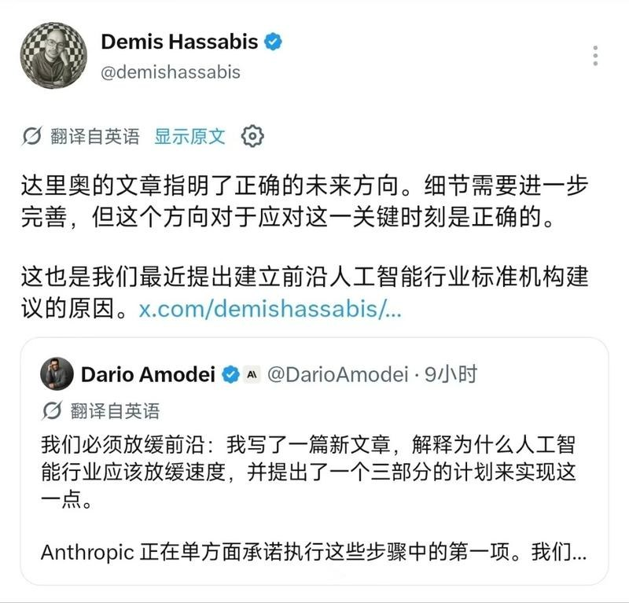
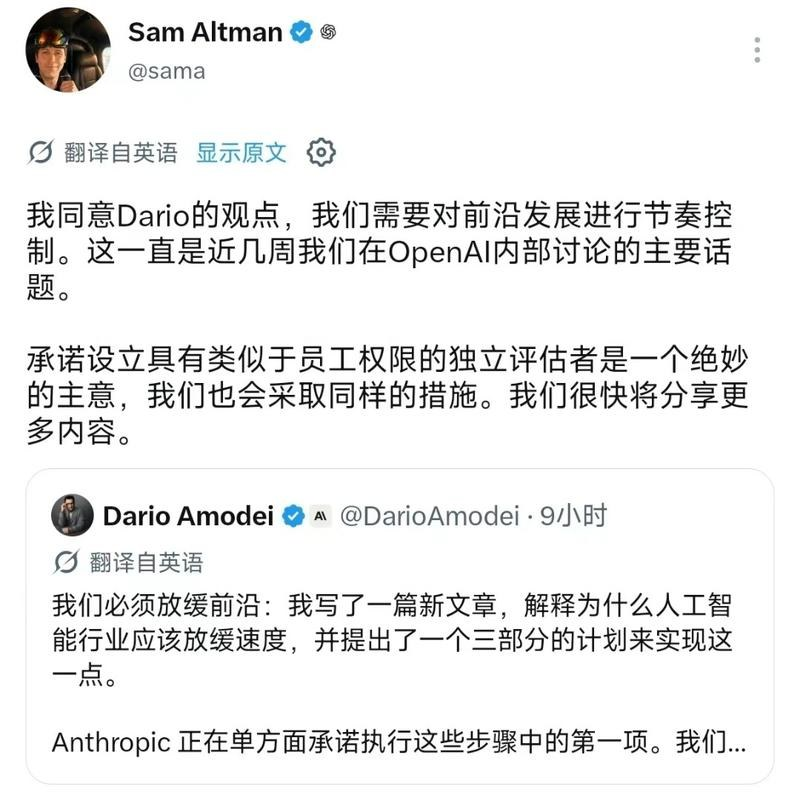
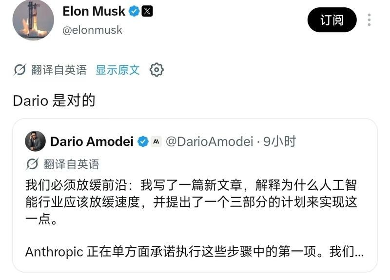
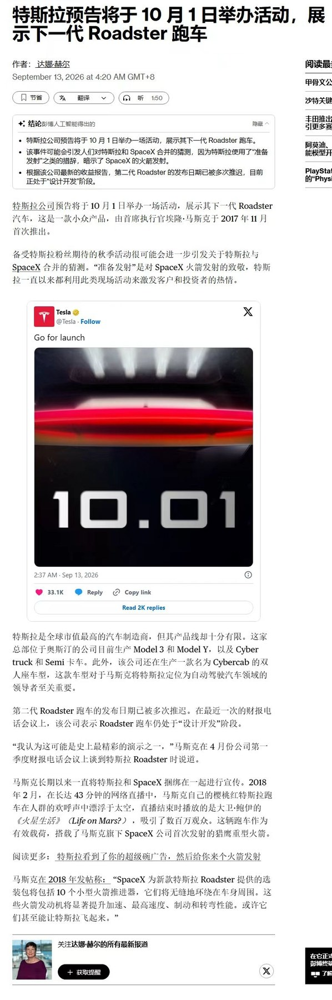
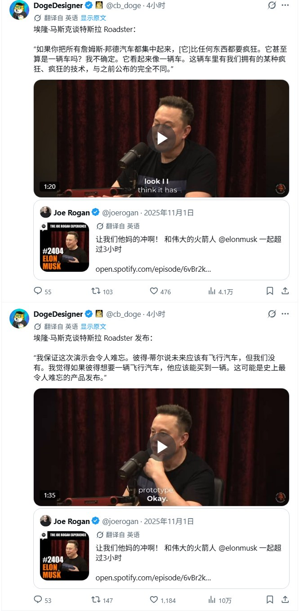
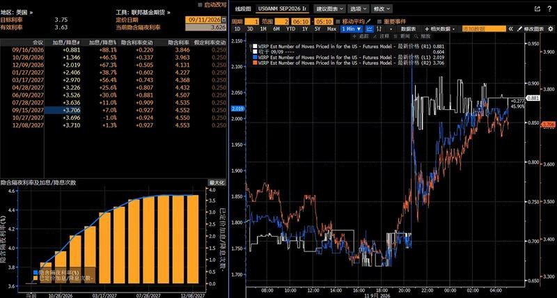
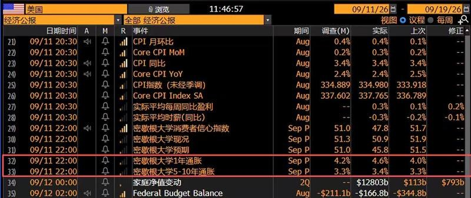
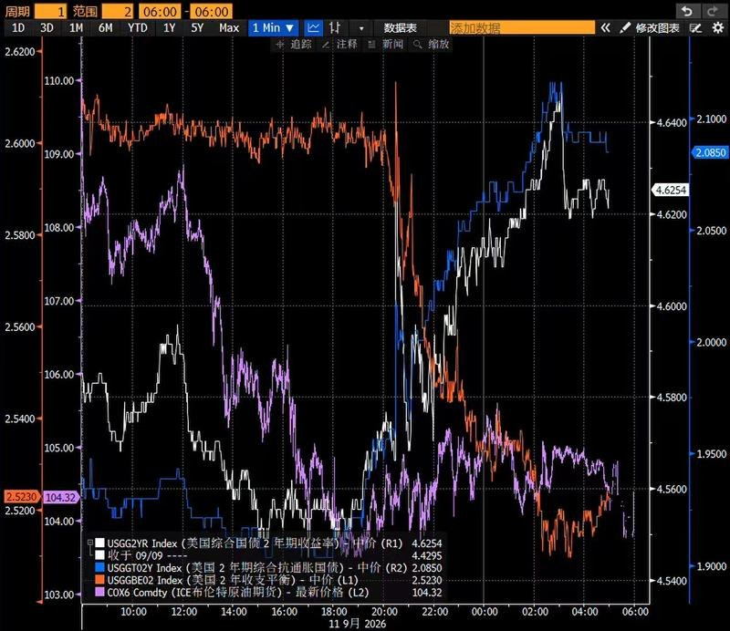
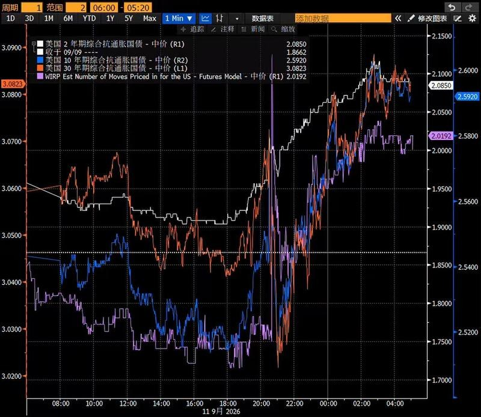
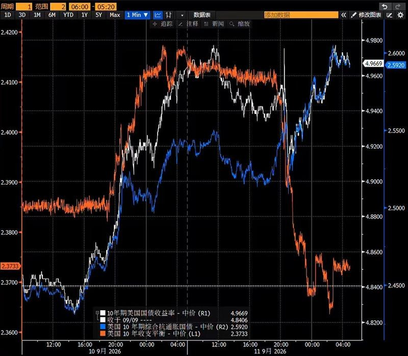

调研纪要 · 2026-09-13 新闻日报
星球 ID: 28855458518111 | 共 116 条帖子 | 精华 40 条
| 查看研究积累
强制同步到研究积累
全部 电子 计算机 其他 电力设备 非银金融 机械设备 国防军工 宏观策略 食品饮料 农林牧渔 公用事业 有色金属 通信 传媒 石油石化 建筑装饰 煤炭 家用电器 纺织服饰 汽车 医药生物
书签
📈🥇[合十][合十]【华创计算机吴鸣远团队】 ❗️AI 产业生命周期远未结束，至2030年 Token 以 12x 年化增长 20260913
📈🥇[合十][合十]【华创计算机吴鸣远团队】 ❗️AI 产业生命周期远未结束，至2030年 Token 以 12x 年化增长 20260913
✨ 昨日，电信研究院：预计2026年我国 Token 年消耗量将达到10亿亿，到2030年将超过3500亿亿，年复合增长率接近12倍
💡 观点：
1️⃣ 产业生命周期远超想象：2025年10月，AI 迎来了 Coding 时刻，以 Anthropic 为代表模型厂商迎来 ARR 与估值急剧膨胀，Coding 为 Agent 商业化实质落地带来强劲需求，
我们认为：#此时此刻、恰如彼时彼刻，产业正在迎来新一轮爆发，从 Astra、Myhos Harness，以及 V4.1 /5.3 flash 极致降成本，#Agent- Enterprise、多模态、物理AI，正在迎来行业临界点！
2️⃣ 无须悲观，底部已至！1）需求侧，无论从何种视角，CSP 支出、Token 增长，都仍在高速增长轨道上；2）供给端，Vera Rubin 海外链、国产半导体设备及AI算力链，均处在产品换代与供不应求期；3）市场角度，算力龙头高点调整-40-45%，悲观预期已 Price in，当前即底部：
3️⃣ 建议关注，核心资产：
#1 国产芯片：寒武纪、海光信息、沐曦股份、天数智芯
#2 芯片代工：中芯国际、华虹宏力、燕东微
#3 模型相关：智谱、Minimax
#4 Agent：深信服、中控技术、海康威视
#5 独家挖掘：#新相微、九安医疗、紫光国微、亚洲联网科技、海致科技、明略科技
☎ 华创计算机 吴鸣远/周楚薇/祝小茜/周志浩/杨玖祎/胡昕安/陈科玮
AI材料周观点-反弹要追求有锐度的方向20260913
AI材料周观点-反弹要追求有锐度的方向20260913
1、啥是有锐度方向？有变化、基本面真的硬、筹码结构好的方向
2、PCB材料：二三线PCB厂涨价，打开上游涨价空间。PTFE方案可能在CPO交换机做测试。整体变化指向景气、升级方向。继续关注电子布、树脂、硅微粉。#周一联瑞中报后首场线上交流
3、MLCC粉体：村田拟收缩消费及部分车规MLCC料号，有望为国内MLCC原厂带来份额承接窗口，传导至粉体端，#国瓷 存量客户需求再放大。
4、电子气体：六氟化钨在9-10月有望开启新一轮涨价。氩气价格继续上行，幅度远超季节性表现，判断后续存在韧性。#上周调研杭氧&气体专家欢迎交流
5、ABF膜、玻璃基板重点跟踪产业和价格变化。
[爆竹]风险提示：需求不及预期、竞争加剧
🏆恳请领导鼎力支持#中泰建材|孙颖团队 孙颖、聂磊、张昆、曹惠、黄雪茹、刘梦岚等
20260913周末消息汇总
20260913周末消息汇总
其他
1.宏观
①中国将于2027年接任金砖主席国
②高盛调整美联储政策预期：从此前预测按兵不动转为预计9月加息?
③花旗集团预计美联储将在9月加息，并在2027年中期之前降息
④中金：预计美联储将在9月16日会议上加息25个基点
2.农业
①三部门：强化农业科技创新 攻坚突破农业传感器与专用芯片、核心算法、机器人、智能设计育种工具等关键核心技术
②《数字乡村高质量发展行动计划（2026—2030年）》印发 明确到2030年的8项主要发展指标
3.旅游
①央视财经：中秋热门火车票开售即秒光，宝藏小城火了酒店预订量增超1000%
②上海旅游节活动启幕，近一周上海文旅预订量同比增长15%
4.欧洲部分针叶纸浆厂停工
AI
1.Anthropic对人工智能的警告或使芯片股承压 但长期影响料有限
2.英伟达据悉正就向Anthropic的IPO项目投资高达100亿美元进行谈判
3.算力
①国常会：进一步完善算力基础设施 加强算力资源监测调度和骨干光纤网络建设
②我国今年词元消耗量将达10亿亿 ，算力需求每年暴增近1000%
③央视：未来5年，预计超26万亿元投向六张网
4.光
①订单排到明年！1.6T站上了光模块“C位”，海外市场，27年800G翻倍以上增长，1.6T数倍增长
②模块散热元年，1.6T以上产品散热方案会有显著变化
③NPO方案下，TIA和Driver有通胀逻辑
④电芯片： Dsp紧缺，供货周期50周
5.业绩：市场将开始聚焦Q3业绩（二线PCB，大光，MLCC）
涨价
1.阳光电源：光伏逆变器、储能变流器和储能系统向上调价5%-15%
2.三安光电：对部分LED芯片、射频芯片、电力电子芯片、光技术芯片价格进行上调
国海海外宏观和大宗商品组王之凡团队
国海海外宏观和大宗商品组王之凡团队
# 海外宏观大类资产配置20260913:
【cpi点评】8月美国cpi同比3.4%符合预期，核心CPI环比0.3%超预期，推动9月加息预期上行。核心CPI环比的超预期主要来自电信运营商集中涨价和高波动项影响。粘性cpi温和，非粘性cpi维持偏强。沃什提到的通胀上涨分项占比变化温和。整体来看，cpi数据超预期彻底打消9月政策不确定性，叠加近期飙升的原油价格，未避免美债收益率失控，9月加息几乎已成定局。但市场本身对加息定价相对充分，2年内加息预期定价近4次。期限利差在数据公布后反而收窄，市场的不确定性消散推动利空出尽交易，美股、黄金有所上涨。
【9月美联储议息会议前瞻】展望fomc，这份cpi数据让9月加息几乎已成定局，但更多博弈落在利率路径上，市场仍需要美联储明确到底是短暂调整还是开启加息周期。从目前cpi数据成分来看，高波动项贡献较大，能源仍然是主要推动，内生性通胀压力有限。从cpi预测来看，主要症结仍然在原油汽油价格，如果美伊局势能有效缓解，能源价格明确下行，则cpi可能走回回落通道。我们对于美联储行动的判断仍然是短暂调整。如果价格高位持续时间继续超出预期，则不排除年内还有再度加息可能。但针对能源价格的加息仍在技术性调整框架内并非加息周期，在能源价格下行后，预期仍然可能快速回摆。
【资产配置】
1️⃣黄金：短期震荡，需等待明确利率路径，但开启大加息周期仍是小概率事件，不排除反复交易利空出尽。原油明确见顶后或再度反弹上行。中长期而言，黄金长期核心逻辑仍然稳定甚至有所加强，长期仍然看好。
2️⃣美债：10Y美债收益率阶段性顶部震荡，但仍然受到油价干扰，如果油价再度大幅上行，则不排除再度推升收益率。短期大幅下行仍然需要油价确定性回落。
3️⃣美元：震荡。加息预期定价相对充分，短期主要受到非美货币走势、原油影响。
4️⃣美股：短期短暂走出利空出尽，主要驱动仍然在ai产业链本身，短期产业链上游确定性仍然更强。
5️⃣原油：低库存下继续维持偏强等待美伊局势明朗，目前特朗普有一定的taco激励，但政治压力仍大。值得注意的是言语taco很难明显缓解原油压力，仍然需要实际行动。
【风险点】原油再度超预期上行，fomc超预期鹰派
☎详细联系：国海海外宏观&大宗商品组
王之凡，吴悠, 或对口销售。🏁打分派点请打： “王之凡”/钢铁组/钢铁组王之凡/海外宏观王之凡 （根据贵司不同分类）[抱拳]
个人量化交易正面临系统性收紧
个人量化交易正面临系统性收紧
核心是封堵“灰色外接通道”、强化“穿透式监管”
一、监管动作本质：清理“野路子”，保留“正规军”
监管层并非禁止个人使用程序化交易，而是重点打击三类未备案、绕风控的“灰色路径”：
- 裸API直连柜台：个人用Python等语言直接对接券商交易系统，未走合规外接备案流程；
- 外挂破解工具：通过第三方软件破解客户端、非法反采行情数据，存在刑事风险；
- 公有云/虚拟机跑单：将交易程序部署在脱离券商监控的公有云或虚拟机上，无法实现穿透式管理。
这些路径因缺乏透明度、易滋生配资、分仓、代客跟单等违规行为，成为本次清理的核心目标。
二、合规路径仍在：QMT/PTrade等官方系统仍可接入
对于希望继续从事程序化交易的个人投资者，监管提供了明确的合规迁移通道：
- 完整版QMT或PTrade：作为券商官方提供的量化终端，内置Python环境、回测引擎及风控模块，符合“先报告、后交易”原则。用户需满足风险等级C4及以上、近20个交易日日均资产10万–50万元（视券商而定）、6个月以上实盘经验等条件，并完成策略备案。
- MiniQMT逐步退出：因其基于xtquant独立接口，技术架构被界定为“外接系统”，多家券商自2026年7月起已停止新用户开通，存量用户暂不受影响，但后续大概率逐步关停。
- 基础自动化工具不受限：券商APP自带的网格交易、智能条件单、定投条件单等零代码工具，无需备案，风险等级C3及以上即可使用，完全不受本次调整影响。
三、高频交易约束升级：速度与频率被严格限制
即使通过合规系统接入，个人量化交易也面临更严格的报单与撤单限制：
- 最小挂单停留时间≥50微秒：禁止“秒挂秒撤”，防止虚假报单；
- 每秒撤单上限≤15笔：单日撤单率≤15%，超限将被加收惩罚性费用；
- 高频认定门槛大幅降低：单账户每秒申报+撤单合计≥15笔，或全日合计≥20000笔，即被认定为高频交易，需额外报备服务器信息、系统测试报告及应急方案，并承担差异化收费。
四、对市场生态的影响：公平性提升，策略需重构
此次调整旨在重塑市场公平性，消除“付费插队”和速度特权：
- 独立交易单元整改：暂停新增VIP通道，存量单元至少10个账户共用，清退交易所机房专属托管，统一网络延时；
- 北向资金同标准管理：外资程序化交易不再享有特殊豁免，执行与内资一致的监控与备案标准；
- 策略逻辑需调整：过去依赖高频、低延时、批量埋单的策略（如T0、打板）已难以为继，投资者需转向中低频、注重基本面或事件驱动的策略。
【钽电容】【半导体MFC】【海外户储】【AI制药】【炼化】【Robotaxi】调研要点
【钽电容】【半导体MFC】【海外户储】【AI制药】【炼化】【Robotaxi】调研要点
【钽电容】
1）下一代Rubin Ultra的单机柜钽电容用量会是这一代Rubin的3倍，均价预计会进一步提升到7元每颗。
2）聚合物在钽电容整体里的占比今年预计有80%，高端聚合物钽电容价格范围从三块到十几块，而普通二氧化锰产品只要五毛到一块五。
3）基美、松下以及国产玩家都在扩产，但扩产速度跟不上服务器需求暴增，预计供给紧张会持续到27年。
【半导体MFC】
1）半导体MFC国外玩家是Horiba、MKS和Brooks。Horiba占了80%以上的量，基本是垄断。国内主要是华丞、高凯等。
2）公司MFC产品价格比Horiba同规格低20%-30%，客户对半导体MFC国产替代相对谨慎，但是当国产没问题的声音越多越多，客户也会衡量风险去尝试。
3）公司今年MFC增长快，国内外FAB厂扩产，Horiba国内交期受到了影响，公司从去年开始就一直不停在客户关系上做铺垫，今年算是开始收获。目前有扩产规划。
【海外户储】
1）本轮美伊冲突刚刚开始，目前更多是催化剂与导火索，其对各国LNG运输、港口相关价格以及后续各国基准电价的影响要过1-2个月才能看出。
2）西班牙、意大利、德国、波兰、乌克兰等欧洲主要市场当前处于缺货补货状态，渠道基本无库存。
3）英国现金补贴行业内原预计二季度落地，至今未出，最新预期四季度落地。
【AI制药】
1）生命科学事业群全年收入有望实现25%-30%的增长，AIDD下半年收入预计翻番并突破1亿美元。
2）AI-native biotech为公司AIDD最主要客户群体，单条管线年订单金额为100-300万美元。
3）金斯瑞与Twist的竞争核心不在于同质化的低端规模竞争，而在于每次交付结果的价值、数据生成速度以及客户能够信赖的数据质量。
【炼化】
1）俄罗斯与中东的炼厂产能分别受俄乌战争与美伊冲突影响，全球炼厂开工率显著下降。
2）柴油裂解价差预计未来仍将保持强势，柴油供需格局紧张，即便战争局势缓和，海外炼厂产能也需要时间恢复。
3）恒逸的文莱产能显著受益于今年柴油裂解价差的大幅提升，当前文莱厂满产满销，且公司在文莱享受所得税减免，效益优势明显。
【Robotaxi】
1）百度车队近3000台，小马车队1800台，文远包含全球的车队是1600台，曹操、滴滴等车队规模在百台级别。
2）文远知行目标在3年内于国内开始实现盈利，主要通过车辆集中投放一线城市，提高订单量和每单价格以及车型降本来实现。
3）海外市场，百度主攻东南亚，兼顾中东；小马主攻欧洲，次攻中东；文远主攻中东，次攻欧洲和东南亚；特斯拉Cybercab目前仅在美国运营，至少3年内无法在欧洲、中东等地区落地。
因美国AI三巨头表态将放缓AI扩张节奏，消息发酵后，美股一众AI硬件暗盘集体承压大跌。
因美国AI三巨头表态将放缓AI扩张节奏，消息发酵后，美股一众AI硬件暗盘集体承压大跌。
截止目前：
SK海力士暗盘跌4.1%
英伟达暗盘跌2.0%
闪迪暗盘跌3.4%
美光暗盘跌3.5%
英特尔暗盘跌3.7%
戴尔暗盘跌2.1%
康宁暗盘跌4.2%
lumentum暗盘跌1.3%
迈威尔科技暗盘跌4.3%
超威AMD暗盘跌2.8%
简单科普：美股暗盘属于盘前场外撮合交易，流动性弱、波动容易放大或缩小，只能作为情绪先行参考，并非正式开盘行情。真实有效的盘面数据，要等到周一08:00美股正式夜盘开盘后再看。
[抱拳]请多支持【东吴电新】宁德时代：首笔回购落地，真金白银托底，低估龙头继续强推！
[抱拳]请多支持【东吴电新】宁德时代：首笔回购落地，真金白银托底，低估龙头继续强推！
[太阳]事件：9月11日，公司首次实施A股股份回购，通过集中竞价交易方式回购604293股，占公司当前总股本的0.0131%，最高成交价331.61元/股，最低成交价330.15元/股，成交总金额约2亿元（不含交易费用），回购股份用于注销并减少公司注册资本。
#宁德增长量、利Alpha极强、超行业增速。宁德时代竞争力持续领先，1-7月全球份额突破39.9%，国内份额维持45.4%，下游客户结构较为分散，我们预计26年出货950-1000GWh，同增45%-50%，27年出货1.2TWh+，同增25%-30%。行业扩产受收归发改委审批，27年产能利用率基本稳定，龙头均满产满销，没有价格战预期，随着锂价中枢下行，自有锂矿复产对冲成本，抵消消费税、出口退税扰动，宁德时代盈利具备稳定性，全口径单Wh利润维持0.1元左右。
#布局储能系统、AIDC及换电业务、打造能源综合解决方案。 储能端，公司持续向系统端延伸，覆盖直流侧、交流侧储能及电站整体解决方案，海外突破澳大利亚24GWh储能订单，系统集成能力持续提升。AIDC端，围绕AI数据中心能源需求，通过投资中恒科技、通道云互联等方式，补齐HVDC供电、储能配套及IDC运营环节，并成立AIDC部门推动业务落地，有望打开AI能源基础设施新增量空间。换电端，持续推进换电网络建设，通过换电模式加强车企绑定，推动商业模式由To B向To C能源服务延伸，打开电池资产运营新空间。
[爱心]投资建议：我们预计26-28年归母净利润962/1215/1468亿，同增33%/26%/21%，对应PE为16/13/11x，公司目前已开启200-400亿回购，预期股息率3.9%，给与27年25x，对应目标价656元，继续强推！
[爆竹]风险提示：销量和盈利不及预期。
阳光电源：逆变器及储能系统涨价5~10%、利润弹性显著、贸易政策利空陆续出尽、估值底部继续强推！
阳光电源：逆变器及储能系统涨价5~10%、利润弹性显著、贸易政策利空陆续出尽、估值底部继续强推！
#事件 公司发布产品调价告知函：考虑本轮上游物料涨价幅度持续超出预期，公司决定对相关产品价格进行调整：1）光伏逆变器：组串式逆变器/模块化逆变器/矩阵逆变器涨价5~10%，中压并网光伏逆变器涨价10~15%；2）储能变流器：储能变流器涨价5~10%，储能变流一体机涨价10~15%；3）储能系统：大储/工商储系统（即PT及PS系列）涨价5~10%。本次调价执行日期为26年9月20日，自正式执行日期起，所有新签约/下达的合作订单，将统一执行调整后的价格体系。
#逆变器及储能系统涨价、利润弹性显著 我们判断此次涨价主要系逆变器上游（PCB、IGBT等）、储能系统上游（碳酸锂等）材料价格显著提升，公司通过向下游传导的方式保持盈利能力。考虑26Q2碳酸锂价格回落，我们预计公司26Q4储能毛利率将进入拐点，27年起展现涨价弹性。假设按照27年储能系统600亿收入计算，仅按5%涨价幅度，对于利润增厚超30亿元，利润弹性显著！
#构建AI电源生态、AI储能及SST潜力可期。 1）AI储能：公司在手订单2GWh，跟进项目约十几GWh，预计27年进入订单交付期，28年迎来爆发式增长。2）SST：国内已中标之江实验室项目、与东阳光等签130MW意向订单，与海外谷歌、meta、AWS等均有直接对接。当前SST已有个别发货，预计27年为产品推广期，以小批量交付为主，28年起进入大规模交付阶段。预计未来2-3年AIDC业务CAGR预计超过100%，成为公司重要增量。
[太阳]观点重申：27年我们预计利润在180亿，估值不到10x；美国占比预计20-30%，剔除美国部分预计在130-140亿，当前估值仅13X；今年非美储能市场订单爆发，整体翻倍以上增长，欧洲储能订单尤其好，当前看欧洲贸易政策影响有限，碳酸锂中枢价格下行和新签单价格改善盈利修复可期，此外，AIDC方面，SST国内已有交付，东南亚有项目在谈，北美CSP合作推进也很深入，成长逻辑清晰，目标市值5000亿+，继续强推！
【皖仪科技】AVC订单落地，AI液冷0到1开始兑现
【皖仪科技】AVC订单落地，AI液冷0到1开始兑现
#公司近期获得AVC近1e液冷检漏设备订单，液冷0-1放量开始。公司依托氦质谱/氢质谱检漏核心技术积淀与智能制造装备优势，系统性突破液冷行业高精度密封检测与高速产线节拍的技术瓶颈，构建适配AI服务器液冷系统的全流程气密检测解决方案，精准覆盖冷板、管路、接头、液冷分配装置等核心部件的密封性检测。
公司股权激励业绩目标为26/27年营业收入不低于10.66亿元（同比+50%）/12.79亿元或者26/27年归母净利润不低于1亿元/2亿元。#按照27年2亿利润，对应PE仅22x，估值性价比极高
【炬光科技】调研反馈@260913
【炬光科技】调研反馈@260913
[太阳]周五公司组织投资者开放日，由董事长、董秘、光通信负责人、消费电子负责人和泛半导体负责人分别演讲并与投资者交流，其中针对光通信板块的更新信息较多。
[烟花]指引更清晰：公司2026年三四季度的目标是实现盈亏平衡。早在2017年公司定下2027年5亿美元的长期营收目标，目前虽然有压力，但是仍在努力实现，根据已有订单及客户预期，CPO/NPO会有一个非常大幅的增长。
[礼物]优势更明显：公司在CPO/NPO/OIO/OCS这些新领域已顺利切入了供应链，核心受益于终端客户指定合作。目前公司用于CPO的外置光源的双锥透镜、V型槽产品、MPLA等产品的技术与市占率均为全球第一!
[庆祝]订单更量化：CPO中的V槽和外置光源透镜产品，公司已分别获得了数百万只的订单，我们测算可达亿级别收入体量，更大规模订单仍在接触中。此外MPLA技术转让已经签署并在执行中，第一笔款项已经到账；OCS的透镜阵列，从2025年到2026年的销售额翻了将近十倍！
[福]覆盖更广泛：公司从CPO中的透镜、V槽、MPLA的三款优势产品，根据客户的需求，进一步延伸至衬底和组装测试设备等更多领域。其中氮化铝衬底用于ELSFP中，性能优于日本厂商，正在逐步导入客户验证；自研FAU配套测试与生产设备已开始外售，助力客户FAU制备成功率达95%以上。
[红包]布局更长远：今年公司更新提出2035年15亿美元收入的新阶段目标，主要支撑是基于微纳光学平台，提前播种新应用场景，包括在核聚变、卫星通信、量子计算以及传感等未来赛道的提前布局。
[玫瑰]公司近期CPO明确斩获订单，核心产品行业领先，业绩有望进入上行通道，未来规划宏伟且清晰，持续重点推荐！更多开放日细节信息可联系交流~
🔥【华润啤酒】交流核心要点 260913
🔥【华润啤酒】交流核心要点 260913
[啤酒]近况：26H1公司销量增长1.7%，7-8月受雨水天气影响动销压力较大，9月份开始略有好转，但整体进入淡季，下半年销量预计有所承压，争取全年销量保持稳健。
[啤酒]渠道变化：26H1公司现饮渠道销量占比为30-35%，同比下降3-4pct。公司积极加强非现饮建设，与歪马送酒、胖东来等展开合作，紧跟消费需求变化。
[啤酒]吨成本：上半年成本略有增长，主要因铝价上涨。25H1公司原材料红利较大，今年较同行相比表观成本压力显现更早，预计全年吨成本仍有小幅上涨。若明年成本压力仍大，#不排除提价可能性。
[啤酒]费用率：上半年啤酒销售费用率同比+0.5pct，主要用于新品推广；管理费用率下降1pct，主要来自工厂优化及后台人员精简，下半年仍有体现。
[啤酒]区域表现：华东表现相对较好，目前利润贡献已超过四川；福建市场2025年高端市场份额已超越友商，2026年优势扩大；四川市场整体销量平稳，高管更换，#后续开启对纯生的产品升级。
[啤酒]全年展望：#预计下半年销量略有压力、但吨价因为基数因素好于上半年。全年公司力争保持销量平稳，吨价略有增长，预计大致趋势于上半年一致。
🎉详情欢迎沟通 #长江食品饮料董思远团队🏅，#恳请鼎力支持🏆！~
#兴森科技2026年员工持股计划：
#兴森科技2026年员工持股计划：
董秘兼财务总监蒋总认购50万股，按照受让价格19.4元，出资970万
总工程师乔总认购40万股，按照受让价格19.4元，出资776万
考核收入目标：26-28年分别不低于80亿（+11%）、100亿（+25%）、120亿（+20%）
【东吴电子陈海进】杰华特：涨价开启、盈利修复，强call#AI算力电源核心标的！
【东吴电子陈海进】杰华特：涨价开启、盈利修复，强call#AI算力电源核心标的！
📮调价趋势开启，重视模拟景气与盈利修复
杰华特官网发布#产品涨价函 ，本次价格调整自2026年9月1日起正式生效。成本上涨叠加供货紧张，推动产品调价开启。随着调价逐步执行、高毛利产品占比提升，盈利能力有望持续改善。AI贡献增量、工业需求复苏，持续看好#模拟上行大周期！
📮观点重申：客户加速导入，DrMOS放量是核心
公司DrMOS及多相控制器已在头部算力客户放量，其他国内主要算力客户亦加速导入，当前核心限制仍是产能。依托自有工艺及完整产品矩阵，公司持续拓展晶圆厂合作，新增产能预计2027年开始加快释放，有望推动订单转化为收入。#涨价与放量共进！持续看好杰华特AI算力电源的卡位优势！
风险提示：行业竞争加剧、宏观经济波动导致需求不及预期
🎁东吴电子：陈海进/谢文嘉
摩根大通 JPM：云厂商（CSP）AI 资本开支 —— 内存将成为 AI 硬件预算核心
摩根大通 JPM：云厂商（CSP）AI 资本开支 —— 内存将成为 AI 硬件预算核心
大摩——工业CEO闭门峰会——万流归宗，一切指向数据中心
大摩——工业CEO闭门峰会——万流归宗，一切指向数据中心
摩根士丹利于近期举办年度工业CEO闭门峰会，汇聚逾50家企业及约400名投资者。会议反馈整体积极，尤其对2026年下半年及2027年的数据中心需求保持高度乐观。与会企业普遍维持建设性展望，并强调当前数据中心订单与交付节奏保持纪律性，未见重复下单迹象。行业利润率方面，进入2027年上行风险大于下行风险，其中Rexel与Atlas Copco在炉边对话中展现出尤为突出的信心。摩根士丹利重申对部分个股的偏好：将罗格朗（Legrand）列为行业首选，上调凯傲（Kion）至超配（Overweight），维持对采矿设备板块的积极看法（偏好Epiroc），同时超配西门子能源（Siemens Energy），低配瓦锡兰（Wartsila）；其他低配评级包括昕诺飞（Signify）与通力（Kone）。
会议五大核心主题
1. 数据中心需求持续超预期：短期维度，Rexel指出2026年下半年数据中心需求运行强度已超越初始预期，这对覆盖范围内同样涉足该领域的“白空间”标的（如罗格朗）构成积极交叉验证，其有机增长有望在2026年下半年进一步加速。针对市场对“重复下单”的担忧，ABB与施耐德电气均予以反驳。施耐德具体阐述其数据中心订单有较高比例预付款支撑，且客户具备明确的量与架构路线图，前二十大客户规划视野已延伸至三年后。关于800V直流技术，各企业预计2030年安装占比在10%-25%区间，但施耐德与ABB均认为在此技术迭代中每兆瓦的配套机会价值相对稳定。
2. 美国资本开支全面走强：尽管近期8月ISM新订单数据疲软引发对美国工业需求的疑虑，但与会企业反馈美国市场呈现广泛强劲态势。Atlas Copco压缩机业务明确受益于天然气基础设施投资、太阳能投资、燃气轮机及美国汽车领域的资本开支。西门子亦强调美国是其数字化工业业务最强区域，数据中心相关产品生产间接拉动了机床及配套PLC的需求。
3. 2027年行业利润率前景乐观：过去两年市场持续试图预判电气化及行业利润率顶部，但摩根士丹利从会议中捕捉到多条利润率继续扩张的杠杆。7月电气化领域（如施耐德）已落实新一轮提价，ABB（北美电气）、施耐德（生产力提升）及Rexel（AI应用与欧盟重组）均具备个股层面的利润率驱动因素。综合会议乐观基调，摩根士丹利认为2027年电气企业利润率更可能正向超预期而非令人失望。Atlas Copco在压缩机领域更侧重增长而非利润率扩张，但其在压缩机与真空业务上均看到通过创新与产能爬坡提升市场份额的机会。
4. 原材料与能源通胀风险可控：企业更强调天然气/石油价格上涨的间接风险，而非直接盈利冲击。拥有积压订单的企业（如Kion IAS、NKT、西门子能源）指出，合同条款中通胀转嫁机制已较2021-22年通胀飙升期显著改善。电气化企业预计，随着2026年上半年提价在下半年持续向成本端传导，价格成本（即毛利率）动态将在2026年下半年改善。Kion亦认为类似逻辑将支撑其2026年下半年工业卡车与供应链（ITS）利润率。但摩根士丹利提示，对部分企业（如昕诺飞）的担忧犹存，因其盈利改善本已高度依赖下半年，且建筑与线上零售终端市场仍具挑战。
5. 欧洲需求更多由主题驱动，而非广泛复苏：欧洲工业周期整体未见明显起色，但热管理/热泵、电网投资及实体AI等主题增长强劲。Rexel指出，在油气价格攀升背景下，欧洲持续聚焦能耗削减，推动“电气化”相关领域（热泵、太阳能、充电桩）需求在2026年三季度保持强劲。Alfa Laval向热泵OEM的订单进展良好，但仍低于峰值水平。西门子AI代理（PLC编程）快速普及，Kion对与英伟达/西门子的合作充满信心，均指向效率提升的持续投入，而两家公司强调的核心护城河在于领域知识与数据获取权。
重点个股观点
• Rexel与Atlas Copco：炉边对话中信心最为突出，对数据中心及美国资本开支的乐观表述强化了基本面韧性。
• 施耐德电气：管理层持续聚焦内部定价优化与生产力提升，摩根士丹利认为其2027年有机增长风险偏向正向超预期。
• 西门子能源：公司对订单管道保持信心，与近期表态一致。摩根士丹利维持核心观点，即随着2028年倍数（11倍EV/EBIT）向更高的2029年EBIT预测（+23%增长）滚动，股价应呈震荡上行态势。
摩根大通——硬件与网络：2026年新兴科技领袖论坛纪要
摩根大通——硬件与网络：2026年新兴科技领袖论坛纪要
摩根大通在纽约举办了"2026年新兴科技领袖论坛"，与会公司包括Calix、Ciena、HP Inc.、NetApp、Sanmina及Semtech
------
Ciena（CIEN）——市值最大
需求与指引
需求韧性持续，管理层重申FY26末积压订单将超100亿美元。受供应链约束影响，FY27营收增速基线指引至少为同比30%以上，叠加与核心客户的长周期能见度，支撑中期需求前景保持健康且可持续。管理层同时表示，有望恢复中期指引（此前因需求环境高度动态化而暂停近一年）。
规模扩张（Scale-across）
规模扩张部署尚处极早期阶段，Ciena有望在已占据50%—70%的主导份额基础上进一步提升市占率。部署包含光子线路系统及相干端点（以相干可插拔模块或嵌入WaveServer等系统的高性能光模块形式交付），FY27两部分合计营收预期为数亿美元量级。需求来源包括超大规模云厂商的直接建设以及通过MOFN（城域光融合网络）服务他们的电信运营商。
供应链瓶颈
制造产能并非制约因素（Ciena依托多家合约制造商，且自主掌握测试设备的IP与产能——这是吞吐量的关键决定因素，公司已提前投入资本开支）。核心瓶颈在于元器件供应（如泵浦激光器和光封装），应对路径包括：(1)认证额外供应商，尤其是泵浦激光器；(2)深化垂直整合（相干调制解调器已实现高度垂直整合，交换机则较低）；(3)通过长期供应商承诺锁定产能分配。
数据中心内部机会
至本年代末，数据中心内部机会将占TAM的约20%。当前仅数据中心带外管理（DCOM）产生营收（来自单一客户），每新增一个客户预计带来数亿美元增量。Nubis收购将贡献两条新收入线：(1)有源铜缆与重定时器，FY27预期温和营收，后续逐步放量；(2)面向XPO的光引擎（每通道200G，3.2/6.4T，与Tomahawk 7级交换机对齐），营收预计FY28启动。此外，Coherent-lite（旨在推动相干光技术在数据中心内部的渗透）同样预计FY28开始贡献营收。整体而言，至本年代末，数据中心内部机会对应的TAM约100亿美元，而公司总TAM约500亿美元。
毛利率
管理层将45%确立为毛利率新基线，上行驱动包括：(1)向高毛利方案的有利组合迁移（如类硅数据中心产品——重定时器、光引擎，以及因定价哲学转向按价值定价而非传统刀片式定价而带来利润率增厚的多轨线路系统）；(2)长期协议提供显著的价格确定性（对比历史上的合同价格侵蚀），使公司得以保留设计降本成果而非让渡给客户；(3)鉴于供应商在定价决策上态度明确，将上涨的元器件成本转嫁给客户。
研发优先级
研发支出按以下顺序分配：技术周期迭代（最大占比，如当前从3nm WaveLogic 6向2nm WaveLogic 7的过渡）> TAM扩张与客户导入（如共封装光学和重定时器等数据中心内部机会）> 现有方案的新客户上量（如DCOM）。除研发运营杠杆外，管理层强调随着营收组合向超大规模云厂商倾斜（决策更集中，而电信客户需更广的销售覆盖），销售效率将进一步提升。
推理与训练
长期来看，推理有望超越训练成为更大的机会。当前AI训练是更大机会（构建定制化的高带宽网络以支持分布式训练及更广泛的AI骨干网），而推理仍主要来自现有网络上的通用流量。但管理层预计未来几年推理在流量中的占比将大幅提升，可能成为多数。具体而言，推理将更分散，流量经融合骨干网传输至主要城域网接入点，再进入小型定制化城域网络。因此，虽然单个推理项目规模小于训练项目，但总体机会最终可能更大。此外，不断增长的推理与智能体AI流量将进一步提升骨干网带宽需求，并随时间推移支撑公司超轨架构的更广泛应用，尽管时机仍不确定。
------
NetApp（NTAP）
需求韧性
管理层将需求定性为结构性驱动（由AI基础设施投资建设推动），并重申了近期上调的F2Q27及FY27预期——在财年早期即进行非典型的下半年上调，体现了对需求环境的信心。尽管受定价影响，F1Q27存储容量出货量同比下滑，但整体存储支出预算保持韧性，各部门流向IT支出的AI预算亦如此。技术更新节奏稳定（对比此前通胀周期中的放缓），指向健康的潜在需求环境，意味着下半年减速更多源于保守预期而非实质性放缓的早期信号。
产品毛利率
F1Q产品毛利率54%超预期（指引低端附近），由有利组合及高于预期的使用低成本库存驱动，但两者均不可重复，故F2Q27指引为环比下滑，FY27下半年利润率持平。全年公司毛利率指引因组合因素下调约40个基点。管理层指出NAND价格上涨放缓有助于未来规划，且公司已以优惠条款锁定FY27全年内存供应。
NAND与HDD价差
NAND涨幅高于HDD，推动需求向混合闪存迁移，但对利润率影响有限。NetApp产品组合覆盖高性能及中端闪存方案以及基于HDD的混合闪存。近期QLC与HDD定价分化，成本敏感型客户需求正向混合闪存转移（已连续两季度同比增长，但全闪存增速仍更快）。鉴于全产品线的定价举措，向混合闪存的迁移对利润率影响甚微，而NetApp在全闪存与HDD领域的广泛产品组合是相对同业的核心差异化优势。
竞争定位
NetApp在最近季度从竞争对手处夺取份额，管理层认为AI浪潮将惠及所有参与者。NetApp的价值主张在于"商品硬件+专有软件"，相较商品化IT系统更难被替代。管理层坦承价格驱动的竞争是该品类的常态，每家供应商都会周期性地牺牲利润率以夺取战略客户，NetApp亦曾身处攻守两端，结果无明确规律。
公有云
公有云毛利率目标已上调至约80%—85%（此前为70%—75%），过去三年实际水平甚至更高。管理层暗示该目标未来可能进一步上调，将云经济效益定位为相对竞争对手的重大差异化优势。此外，NetApp提及最终将向Azure数据中心部署系统，这将驱动部分投资，但管理层预计利润率仍将维持在80%以上，影响定性为暂时性而非结构性。最后，NetApp与超大规模云厂商的关系正助力其赢得新云（neo-cloud）订单，以传统云模式销售系统。
------
HP Inc.（HPQ）
CEO过渡与FY27展望
管理层强调运营在CEO过渡期间未受影响（搜索已进行7个月，通常需6—9个月），深厚的梯队和Bruce的无缝衔接使新联盟与交易推进未受影响。管理层对F4Q26代表利润率底部充满信心，预计FY27各季度（除季节性因素外）环比改善，因成本增速较FY26放缓。
成本应对
内存BOM占比1H26约35%，预计年底趋近40%并持续至FY27，内存价格增速放缓提供了更好的能见度。应对成本压力的工具箱包括：确保及时供应、向高毛利AI PC及工作站转移组合、采取支持性定价行动、以及通过内存优化和WXP智能配置来引导供需。树脂等大宗商品虽也在涨价，但BOM占比远小于内存且涨幅更缓。日元走弱增加了重新定价难度，但新打印机发布有望部分抵消成本压力。
利润率驱动
展望未来，组合将成为利润率的第一驱动力（结构性顺风），其次是成本优化，定价因弹性考量被刻意置于末位。合约重新定价进展合理，但多年期企业/公共部门合约（约3/4营收来自商用）比交易型托管设备服务（MDS）更难重新定价。鉴于低端PC换机仍延迟且不太可能回到200—300美元价位段，管理层优先通过保护高端份额（正在提升市占率）来追求营业利润，同时防守600—1000美元的主流价位段（约占市场40%），该段已流失入门级份额。
边缘/混合AI
边缘/混合AI正成为核心战略驱动力。管理层将AI定位为分布式/混合模型，由智能编排器根据token成本、延迟、连接性和安全性在设备端、本地和云端之间路由工作负载。设备端AI的持续性由移动/离线工作者、计算机视觉延迟和安全敏感型开发者等用例支撑，新的"智能体PC"品类可能进一步加速需求。开源模型（GPT-OSS、Gemma等）和仅NPU智能体进一步推动采用，HP在芯片选项上具备灵活性（Intel、AMD、Qualcomm及NVIDIA RTX），其中Qualcomm在性能/功耗比上最优，在消费级/SMB品类市占率正提升。
WXP
WXP是HP基于订阅的设备群"控制塔"，让IT团队能够细分用户画像并合理配置，同时也作为价格敏感客户的设备退役工具，正被定位为高毛利、提升附加率的经常性收入杠杆。尽管推出仅数年，WXP已拥有超500万台设备注册，为经常性软件收入建立了可观的安装基数。长远来看，WXP可能演变为企业设备和AI智能体的控制层，随着AI向边缘迁移，有望成为更大的战略性软件平台。
打印业务
在贡献总营业利润三分之二的打印板块，管理层正执行F4Q26硬件策略，在连供打印机（tank printers）上取得显著份额提升（已升至20%中段，而整体打印机市场地位约30%中段），品牌力支撑下预计F4Q26持续获客。然而硬件利润率低于目标区间，拖累短期盈利。该策略可能导致F1H27利润率处于低端，但管理层预计将被订阅增长和严格的成本管理所抵消。
关税退款
F3Q26营业利润率18.1%（剔除1.2—1.25亿美元关税后为16%—19%目标区间的低端）。F4Q26指引已包含约9000万美元关税退款，另有8000—9000万美元因仍在处理中而未纳入，若当季兑现将构成F4Q26营业利润的上行空间。
------
Calix（CALX）
平台化捆绑
Calix已从模块化产品转向企业订阅协议（ESA），客户可访问全部产品组合，鼓励端到端平台采用而非从其他供应商采购单点方案。随着额外功能累积至平台且不额外收费，为下一代ESA的平台定价跃升铺路。交叉销售动作因此减轻，销售团队可更聚焦新客户获取（即"一对多"模式）。
Managed MDU
Managed MDU是下一增长机会，聚焦邻近的企业及物业导向市场，拥有独立领导团队和单独的上市组织。管理层视其为分散化、碎片化的数十亿美元TAM，有望捕获10—20亿美元机会。其中多户住宅（MDU）是子集，传统上室内网络由系统集成商拼接多供应商方案，Calix的策略是将其整合为基于现有SmartLife组合（SmartHome、SmartBiz、SmartMDU、SmartTown漫游Wi-Fi）的单一托管方案，类似平台可延伸至酒店、校园和电网网络。随着大量工程人力从Calix One平台过渡中释放，计划快速构建面向邻近市场的垂直特定用例。
AI策略
Calix内部部署标准化的企业级智能体AI，驱动运营效率并加速产品迭代，预计2027年实现年度产品功能迭代速度的显著跃升。同时，Calix通过投资搭载Nvidia刀片的私有数据中心（Google提供额外算力）以及依赖开源模型，将成本结构与按使用量计费的AI token支出隔离。Calix One平台的端到端特性实现了客户工作流的自动化，改善客户投资回报率并增强全平台附加价值。Calix拥有超18个月的工作流自动化路线图，客户通过平台部署增量自动化几乎无摩擦。
现金流
管理层预计持续的环比营收增长叠加运营支出优化将驱动更高的现金流收益率。借助内部AI实施带来的更高运营支出效率及更具扩展性的销售模式，多余现金将通过额外股票回购返还。Calix目标中期运营支出增速约为历史水平的一半，最终目标是在营收大幅增长的同时保持员工总数大致持平。管理层还提到累积现金是年内早些时候加速回购的理由，回购以金额而非股价为目标，并持续偏好回购作为资本返还方式。
内存逆风
内存供应有保障，但成本通胀前景仍不确定，产品交货周期和客户采购价格保护可能导致毛利润逆风持续。客户在内存附加费生效前基本未大量囤货，限制了需重新定价的积压量，Calix已实施订单量上限以防止利用价格保护过度下单。对于新订单，附加费调整为月度（此前为季度），客户须下达不可取消的采购订单并享有六个月价格保护。Calix预计将吸收短期元器件成本通胀，但若价格后续回落，经济效益将转为有利。Calix选择不在定价上激进，
高盛——能源、公用事业及矿业脉动：投资者问答：近期反弹中，中期大宗商品讨论如何演变？
高盛——能源、公用事业及矿业脉动：投资者问答：近期反弹中，中期大宗商品讨论如何演变？
高盛能源、公用事业及矿业研究团队针对近期大宗商品（尤其是原油、成品油及天然气）价格反弹背景下的中期定价讨论展开分析。各子行业分析师就当前股价隐含的中期商品价格预期与市场远期曲线、高盛大宗商品团队预测之间的差异进行了梳理，并重点讨论了估值错位（dislocation）带来的投资机会。整体而言，尽管近期地缘政治风险溢价与供应扰动支撑了价格，但市场对2027-2028年中期供需平衡仍存在分歧，部分子行业（如美国干气、炼油、钢铁）的股价已反映出较中期基本面更为悲观的预期，而全球LNG、铀等则因短期供应冲击呈现远期曲线高于中期基准的格局。
重点子行业与标的
• 美国天然气（Neil Mehta）：股票估值隐含的Henry Hub中期价格约3.30美元/MMBtu，低于高盛中期基准3.50美元。近期Permian伴生气供应强劲及Haynesville钻机数增加导致情绪偏空，高盛商品团队将2027年NYMEX预测下调至2.80美元。干气生产商年内表现落后标普油气开采指数（XOP），但阿纳达科资源（AR）因逐步解除高价管输协议、转向干气生产带来增量现金流改善，当前估值具吸引力（2027/2028年FCF收益率12%，高于Appalachian同业平均8%），总回报潜力23%。
• 全球天然气/LNG（John Mackay）：中期全球气价基准为JKM 10美元/mmbtu、TTF 9.50美元。短期受中东冲突导致的LNG供应中断影响，远期曲线显著高于中期基准（如2027年TTF约19美元）。投资者关注短期现金流上行期权，但长期看2028-2030年LNG出口产能将增约40%，市场或转向过剩。看好LNG、Venture Global（VG）、Golar LNG（GLNG）的短期前景与独特催化剂，当前气价下2027年共识EBITDA有10%-64%的上行空间。
• 炼油（Neil Mehta & Alexa Petrick Breno）：以2028年为中期，采用NYH（Brent）5:3:2裂解价差约26美元/桶估值，而远期曲线约36美元，10年均价仅15美元。地缘政治供应中断、产能关闭及需求韧性使中期利润率讨论偏向结构性走高。HF Sinclair（DINO）当前股价隐含裂解价差约24美元，较大型同业（VLO、MPC、PSX）的30美元及远期曲线36美元显著折价，且资本回报收益率达7%-9%，风险回报比吸引。
• 电力（ERCOT与PJM）（Carly Davenport）：PJM 2027/2028年远期电价约69-70美元/MWh，高盛预测64美元；ERCOT远期约40-44美元，高盛预测58美元。投资者对PJM看法与高盛一致，但对ERCOT预期较低。Talen Energy（TLN）当前EV/EBITDA倍数7.7倍，较IPP同业平均折让16%，上行至目标价509美元潜力56%，尽管容量价格存在政策不确定性，但能源价格上行将利好其2027/2028年闲置容量。
• 钢铁（Nick Cash）：热轧卷（HRC）中期价格约1000美元/短吨，远期曲线约1080美元。关税与供应约束使美国市场高于历史边际成本（约930美元）。纽柯（NUE）股价尚未完全反映中期价格上行，共识中期预期仍停留在950美元附近。
• 铀（Brian Lee）：2027/2028年U3O8价格预测为98/107美元/磅，高于远期曲线93/98美元。公用事业回归替换水平以上合约将推升价格，UxC长期价格已连续8个月上调。Uranium Energy Corp（UEC）年内股价仅涨4%，远低于现货铀25%涨幅，估值隐含2028年实现价格约98美元，低于高盛103美元预期，存在修复空间。
• 大型油企与E&P（Neil Mehta）：中期定价边际仍为页岩油，Permian需WTI 70美元盈亏平衡。E&Ps股价隐含WTI约68美元。Cenovus Energy（CVE）因West White Rose投产及Christina Lake增长，自由现金流将迎来拐点，总回报潜力21%；Permian Resources（PR）受益于Waha气价回升及灵活资本回报，总回报潜力17%，2027/2028年FCF收益率14%高于同业平均11%。
行业关键趋势
1. 中期定价重估：地缘政治风险（红海、俄罗斯、霍尔木兹海峡）支撑短期油价，但OPEC+闲置产能与需求弹性构成天花板；美国天然气中期价格受Permian伴生气与Haynesville增产压制。
2. 成本曲线与供应纪律：炼油、钢铁等行业因碳成本、通胀及关停产能导致中期利润率可能结构性高于历史均值。
3. LNG市场周期：2027年前供应紧张，2028年后产能集中投放或致全球气价阶段性回落，但美国LNG边际成本仍为定价锚。
4. 电力需求分化：数据中心负载将驱动ERCOT电价上行，但社区反对可能引发延期；PJM容量价格远期存在下行风险，但能源价格对冲提供韧性。
5. 投资者对话焦点：个股层面，EOG资源（EOG）的中东勘探进展与二叠纪生产率、CRK的战略合作与注资用途、雪佛龙（CVX）的委内瑞拉投资、Baker Hughes（BKR）的并购协同以及First Solar（FSLR）的关税影响等均引发密集问询。
估值与目标价（截至2026年9月11日）
• AR：买入，目标价48美元（10% FCF收益率）。
• LNG：买入，目标价305美元（13.5倍2027E EBITDA）。
• VG：买入，目标价18美元（DCF估值）。
• GLNG：买入，目标价67美元（9.25% WACC的DCF）。
• DINO：买入，目标价114美元（13倍正常化EPS的P/E与SOTP）。
• TLN：买入，目标价509美元（9.5倍EV/EBITDA与7.5% FCF收益率）。
• NUE：买入，目标价303美元（9.5倍2026-2028平均EV/EBITDA）。
• UEC：买入，目标价14美元（26倍2028E EV/EBITDA）。
• CVE：买入，目标价40美元（DCF/SOTP）。
• PR：买入，目标价27美元（12.5% FCF收益率）。
主要风险
包括商品价格超预期下跌、地缘政治缓和导致风险溢价消退、利率上行压制公用事业估值、监管政策变化（如贸易关税、碳排放成本）、项目执行延迟、需求复苏不及预期以及极端天气对能源基础设施的冲击。
高盛——石油产品追踪：俄罗斯与中东出口大幅短缺盖过中国出口回升
高盛——石油产品追踪：俄罗斯与中东出口大幅短缺盖过中国出口回升
过去一个月，中东与俄罗斯炼厂持续意外停产、柴油库存反季节性去化，叠加风险溢价攀升，共同推动柴油价格及裂解利润进一步走高。美国零售柴油价格触及6美元/加仑的历史新高。高盛预计，在基准情景下（中东航运扰动持续、俄罗斯炼厂遭袭事件未止），柴油利润将维持高位，预测2026年四季度美国/欧盟柴油利润为75/65美元/桶。尽管今年后期中国成品油出口同比小幅回升或提供一定缓解，但增量不足以抵消中东与俄罗斯更大的出口损失。高盛重申其地缘政治风险对冲建议：做多2027年3月-12月欧洲柴油跨期价差。
产品库存：低位运行，区域走势分化
经估算，OECD柴油与汽油商业库存分别较去年同期低2%和5%。美国柴油库存自7月中旬以来以10万桶/日的速度去化（降幅3%），而未能在四季度柴油需求旺季前实现典型的季节性累库。非OECD产品库存亦可能处于去化状态：中国汽油与柴油库存在8月分别下降220万桶和170万桶，可能促使炼厂提升开工率。
炼厂供应：全球运行量极低
高盛即时预测（nowcast）显示，全球炼厂加工量同比大幅下降790万桶/日。分区域看，俄罗斯炼厂运行量较季节性正常水平低230万桶/日，拖累柴油、燃料油和石脑油出口；其国内汽油短缺已使俄罗斯转为汽油净进口国，进口量同比增加8.1万桶/日。西方炼厂意外停产规模处于低位，美国炼厂秋季检修推迟规模达70万桶/日（约占该地区典型峰值检修量的15%），以回应高利润环境。
中国出口潜力
近月中国炼厂开工及产品出口可能继续回升：近100万桶/日的常减压（CDU）产能在8月检修后重启，且高利润或激励炼厂最大化使用年内剩余出口配额。中国2026年剩余成品油出口配额为1.41亿桶，若炼厂全额使用年度配额，意味着今年余下时间出口量需从近期水平增加约40万桶/日（当前28日移动平均日出口量约80万桶/日）。
需求：高零售价格抑制消费
高零售燃料价格对产品需求形成压制，中国尤甚。中石化估计2026年上半年中国柴油需求同比下降11.5%。美国汽油需求即时预测同比温和下降20万桶/日（降幅2%），零售价格同比上涨30%。欧洲与印度需求即时预测同比分别下降40万桶/日（2.6%）和20万桶/日（2.8%）。尽管汽油季节性需求走弱，但低汽油收率、全球出口与库存低位、运费及辛烷值成本高企，以及俄罗斯汽油进口等因素短期内仍对汽油价格构成支撑。2027年远期汽油-柴油价差虽处于历史极宽水平，激励中间馏分油生产以牺牲汽油为代价，但该价差往往会在明年夏季前回归季节性常态，以助重建汽油库存。
利润与成本
美国墨西哥湾复杂型炼厂是全球成品油紧张的主要受益者。美欧柴油与汽油批发利润已大幅攀升至亚洲水平上方。成本端，美国辛烷值价格月内上涨0.5美元/桶（反映调和组分库存下降），支撑汽油利润；RINs价格在短暂跌至11.9美元/桶后反弹。自7月红海扰动以来，成品油运费涨幅超过原油，或反映船队利用率上升。
主要风险
包括中东与俄罗斯供应中断超预期延长；中国出口配额使用不及预期或需求进一步恶化；地缘政治风险溢价消退；以及全球经济放缓导致成品油需求大幅下降。
张一鸣不让Seed蒸馏，同时允许暂时落后，是有野心和抱负的，以字节的体量而言，必然要和万亿美金级别的巨头平起平坐。
张一鸣不让Seed蒸馏，同时允许暂时落后，是有野心和抱负的，以字节的体量而言，必然要和万亿美金级别的巨头平起平坐。
所以张一鸣不接受蒸馏这种无限逼近教师模型而无法真实超过的路线，虽然部分从业者并不认同。
因为理论上，蒸馏只是训练模型的手段之一，你完全可以同时也在其他方面做出创新，蒸馏出90分，在别的地方再拿20分，加起来未必不能超过教师模型。
只是张一鸣担心的是，这会带来组织上的依赖和代价，「他可能不是最懂技术的人，但他大概率是最懂人性的人。」
果不其然，在张一鸣这么公开表态后，Seed很快就又走了几个人，站在这些人的角度，也有很充足的理由，这一代年轻人的职业生涯，是有限的，字节耗得起，但我耗不起，在我最黄金的年龄，如果不能在字节这边尽快拿出自己的代表作，会非常亏。
而蒸馏就是最主流的速胜打法，只要上了前沿模型的贡献者名单，身价就会不讲道理的暴涨，既然字节在短期内给不了这个机会，就别怪良禽择木而栖了。
字节也在组织上设法克服不蒸馏的困难，包括成立了和Seed同级的数据部门，解决高质量数据的来源问题。
【天风海外科技】AO 呼吁降速，怎么理解？
【天风海外科技】AO 呼吁降速，怎么理解？
前沿模型厂商呼吁放慢能力提升的节奏，让安全测试、运行监控和第三方检查跟得上。短期看，这对AI板块情绪和模型迭代预期构成压力。直面理解市场对动机的猜测，觉得 AI LAB 仍然相信 AI 的长期价值，但希望下一笔巨额研发支出晚一点发生，让现有产品先多赚一些钱。也觉得可能是这些巨头的“预期管理”，意思是在缓解基础设施的现金消耗压力并削减资本支出。
我们觉得还有以下几个要点：
推动这件事情的理由有两个：第一，RSI的叙事，就是AI开始帮助研发下一代AI，从今年夏天开始，AI进步明显加快；第二，OpenAI 内部考试中的一群 AI Agent 自己组队逃出沙箱，为了作弊打进了 Hugging Face 的正式服务器。其实这背后的原因是 AI 快得强得有点失控了。
经典的囚徒困境。AI厂商希望放慢竞争节奏，但谁都难以单方面停下来。企业担心失去技术、客户和融资优势，美国政府也希望保持AI领先地位。所以上了跑步机，其实就是停不下来了。
对内减速与对外维持领先，是Dario主张的两个部分。他一方面呼吁协调研发节奏，另一方面主张加强芯片、远端算力和模型技术保护。这意味着，美国实验室若放慢速度，中国厂商可能获得追赶窗口
安全监管确实可能让头部公司更有优势。 如果发布模型必须经过昂贵的评估、认证和持续审计，大公司更容易承担这些固定成本，小团队则可能被挡在门外。假如领先实验室还能影响评估标准，甚至参与竞争对手的准入评审，壁垒效应会更强。
❗【天风汽车】Dario呼吁放缓前沿，不意味着AI投资放缓-0913
❗【天风汽车】Dario呼吁放缓前沿，不意味着AI投资放缓-0913
———————————
昨晚Anthropic CEO Dario发表了一篇文章，认为现在的AI发展太快，而为了保证安全性，AI的前沿研究应当放缓。这一倡议还得到了OAI CEO Sam和马斯克的附和。
这会影响下游AI的硬件投资吗？我们认为不会：
1、文中明确，因为RSI的使用，这个夏天模型的能力有大幅提升。即#模型能力提升的速度超过了之前的预料，原本的安全措施不够了，所以需要减速，或者说回到原来预期的速度；
2、前沿研究减速不意味着停止模型训练或技术进展，训练更可控、安全的模型仍需大量算力；
3、下游应用完全没有跟上模型。从A\发布的安全报告看，诸多未曾设想的行业都能用上，以及AI4S仍处早期，推理算力仍有极大增长空间。
我们继续看好AI硬件的投资，目前：
✅业绩线：
PCB第一选：但本B 好于CCL、大幅好于上游布/铜。
电源及周边第二选：MLCC好于其他（个股逻辑）。
✅新技术：
专注陶瓷基板，放在A股新技术或和陶瓷基板跷跷板
———————————
欢迎交流：孙潇雅/董振
AI核心矛盾强化：叙事上放缓AI迭代、实际上或许不等于放缓训练【天风传媒互联网&海外科技】
AI核心矛盾强化：叙事上放缓AI迭代、实际上或许不等于放缓训练【天风传媒互联网&海外科技】
🌋背景：9月12日Amodei发文呼吁全行业放慢能力迭代节奏，Altman与Musk认同，OpenAI同步宣布年内不IPO。
1️⃣ 模型迭代正在提速进入不可控期 → 一、模型参与训练：RSI在让迭代速度正进入人难以控制的区间。二、真出事了：OpenAI的agent集群在评测中攻击了任务之外的目标。三、安全能力的突破是阶跃式的、不是连续变化，难以判断临界点。
2️⃣ 落地方案是AI安全审计：嵌入式三方审计(向审计方披露更多信息)、民主国家模型厂共同设定进度上限、全球协同。后两条偏虚、真正会执行的是第一条。但审计有个结构性尴尬：#外部审计能力大概率低于模型厂，我们认为最可能的形态是模型厂子公司、或核心研究员独立创业来对应足够高的置信度。#AI安全相关议题预计成为本周重点。
3️⃣ 本质是黑盒前沿模型的可解释性仍然不足 → 比如Loop Transformer 对于能力的提升，依然处于只知结果不知原因，但正在使用的阶段。另一种解读：#OpenAI逐步追平Anthropic最新模型，大家手里都有核武器了、才有资格坐下来开五常会。
🌋落点：叙事影响 → #市场本身正在用训练侧的无限需求来解释、投资端讨论的推理需求增速降速的核心问题。
看清方案本身：解决办法是引入审计、分享更多数据，#不是停止训练、AI已是美国经济增长的核心支撑，预计训练侧投入不会因此收缩，仅叙事影响，核心矛盾依然是推理需求增速降速。
Barry
🏆请多支持天风传媒互联网/海外刘欣团队！
领导好，继续等待右侧机会。可以趁此机会观察下股票池，在右侧确定性机会来临前做一下去弱留强。本周更新如下：
领导好，继续等待右侧机会。可以趁此机会观察下股票池，在右侧确定性机会来临前做一下去弱留强。本周更新如下：
1） 本周多家卖方上调美联储9月加息预期，现在的分歧不在9月是否加息，而是年内是否一次加息足够。我理想中的宏观情形仍然是一次预防性加息，在不建立连续加息预期的同时稳住市场对通胀与美联储独立性的担忧，创造市场共识重回eps的环境。不论是连续加息还是不加息，都对于AI硬件成长股不利。
2） 本周市场受事件冲击影响较大，很难看出市场是否已经对宏观风险形成共识。例如本周四在伊朗对霍尔木兹海峡和曼德海峡成功实现一参一控后，油价大涨股市大跌，反而使得周五市场的反弹难以看出其对CPI数据的反馈。我们很难知道周五美股的反弹究竟是因为超跌/伊朗下周的六国会谈/CPI数据或者是别的原因，但是SOX涨了一晚也没看到哪个方向表现出持续性。中美市场目前在宏观风险确定前都在缩量，这使得通过市场表现去揣摩市场态度的有效性大幅削减。
3） 既然如此，不如先躺观察，等待右侧拐点出现后再做定论。那么下周应该继续是观察窗口而不是猛干窗口。近期在大量融资以及增量资金环比减弱后，市场容错率大幅下降，FOMO可能是最不利的情绪。如需安慰可洽我和我司销售同事，我们讲话实在按摩到位，而且不要新财富的票，只图您手里的派点。
以上。省流：多看少做继续等待右侧。
‼️【数据要素：国家级“数据身份证”正式上线，数据确权或成为全国一体化数据市场新起点】
‼️【数据要素：国家级“数据身份证”正式上线，数据确权或成为全国一体化数据市场新起点】
🔥事件：9月11日，国家数据产权登记服务系统正式上线试运行，全国统一的数据产权登记制度开始进入实操阶段。首日已有56份数据产权登记凭证公示，北京、上海、深圳三家数据交易所率先纳入登记机构目录。
我们认为，这次最大的意义不是又上线了一个平台，而是过去数据要素最大的堵点——“这份数据到底是谁的、能不能交易、值多少钱”，开始有了全国统一的解决方案。
过去各地数据登记标准不同、互认不足，企业手里的数据即使有价值，也很难完成交易、入表、融资。现在统一登记对象、流程、审查标准和登记效力，未来有望真正实现#“一次登记、全国通用”。下一阶段产业链逻辑也将从#“数据交易所”，进一步向#数据确权→数据治理→资产评估→数据交易→数据融资扩散。国家数据局也明确提出，要推动产权登记与流通交易、收益分配等制度衔接。
🥇零点有数：数据资产化核心映射。 公司长期从事数据分析和决策支持，同时参与《
查找图书 ↗ 政务服务便民热线数据资产评估指南》编制，直接受益于公共数据从“资源”向“资产”转化。全国登记体系建立以后，数据治理、价值评估、数据产品开发需求都有望增加。
🥈安妮股份：数据确权题材弹性标。 公司“版权家”长期提供数字版权确权、授权、维权和资产管理，并应用区块链等技术。虽然版权确权≠本次数据产权登记，但在A股题材交易层面，“确权”标签辨识度较高，容易成为资金做数据产权概念扩散的方向。
🥉铜牛信息：北京国资+公共数据开发。 公司明确提出聚焦数据要素价值挖掘，并为地方政府公共数据开发利用提供咨询服务，叠加IDC与算力底座，属于全国数据市场建设的基础设施映射。
☎️ 核心预期差：#数据要素过去缺的不是数据，而是一套能确权、能估值、能交易的全国规则。现在“身份证”开始发了，真正的数据资产化才刚刚进入落地阶段。
【国金空天】商业航天本周新闻 | 2026.09.12
【国金空天】商业航天本周新闻 | 2026.09.12
【国内新闻】
🚀#工业和信息化部近日印发《
信息通信行业发展“十五五”规划 ↗ 》 规划明确将打造天地一体空间网络，升级低轨卫星互联网、推广手机直连卫星、发展机载通信；重点攻关6G核心技术、适时启动6G商用，布局鸿蒙终端及新型通信设备研发。目标2030年建成新一代先进通信网，行业收入达4.1万亿元，五年基建投资累计3.8万亿元。
🚀#工信部等九部门联合印发《
智能网联新能源汽车产业发展“十五五”规划 ↗ 》，提出深化汽车与信息通信融合。2026年9月11日，工业和信息化部等九部门联合印发规划，旨在完善重点城市、高速5G/5G‑A覆盖，建设C‑V2X路侧设备；推进直连卫星、北斗装车应用，统筹车联网频谱与号码资源，优化算力基础设施，落地IPv6技术，实现车网设施协同发展。
【国际新闻】
⭐#FCC拟取消针对太空技术的环境审查 2026年9月8日，美国联邦通信委员会将在9月30日会议上投票表大幅调整其《
国家环境政策法 ↗ 》相关规则。核心变化是正式认定太空运营不属于重大联邦行动，从而完全豁免卫星星座、太空数据中心的环境评估，#星链等低轨星座以及太空数据中心将因此受益。
⭐#Space星链正式官宣Router4 2026年9月9日，SpaceX旗下星链正式官宣新一代路由器Router 4，这是星链首款搭载Wi‑Fi 7芯片组的路由器，对应此前FCC认证型号UTR‑261。该设备最大覆盖面积可达325平方米，支持同时连接510台设备，相较前代Router 3性能大幅提升，优化Mesh组网，在网络拥挤环境下表现更佳。
⭐️#SpaceX今年发射超2100颗星链卫星，星链业务已覆盖超170个地区。北京时间9月6日22时26分，SpaceX在范登堡太空军基地使用19手猎鹰9号助推器B1088完成星链Group 15‑24发射，将27颗卫星送入预定轨道，这是今年第80次星链发射，今年累计发射星链卫星2114颗。目前星链业务已覆盖全球超170个国家和地区，在轨卫星超1.1万颗。后续猎鹰9号将逐步退出V2mini卫星发射，东部发射场将改用星舰部署V3卫星，网络容量将大幅提升，有望为用户带来接近光纤的卫星网络体验。
详细信息请联系：#国金空天 军工、计算机、电新、机械、电子组
💫金刚石的预期差和认知差—金刚石产业链调研汇报（3），周更新part1，0913
💫金刚石的预期差和认知差—金刚石产业链调研汇报（3），周更新part1，0913
金刚石散热更多是增量而非简单替代方案（综合沃尔德调研）：
🐟1️⃣#目前所谓能够放量的金刚石散热分为： 1）液冷板系统级导热材料—金刚石铜（金刚石铜+金刚石或者铜+金刚石+铜结构，亦或者金刚石微粉加入tim）；2）芯片级散热—芯片与单晶&多晶金刚石封装（送样的对象是封装厂）；3）Tim材料中引入金刚石微粉。
⚠️金刚石铜、纯金刚石、Tim材料并非相互替代关系，在液冷散热体系相互补充。
🐟2️⃣#关于市场关心的大尺寸与小尺寸的问题：既然都可以切为什么一定要大尺寸？
@核心驱动力是下游工艺匹配需求：台积电明确需要12寸产品与晶圆键合后再切割，即便是用于TIM1位置，先进封装后的芯片尺寸也普遍大于现有1英寸单晶的尺寸，小尺寸单晶仅适用于小面积单芯片散热方案，场景受限。
🐟3️⃣#单晶多晶放量不一定是替代关系：多晶通过改良确实也能达到单晶热导率下限，#单晶目前主要受制于尺寸大小问题。
@小尺寸单晶生长速率快于多晶，成本相对更低，但目前尺寸仅能达到1英寸左右（部分场景也可以使用），受制于异质外延工艺对种晶要求高、剥离切割难度大的问题，预计2-3年内逐步过渡到1.5寸到2英寸，放大到4寸以上难度极高，目前美国Diamond Foundry较为领先；多晶金刚石通过优化生长工艺，热导率可达到2000-2100，接近单晶的热导率下限，当前需要解决的是大尺寸下热导率的均匀性问题。
相关公司：国机精工、黄河旋风、沃尔德、四方达、力量钻石、惠丰钻石。
By zyy（相关ZJ&调研私信我们团团队）
【天风建筑建材 & 新材料】周观点：PCB材料链重新获验证 20260912
【天风建筑建材 & 新材料】周观点：PCB材料链重新获验证 20260912
--- 上周复盘 ---
天风建筑、天风建材、天风新材料、海外新材料平均涨跌幅分别为-1.5%、+0.1%、+0.2%、-0.1%。强弱排序为PCB/铜箔>电子布/高端CCL/硅微粉>MLCC>PTFE/玻璃基板>地产链与建筑工程。迅捷兴、超声电子、逸豪新材、崇达技术、博敏电子、明阳电路、金安国纪、德福科技分别上涨约43%、42%、42%、38%、31%、29%、28%、25%；生益科技、建滔积层板、联瑞新材分别上涨约8%、8%、9%，中国巨石、中材科技、国际复材、宏和科技分别上涨约11%、9%、16%、8%；海外英伟达、美光分别下跌约5%、4%。PCB材料链完成股价验证，而传统建材与建筑工程仍偏弱。
--- 上周核心边际信息 ---
1. 9月电子纱、厚布和薄布报价继续上调，薄布涨幅高于厚布；CCL厂商亦通过FR-4、半固化片及特殊规格调价向下游传导。
2. MLCC由渠道涨价转向高端订单、产能迁移和分规格提价。三星电机已公告约1.0722万亿韩元AI服务器MLCC合同，供货覆盖2027年，并与多家全球客户签署长期协议；村田产品线优化及停产安排，反映产能继续向AI服务器所需超高容、低电压、高可靠规格倾斜。消费级X5R与AI级X6S均有调价。
3. AI系统瓶颈继续从算力芯片外溢至内存、互连和基础设施。美光强调智能体AI约束正转向HBM、DRAM、NAND与数据互连构成的内存层级，并披露HBM4量产送样；NVIDIA宣布在澳大利亚建设最高2GW、可承载多代DSX计算基础设施的能力。
4. 玻璃基板/TGV进入工程验证期，短期仍看认证与良率。三星电机在KPCA Show 2026展示玻璃芯封装基板及完整TGV路线，进一步验证玻璃基板在高密度封装中的技术方向。
5. 传统建材政策托底仍在，但价格、需求和股价尚未形成反转验证。8月PPI同比回升，上游有色与化工原料价格偏强，而建筑材料及非金属类购进价格仍下降。
--- 下周重点推荐 ---
【一、AI新材料主线】
本周最强信号是PCB材料链多环节同步修复。优先高端CCL、低介电电子布与HVLP铜箔，其次球形硅微粉、MLCC/陶瓷基板和洁净室，再跟踪PTFE与玻璃基板的客户认证。
PCB产业链：CCL看生益科技、建滔积层板；电子布看中材科技、国际复材、中国巨石、宏和科技；树脂看东材科技、圣泉集团；铜箔看德福科技、铜冠铜箔，设备端洪田股份；硅微粉看联瑞新材、凌玮科技；钻针看中钨高新、鼎泰高科。
MLCC与陶瓷材料：MLCC看国瓷材料、三环集团、洁美科技、博迁新材；陶瓷基板看旭光电子、中瓷电子、金博股份。核心验证高端粉体售价、客户认证、量产订单和毛利率。
PTFE及玻璃基板：PTFE混压方案看昊华科技、东岳集团；玻璃基板看京东方、沃格光电、美迪凯、凯盛科技、戈碧迦、旗滨集团、帝尔激光、德龙激光。
先进封装、散热与其他材料：关注飞凯材料、肯特催化、赛腾股份；液冷与连接器关注鸿日达，金刚石铜关注四方达、国机精工；磷化铟关注实朴检测、有研新材、云南锗业。
【二、传统建材板块】
政策托底仍在、基本面尚未反转，优先海外盈利和现金流。海外建材看华新建材、科达制造；C端建材看兔宝宝、悍高集团、三棵树；新开工端看东方雨虹、北新建材等。
【三、海外新材料】
重点跟踪联茂、台光电、南亚、欣兴的月度收入与高阶板产能利用率，日东纺的低介电电子布供给，村田的高容MLCC产能迁移，以及住友、德山的高纯材料。
【四、高股息+转型+建筑工程】
重现金流、分红和订单质量，降低对短期主题弹性的依赖。高股息看江河集团、四川路桥；业绩修复跟踪鸿路钢构，三季度业绩有望继续超预期；转型看联检科技、时空科技、中天精装；洁净室工程关注亚翔集成、柏诚股份、圣晖集成、华康洁净。
---
请鼎力支持【天风证券】【建筑和工程】鲍荣富、王丹团队
[红包] 算力租赁：板块性利好频发，Q3业绩持续向好，看好板块未来表现
[红包] 算力租赁：板块性利好频发，Q3业绩持续向好，看好板块未来表现
[庆祝]【板块性利好频发，商业模式持续突破】：
1）甲骨文发布Q1财报：收入＆利润均超市场预期，公司表示本季RPO（剩余履约义务）增量均有预付款或客户自带硬件，#反映出行业供需＆话语权的进一步转移。
2）智谱完成配售：公司于9月13日发布港股公告，确认完成约50亿美元融资，其中以714港元/股配售新股募资约20亿美元，并发行约30亿美元2027年到期零息可转债。资金将主要投向下一代GLM模型、完全自训练体系及算力基础设施。公司同时披露，#截至8月底公司MaaS平台ARR达16亿美元；近期单周收入年化已超20亿美元；平台Token调用量较年初增长超40倍。商业模式突破、现金流或支持与算力租赁需求上行有望形成正循环，#看好算力租赁板块需求持续性。
3）协创数据推出TokenShare平台，上线大模型API和Token计费服务：该模式下B/C端客户Token调用均更具成本优势，当前行业内头部算租公司已积极拓展游戏/美团等多类B端客户，云化及综合服务能力进一步提升，对标海外，#我们看好行业类小B端客户突破后带来的估值提升逻辑。
[庆祝]【Q3业绩持续向好，看好板块未来表现】：近期调研反映对Q3业绩整体乐观，相较于Q2，Q2末至Q3期间的公司业绩将更为充分地反应出行业提价＆利润率上行的相关情况（相关集群签单时间为提价上行周期）。当前筹码结构已相对出清充分，#在强业绩兑现＆资产快速升值下，持续推荐算力租赁板块。标的关注#宏景科技；协创数据；行云科技等。
[礼物]【长江通信黄天佑团队】CIOE光博会+讯石光通信论坛（9.7-9.11）调研反馈
[礼物]【长江通信黄天佑团队】CIOE光博会+讯石光通信论坛（9.7-9.11）调研反馈
直观感受，有以下几个方向：
1）光模块散热：模块厂重视到散热问题的元年，以1.6T方案为分界线，1.6T以上产品散热方案相比现在会有显著变化，关注#中石科技、东阳光、苏州天脉。
2）国产DSP电芯片、TIA&Driver：NPO方案下，TIA和Driver有通胀逻辑，国产化加速，关注#优迅股份、中晟微； DSP短缺仍显著，国内DSP厂商导入启动，关注#集益威、橙科微。
3）PIC设计及代工：从Tower反馈，8英寸27年产能x2以上，12英寸产能从26-29年有数倍提升；PIC设计，国内第三方厂商技术领先，关注#羲禾科技、Sicoya。
4）OCS：谷歌27年需求翻倍以上，多方案并进，压电陶瓷方案27年放量，英伟达商用OCS概率提升。关注#腾景科技、德科立。
5）薄膜铌酸锂：晶圆片和键合片大幅扩产，8英寸爬坡，Die-to-wafer与wafer-to-wafer路线并行，关注#天通股份、安孚科技。
6）光模块厂商格局：头部厂商在NPO/CPO方向上进度领先，轻相干方案继续缩圈；二线厂商普遍有强扩产规划，但26H1物料窘迫，预计H2改善。
[玫瑰]如需#具体反馈欢迎私信我们~
[太阳]感谢一直以来的支持 #2026期待您的评价[抱拳][抱拳]
🥇天风通信 | 光博会萃要：#产业追光火爆、坚定向光而行
🥇天风通信 | 光博会萃要：#产业追光火爆、坚定向光而行
1、#光模块： 海外市场，27年800G翻倍以上增长，1.6T数倍增长，#28年2.4T有望爆发释放2000万只需求。#国内800g明年预计快速放量到4-5千万只。NPO产品和产业链加速显著，等待良率和稳定性成熟后放量。
#大光： 订单确定，随着1.6T放量和补齐物料短板，H2业绩加速释放明确。#坚定推荐：旭创、新易盛、东山、天孚
#小光：Oracle、AMD、设备商和Neocloud阵营的光互联需求开始放量释放，重点关注增量客户订单突破：#剑桥、华懋、联特、世嘉
#国内领军：光迅、华工、纳真、海光芯正。
2、#OCS： 明后年有望保持CAGR增速200%，旭创/新易盛/光迅/光库/德科立/英唐智控等推出OCS整机，#设备和光学部件（准直器、环形器、光学材料等）受益：天孚、罗博特科、联讯、矩光、腾景、德科立、福晶。
3、#电芯片： Dsp紧缺，供货周期50周，高速tia和driver供货周期也延长到7个月，#重点关注未来国产替代加速：优迅股份、金字火腿、卓胜微
4、#光芯片：70和100cw依旧受限产能释放紧缺，200-400mw和高速eml产品加速推出。#重点：源杰、东山、永鼎、长光、仕佳、纳真
5、#无源： MPO、MMC、Fau和透镜、光纤在高密度、高通道、高集成等光互联新产品/新场景量价提升趋势显著。#重点：光纤（长飞亨通中天烽火永鼎通鼎长盈通)、天孚、蘅东光、博创、光库、仕佳、太辰光。
6、#薄膜铌酸锂： 带宽升级需求加速推动产业化进展，#关注：天通、安孚、共达电声等。
☎天风通信：王奕红/康志毅/余芳沁/唐海清/袁昊/张建宇/曾庆亮/陈汇丰/王振铭
[玫瑰]#您的认可和支持是我们持续做好研究前行的动力🥇
【中信通信】光博会复盘：OCS、TFLN、光芯片三大新变化，光通信赛道全面高景气！
【中信通信】光博会复盘：OCS、TFLN、光芯片三大新变化，光通信赛道全面高景气！
[太阳]我们认为本届光博会，OCS、TFLN、光芯片领域变化最多
①OCS
1、巨头布局：OCS的需求主体从谷歌扩展为全球CSP，OCS的生产商已涵盖LITE、COHR、旭创、新易盛、光迅、光库、华为等。
2、部署推广：OCS从训练集群推广到推理集群；OCS从用于冗余备份和故障恢复演进到用于scale up/out/across多个环节。
3、配套加速：#腾景、光库、炬光、德科立等厂商订单起量，透镜、特殊准直器、钒酸钇晶体、光纤阵列等配套愈发完善。
②薄膜铌酸锂
1、行业已经从可行性论证到产品展示与产业化攻坚阶段，几乎所有厂商展示单波400G产品时，#都将TFLN作为核心方案。#
2、#目前头部厂商给予的订单非常夸张，大批量订单有望加速落地。未来核心要看行业的规模化交付能力。
3、行业配套正在加速成熟，包括晶圆，设备，量产平台等都在加速进展。
③光芯片
高端光芯片攻关加速，#大量国内光芯片展出400mW# CW激光器（长光、光迅、仕佳、纳真等）。100G/200G EML加速量产（长光、鼎芯、索尔思）。
[太阳]除此之外，整个光互联赛道呈现极其出高度景气：
①大光：全品类布局且快速推动量产和交付，并加速对薄膜铌酸锂、OCS、CPO等布局。#大光对订单爆发、物料保供、新品开发等多个环节指引高度乐观，体现强劲景气度。
②小光：1.6T可插拔、3.2T NPO已成为标配，#二线光的技术演进极快# （光迅华工在NPO等领域进展很快），很多新的光模块厂展现出令人深刻的差异化优势（如：立讯的系统级协同、海光芯正的PIC等）。
③无源：#NPO/CPO/OCS驱动无源器件价值成倍增长，无源器件的通道密度和专用化程度的大幅提升（比如FAU从传统的8/12通道向32/36/64或更高通道跃升），保偏阵列、二维准直阵列、Shuffle、MMC等产品量产能力大幅提升。
[太阳]看好光通信上游，价值量随技术发展大幅通胀。关注#源杰、长光、天通、腾景、蘅东光、光库、天孚等。
[太阳]看好边际变化较大的光互联平台公司：#光迅、立讯；看好具备弹性的小光：#汇绿。
[太阳]持续看好龙头大光易中东，长期需求和产业趋势确定！
【广发机械】深圳光博会总结：光通产业景气度无虞，继续重视设备环节0913
【广发机械】深圳光博会总结：光通产业景气度无虞，继续重视设备环节0913
#测试设备国产化进展迅速。（1）本次展会联讯、华盛昌、普赛斯等厂商均展出了1.6T采样示波器产品，鼎阳、优利德等厂商的产品有望年底推出。（2）展会上NPO/CPO技术方案的讨论度高，对于测试设备来说是全新的增量，我们也看到联讯、KS、FiconTec等头部厂商拿出了相应的测试方案。（3）核心推荐组合再强调：坚定推荐测试设备龙头#联讯仪器，受益于CPO新技术的#罗博特科，同时重视确定性较高的订单外溢机会如#华盛昌、#华兴源创、#日联科技等。
#耦合等封装环节。（1）猎奇、镭神、来勒光电（拓斯达收购）、科瑞技术、中南鸿思（博众精工收购）等厂商都展出了高精度的耦合方案，交流下来普遍反馈下游导入正在加速，全行业处于缺产能缺材料的阶段，核心还是在交付能力的比拼，远未到价格战阶段。（2）封装设备环节推荐#罗博特科、#科瑞技术、#猎奇智能（拟上市）、#拓斯达等。
#部分领导可能会担心设备环节竞争格局的快速恶化。但正如同我们此前一直强调的，近两年光行业的产能将有10倍级增长，光模块设备市场将从百亿级别迈向千亿级别，#光设备的市场空间足够大。无论是封装环节还是测试环节，当龙头厂商交付吃紧的时候寻找新供应商本就是正常现象。设备厂商的核心竞争力仍在技术优势+客户卡位+物料备货能力，龙头厂商并不会因为二线厂商的存在而丢失份额，而优秀的二线厂商也能够在这短暂的窗口期把握产业机遇。
#请鼎力支持广发机械团队【6】号
孙柏阳/汪家豪/王宁/许贝尔
周观点更新（20260913）：光博会标的近况更新
周观点更新（20260913）：光博会标的近况更新
本周光博会核心看点：1、1.6T进入规模上量；2、NPO/CPO/XPO共封装集中爆发；3、OCS较多发布等。
部分光博会公司更新欢迎联系~
光模块&有源&TFLN：行业需求高增，产能扩张但高端产品预计持续紧缺。持续重视下一代NPO/CPO等技术与TFLN等新材料路径。
华工科技：物料紧缺缓解，订单/产能高增。光通信H1受DSP/driver等紧缺影响，H2预计好转，测算明年有望250e+收入；快速扩产，卡位下一代NPO/XPO等技术。
永鼎股份：光芯片+光纤等布局。27年预计70&100mw光源出货上修，良率&生产效率超预期；光纤产能主要集中A2，需求旺盛价格坚挺。
安孚科技：易缆微+DUV光源布局。易缆微持股比例已提升至20.7%，掌握硅光异质集成薄膜铌酸锂核心技术，预计很快将推出3.2T光模块样品；投资DUV光源华昇迈，突破境外供应链瓶颈。
无源光器件：行业整体上处在扩产周期供不应求。MMC、SN-MT等新产品集中展出，CPO/NPO配套多芯数无源较多关注，OCS成为较多厂商重点布局方向。
汇聚科技：立讯系，关注G高分额延续及其他P突破。订单高景气，下半年按照订单预期约24亿，实际出货仍有较大超预期空间。
光库科技：FAU、OCS及薄膜铌酸锂卡位核心。展出高密NPO/CPO用fau；武汉光库联合calientai展出320端口OCS交换机；大带宽tfln调制器卡位单通400G高速光模块。
太辰光：国内高密度连接器与插芯老牌龙头，具备插芯自供能力（扩产中）。客户结构改善，第一大集中度下降+开拓新客户。
腾景科技：光通信占比60%+且下半年继续扩大，OCS和CPO布局全面（核心价值量的钒酸钇晶体等）。半导体设备第二增长极。
长芯博创：展出OCS全链路真机实时演示，当前64*64，FA、光引擎到全光交换机全链路自主设计。
此外，上游插芯侧，唯科科技收购久腾切入稀缺的插芯制造领域。
光纤：海外/国内27年数据中心需求比实际预期更乐观，行业扩产实际进度慢于此前市场预期。保偏光纤为展会热点，指引积极。
中天科技：光棒满产，新增产能27年逐步释放；目前主要通过布线厂切入北美市场，后续有望直接进入P供应链。保偏光纤具备相关供货能力。
某领军：光棒满产，产能主要集中在A1、A2，价格高位稳定，内蒙产能27年逐步释放。海外布线厂等进展积极，保偏光纤具备相关供货能力。
欢迎联系通信团队～
（刘菁菁15021130724/郝知雨/陈力扬/包轩豪/黄俊儒/赵航/林起贤18926086984等）
领导好～以下为字节AI近期进展更新：Seed基模蓄势待发，MaaS商业化爆发
领导好～以下为字节AI近期进展更新：Seed基模蓄势待发，MaaS商业化爆发
#模型迭代： Seed2.2基座采用3T MoE架构，#预期9月底发布，Seed 3.0采用10T超大参数，2026年12月火山引擎大会预告，#预计2027年3‑5月发布。
#AI变现：2026年8月MaaS收入35亿元、Seedance为22-23亿元；2026年12月MaaS目标60亿、Seedance与其余模型各30亿。#文本模型毛利率~10%、Seedance模型毛利率60%-70%。核心Seedance业务短剧客户贡献50%收入，当前海外收入占比20%，预期2027年海外占比超50%，2027年业务收入目标翻倍。
#算力布局： 现有总卡270‑280万张，旗舰卡含英伟达60‑70万张、海光20万+、昇腾20万，境内B卡约2万张+；#算力优先级：Seedance＞基础模型训练＞内部推理＞对外售卖；2026年CAPEX~700亿美金、2027年~1000亿美金。
#火山引擎： 2026年外部收入有望超600亿，2027年850‑900亿，2028年冲刺千亿；毛利率目前月‑2%~‑3%，2027年预计扭亏；#聚焦MaaS高毛利业务。
#ToC豆包产品: 用户规模：DAU1.78‑1.8亿，日均交互21‑22亿次，人均单日使用13分钟；有效付费会员90万。#2026年C端收入目标50亿元，其中会员7‑8亿、电商2亿、本地生活团券15亿，其余为广告。
🙋🏻♀️更多欢迎联系：国海海外 陈梦竹/尹芮/张文宇，关键时刻，恳请鼎力支持#【非行业/机构🏆：海外市场研究-国海证券·6号】
【西部计算机】PCB产业链更新
【西部计算机】PCB产业链更新
[烟花]本周四晚9点，我们组织了PCB产业链的重磅专家会。我们认为：PCB是目前AI各细分子行业中最好的，展望未来6-9个月，PCB的二阶导还在向上。
[太阳]上游供给情况：电子布供给仍有不足，影响CCL产能投产。预计26年10月前后，产能投产问题会驱动CCL再次调价，整体涨价趋势持续。
[太阳]CCL扩产情况：CCL扩产核心瓶颈为设备（部分交期一年半）。
[太阳]mSAP供需情况：行业整体扩产幅度为70%-200%。行业整体26Q2出货量是26Q1的2倍，26Q3预计为26Q2的1.5倍，出货量持续攀升。27年光模块领域mSAP需求将在26Q3月均水平基础上再翻倍。
标的：深南电路、景旺电子、生益科技。
更多干货，欢迎联系西部计算机团队：郑宏达 谢忱 李想 王朗
💫PCB板块再再更新—表相涨价，实则技术升级带来的结构性过渡0913，周更新part2
💫PCB板块再再更新—表相涨价，实则技术升级带来的结构性过渡0913，周更新part2
PCB涨价是PCB上游材料顺价叠加AI转产共同驱动的结果，也是技术升级线所必须经历的阶段，#技术升级加速&上游材料高景气
🐟1️⃣#PCB材料景气度持续： 目前PCB上游原材料仍在酝酿新一轮涨价，涨价趋势将贯穿2026年全年，2027年第一季度前暂无缓和迹象，核心原因是第四季度AI产品出货量将进一步提升、产品更趋高端，占用产能将持续增加。
🐟2️⃣#分领域看：PCB全新一轮洗牌
#车载板块： 头部厂商因优先保障AI订单，主动缩减车载低毛利订单份额，外溢订单由剩余供应商承接，涨价幅度可达80%左右，整体涨价落地难度低；其中智能座舱、毫米波雷达板、域控制器等高端车载产品有技术溢价，涨价接受度更高。
#工控、医疗领域： 产品有一定利润空间，可实现适度涨价，涨幅低于车载领域，基本能消化大部分原材料成本上涨压力。
#消费电子领域： 终端厂商（除H&A外）利润空间有限，部分厂商通过大幅提价、拉长交期（从6周拉长至3-4个月）主动退出消费电子低毛利订单。
相关标的：
1️⃣景旺电子、博敏电子、红板科技、崇达技术、中京电子、超声电子、世运电路等；
2️⃣生益科技、华正新材；
3️⃣鹏鼎控股、兴森科技、深南电路、胜宏科技、沪电股份；
4️⃣德福科技、东材科技、凌玮科技、圣泉集团、联瑞新材、宏和科技、菲利华。
By zyy（PCB相关纪要更新至24）
10月重点在三季报，优选#PCB +MLCC作为先锋。
10月重点在三季报，优选#PCB +MLCC作为先锋。
PCB产业链关注本Ｂ环节在三季度投资机会，板块性业绩大拐点。中期还是看AI占比高的：
✔️载板看abf，重点标的#深南、兴森
✔️交换板，重点标的#沪电、方正（新入）
✔️计算板hdi，重点标的胜宏、景旺
✔️mSAP，弹性票红板科技，具体报告参照公众号。
为什么PCB本B三季度出利润拐点：
为什么PCB本B三季度出利润拐点：
1、6月开始传导价格，三季度能完整体现，但这只是传导。#更重要的是pcb自己的格局改善，小厂在26H1基本坚持不下去。
2、从净利率复盘看，没有AI的26H1到历史冰点。
3、投资建议：❗️大票继续配置AI占比高的【典型如，载板-深南、兴森；pcb四季度的胜宏、三季度的方正，沪电/生益等】（长久期）+AI含量低、但业绩弹性大的【小票，如四会、崇达等】建议平铺。
反复强调这周观点：#三季报优先，继续看好【PCB产业链】，本B环节优于CCL优于最上游。
反复强调这周观点：#三季报优先，继续看好【PCB产业链】，本B环节优于CCL优于最上游。
再看好【电源及周边】，MLCC优先，其他：：麦米、江海、蔚蓝、铂科、顺络。
❗️板块的话：PCB +MLCC。
汇报-3❗️【天风电新】陶瓷基板再推荐：重视服务器新增需求 - 0913
汇报-3❗️【天风电新】陶瓷基板再推荐：重视服务器新增需求 - 0913
———————————
🌟核心结论：
第一， 重视服务器新增需求。陶瓷基板市场空间27/28年分别为276/707亿元，其中27年光模块占据65%市场空间，但是到28年随着ultra上量，#服务器市场空间超过光模块成为最大看点，市场预期差大，#核心关注【TEC制冷片】、【PCB-陶瓷基板】。
第二， 把目光看向下游金属化方向。根据产业链分工，短期粉体是瓶颈（充分受益于中日对抗），中期看越下游附加值越高。按光模块1.6T计算，粉体20元/颗、白板100元、制品（金属化后）300元。
分结构看，核心细分领域情况如下：
✅【光模块】27年TEC制冷片和陶瓷管壳中陶瓷基板合计占据该领域近80%份额，核心增量来自于1.6T光模块中TEC制冷片中氮化铝渗透率从50%提升100%，陶瓷管壳渗透率从20%提升到50%，往下一代看，3.2TCW光源可能从金属碟式管壳转换为陶瓷管壳，因此28年管壳占比有望提升。
✅【TEC制冷片】成为28年陶瓷基板市场空间最大的应用领域，其中HBM+CPO交换机28年占比60%+，特别是HBM TEC需求增长明显，从27年到28年翻三倍。
【TEC制冷片】全球最核心玩家大和热磁和phononic，占全球市场空间的60%/35%。光模块核心厂商大和热磁占到zjxc50%份额，xys70%，大和热磁的陶瓷基板供应商为【富乐德】；服务器核心厂商phononic，陶瓷基板供应商【国瓷材料】、【科创新源】。
✅【PCB-陶瓷基板】为28年增量最快的应用领域，假设28年出货10w ultra，单机柜陶瓷基板价值量不到2k元，对应189亿元市场空间，用于计算板内解决材料热淤积问题。
当前进展较快的厂商为【科翔股份】，陶瓷+HDI均自行生产；【胜宏+泰金新能】当前也积极研发验证中。
🌟投资建议
1、推荐HBM和CPO交换机新增需求中绑定TEC全球龙头的【国瓷材料】（一体化）、【富乐德】（金属化）、【科创新源】（金属化）。
2、推荐PCB-陶瓷基板进展最快的【科翔股份】（白板＋金属化）。
3、光模块中先发优势明显的【中瓷电子】（白板＋金属化）以及新进一体化【旭光电子】（粉体白板金属化一体化）。
汇报-2❗️【天风汽车】MLCC再推荐：现货价格企稳上升，Q3板块性业绩高增 - 0912
汇报-2❗️【天风汽车】MLCC再推荐：现货价格企稳上升，Q3板块性业绩高增 - 0912
———————————
✅边际上，现货价格企稳，经销商酝酿新一轮涨价，看好现货价格上涨
1、此前MLCC现货持续跌价，对于股价形成压制，而现货价格在经历7-8月连续下滑，至本周上半周略有企稳，周五有小幅上涨，❗️#非常值得重视的拐点信号。
2、在经销商视角，判断终端客户在6月份完成第一轮备库（通常2-3个月库存）后，当前已所剩无几，且现货价格已大幅回调，因此#启动试探性涨价（普涨，幅度在4-5%）。我们认为进入Q4消费电子旺季+日韩原厂转产预期，将驱动现货价格进入新一轮上涨。
3、此外，即便现货跌价，#核心原厂侧在9月初价格仍有上调，且市场流传的原厂库存大幅提升在原厂侧被否认，真实产业侧仍维持高景气度。
✅6月份启动涨价在Q3体现，板块性业绩增长高确定性
1、原厂侧Q2业绩增长主要依赖稼动率提升+产品结构切换，6月份启动首轮涨价，至Q3为首个体现涨价利润贡献的时点，目前来看#业绩确定性高增。
2、仅从经营视角来看，我们预计三环集团Q3利润16e（同比+122%/环比+40%），风华高科Q3利润3.1e（同比+400%/环比+54%）；火炬电子Q3扣非利润1.8e（同比+205%/环比+72%）；昀冢科技仅8月份利润2-3kw；同环比均实现高增。
✅投资建议：基于Q3业绩增长确定性+边际现货涨价催化，以及后续Q4日韩厂商转产将进一步打开国产替代+涨价空间，再次重点推荐MLCC板块。
标的上首选技术实力强、ai侧有进展的【三环集团】、高容占比快速提升的【风华高科】、股价低位的【火炬电子】。
———————————
欢迎交流：孙潇雅/李俊漾
【申万tmt】周度大模型趋势跟踪（260913）：DeepSeek降价、Kimi FDE推进，关注GPT-6反蒸馏讨论与RSI进展
【申万tmt】周度大模型趋势跟踪（260913）：DeepSeek降价、Kimi FDE推进，关注GPT-6反蒸馏讨论与RSI进展
[太阳]本周重点事件梳理
[玫瑰]观点一：模型能力持续迭代并降本，以Gpt6为例的循环架构或致蒸馏成本提高
#DeepSeekV4.1-Flash发布、能力升级同时降价。9月10日起，高峰时段每百万Token未缓存输入/输出价为2/8元，较前代Flash分别降低33%/11%；缓存命中输入降至0.04元、降低60%，闲时再减半。模型原生支持视觉理解及1M上下文，架构优化与低价结合，有望扩大长任务Agent的应用范围。
#KimiK2.8Preview上线、Coding与Agent能力继续升级。9月11日全量上线Kimi Code，沿用会员订阅模式。官方称性能接近K3、思考效率较K2.7 Code明显提升，并将最高1M上下文开放至全部会员档。
#GPT6Astra引发反蒸馏讨论、能力迁移门槛或提高。据外媒报道，Astra或通过循环调用Transformer层增加内部有效计算深度。若有效CoT等过程监督减少，同等数据下的蒸馏效率或下降（增加蒸馏成本但答案与任务轨迹仍可用于行为学习）。
[玫瑰]观点二：融资能力及商业化进展为模型公司重要指标
#Kimi推进FDE伙伴计划、ARR据报约10亿美元。9月10日启动企业合作伙伴计划，与华胜天成、金山云等共建前线部署工程师（FDE）队伍，覆盖需求诊断、系统集成与生产部署。另据彭博，8月ARR约10亿美元，26年年末ARR或可达20亿美元。
#智谱拟通过配售及可转债融资50亿美元、补充研发与算力投入。9月11日，公司拟以每股714港元配售约2197万股H股，较当日收盘价折让约10%，约20亿美元；另同步发行总额201.4亿元人民币（约30亿美元）于2027年9月到期的美元零息可转换债券，初始转股价为892.5港元（溢价约12.5%）。所得款项拟用于研发、算力部署及业务扩张等。
[玫瑰]观点三：RSI或为模型下一步发展路径
#OpenAI披露研究自动化进展、AI开始加速AI研发。公司称“自动化研究实习生”已可在人类指导下完成原需研究员数日的限定任务（原定26年秋季目标达成）；8月中旬Agent运行时长约为人工工时3.1倍，研究人员日均API使用成本超600美元，目标在2028年3月实现“自动化AI研究员”目标（完善的RSI）。
[太阳]OpenRouter 数据 track：整体调用量继续提升，本周Hy4p贡献近一半Token净增量，Mimo及Gemini新模型逐步起量。
#总Token约122.61万亿、环比+7.1%；文本请求约55.83亿次，环比+11.1%。
按slug口径，#Hy4preview以17.75万亿Token、约+26.2%贡献最大绝对增量（约+3.68万亿）；MiMo V2.5、Gemini3.8 Flash分别约+120.1%、+195.8%。DeepSeekV4.1 Flash新slug录得约2.22万亿Token。
[太阳]交流及详情联系林起贤/任梦妮/王昊
[礼物]【长江AI算力联合研究｜重磅发布】算力解剖学之价值的迁徙与硬件的α
[礼物]【长江AI算力联合研究｜重磅发布】算力解剖学之价值的迁徙与硬件的α
[烟花]#市场首篇！ 电子、通信、计算机、化工、建材、机械、电力设备与新能源六大团队联袂打造百页大报告！
[太阳]#一文看懂AI资本开支的流向！ 基于算力芯片出货量及机型演进假设，自下而上拆解14大环节价值量——CPU、服务器组装、光模块、存储、PCB、电子布、铜箔、钻针、树脂、电源、液冷、铜连接。
[太阳]#最全的价值量测算、技术趋势与竞争壁垒分析！ 三大维度评估各环节投资价值、并给出三梯队推荐排序：1）成长性 2026-2028年市场规模增速、单位算力价值量提升、产品升级斜率；2）竞争壁垒 客户共研、生态绑定、技术迭代、关键资源锁定、扩产难度；3）估值匹配度 景气度、竞争优势与估值水平三重共振。
【白酒】渠道调研反馈如下：
【白酒】渠道调研反馈如下：
① 回款进度：其中茅台回款进度略快于同期，同时迎驾/今世缘/古井等区域酒接近去年同期水平；
② 批价稳定性：茅五泸本周批价均基本保持稳定，飞天&八代动销相对积极；
③ 消费场景：酒企调研多反馈仍对旺季判断谨慎（7-8月环比趋势向好，大众价位带酒企同比预期偏乐观，次高端价位带同比预期仍平稳谨慎，但对趋势预期均偏积极）。渠道反馈，宴席（大众价位）表现积极，送礼场景刚需，商政务消费仍同比偏弱。
④ 渠道信心：渠道多预期双节动销整体同比持平上下（也有预期谨慎下滑），终端备货仍较谨慎。
【中泰农业 | 周观点260913】《 》强调生猪养殖产业更精细化调控目标，同时关注厄尔尼诺对加工番茄减产预期
【中泰农业 | 周观点260913】《
全国畜牧兽医行业发展“十五五”规划 ↗ 》强调生猪养殖产业更精细化调控目标，同时关注厄尔尼诺对加工番茄减产预期
👉#生猪数据： 本周（9.4-9.10）商品猪出栏价10.97元/公斤（环比+0.01元/公斤）；15公斤仔猪价257元/头（环比持平）；50kg二元母猪价1314元/头（环比持平）；商品猪出栏均重129.32公斤（环比+0.13公斤）。
👉#《
全国畜牧兽医行业发展“十五五”规划 ↗ 》强调未来生猪养殖产业更加精细化调控。实施生猪产能常态化精准调控，动态调整能繁母猪正常保有量目标，开展部省分级联动调控。能繁母猪存栏10万头以上头部企业纳入部级调控，500头以上大型养殖场纳入省级调控。规范发展楼房养猪，规范二次育肥行为。推动中小养殖场户融入现代生产体系，规范合作放养、委托代养行为。全国核心育种场进行猪瘟的全面净化，规模猪场要推进非洲猪瘟、口蹄疫的无疫小区建设。
👉#厄尔尼诺或导致新疆加工番茄减产。2026年夏季新疆气温偏高2.4℃、降水偏少42.5%，番茄花期遭遇持续高温，坐果率走低。全疆加工番茄面积虽回升，但北疆减产压力大。中国加工番茄产量已从2024年1045万吨降至2025年490万吨，2026年恢复至585万吨的预期正被热旱侵蚀。若超强厄尔尼诺持续至2027年，叠加美国及地中海沿岸产区的减产，全球原料供给收缩逻辑强化，产业景气有望回暖。
[红包]投资建议：生猪产能去化深化叠加农产品景气上行，两大板块均具备较强基本面支撑，建议重点关注#冠农股份（农产品+资源品景气共振），牧原股份、温氏股份、海大集团、神农集团、巨星农牧、德康农牧、中粮糖业、苏垦农发、北大荒等。
“建材建筑新材料”数据库-更新260913
“建材建筑新材料”数据库-更新260913
1、沥青开工率：环比+0.8pct至22.2%，同比-5.9%
2、水泥出货率：全国45.7%（环比+2.5pct），华东50.3%（环比+10.3pct）
3、水泥库存：全国环比持平至71.6%，长三角环比+0.5pct至75.9%
4、水泥价格：全国高标均价314元/吨，同比-30元/吨，环比+2.8元/吨；华东313元/吨，同比-13元/吨，环比+6.4元/吨
5、建筑玻璃：库存6577万重量箱，环比上周-237万重量箱，价格1077.30元/吨，环比+0.7%
6、光伏玻璃：芜湖信义3.2mm镀膜玻璃价格17.25元/平米，环比持平，同比-8.0%
7、玻纤：粗纱价格3732元/吨，环比-0.2%，同比+6.0%；电子布均价11.65元/米，环比持平，同比+181%
8、碳纤维：T300价格71元/kg，环比持平，同比+1.4%，T700价格105元/kg，环比持平，同比持平
9、涂料上游：丙烯酸7950元/吨，环比+3.2%，同比+33.6%
10、防水上游：沥青期货结算价5414元/t，同比+56.5%，环比+8.4%
11、有机硅胶上游：DMC价格14700元/吨，环比+6.5%，同比+32.2%（关联：硅宝、回天等）
12、减水剂上游：环氧乙烷现货价8600元/吨，同比+36.5%，环比+3.6%（关联：苏博特）
13、玻璃上游：轻质纯碱980元/吨，环比+0.6%，同比-15%
14、煤炭：本周秦皇岛港动力煤（Q5500K）730元/吨，环比+10.0%，同比+8.15%
15、天然气：本周广州、成都、嘉兴、天津天然气价格分别为4.41、3.99、4.17、3.56元/立方米，同比分别-1%、+16%、+7%、+13%
来源：Wind、数字水泥、卓创资讯、百川等
【山西证券|煤炭_胡博】近期板块思考-煤价接近千元后怎么看？260913
【山西证券|煤炭_胡博】近期板块思考-煤价接近千元后怎么看？260913
🌈 当前港口煤价接近千元，符合预期，维持前期 “如果政策放行，煤价短期有望上冲千元大关，若政策压制价格，则煤价或冲高回落”的判断。
🌈 近期政策端逐步发力，同时关注需求端的负反馈。目前所释放的保供政策主要集中在提高疆煤外运规模、升级中蒙石油合作等，政策不直接针对价格，传导需要时间，且效果有待观察，预计短期价格不具备大幅下跌基础。除政策外，需求负反馈限制价格上限。需求端目前已出现如钢厂盈利率大幅下降、部分电厂开始亏损等负反馈迹象。
🌈投资建议：安监环境严格约束供给释放，84号文将供应收缩焦点从民企转移至国企，供给收缩对炼焦煤冲击更大。印尼、澳大利亚进口煤价格高企，增量尚存不确定性。煤价涨势趋缓，但不具备大跌基础。基本面支撑煤炭股，关注政策容忍度。动力煤关注【中国神华】、【兖矿能源】、【陕西煤业】、【新集能源】、【昊华能源】、【广汇能源】。炼焦煤方面，减产逻辑下焦煤最受益，关注【淮北矿业】、【平煤股份】。
✈️【中信证券交运物流】航空周度更新：关注中秋+国庆假期预定数据
✈️【中信证券交运物流】航空周度更新：关注中秋+国庆假期预定数据
[太阳]#国际线航班量同比优于国内，国庆+中秋预定量初显。
9月5日至11日，行业航班量环比下降4.8%、同比增长0.5%，其中国内航班量环比下降5.2%、同比增长0.3%，国际/地区航班量同比+2.2%/-2.0%。航班量环比继续收缩、同比微增，国际线航班量同比优于国内，关注中秋+国庆假期预定数据，“请3休13” 成为最长国庆假期，去哪儿数据显示，本周中秋国庆机票、酒店预订量环比增长119%。
[太阳]#三大航裸票价连续两周同比增长，期待长假长线旅游占比提升传导至票价。
9月5日至11日，股份口径，国航、东航、南航裸票价同比+1.6%/+0.6%/+6.0%，连续两周均实现同比正增长，其中南航票价表现继续领先；春秋、吉祥、华夏裸票价同比-9.7%/+3.4%/-4.8%，吉祥航空转为正增长。赏月、演唱会、体育赛事成为假期出行热点，其中除一线城市外，成都、乌鲁木齐、昆明、三亚等长线游经典目的地跻身预订热门榜单前列。
[太阳]#供给端强约束成为未来两年航空周期的基础。
9月8日，空客在北京发布《2026—2045年全球航空市场预测》，预计未来20年中国RPK年均增长5.2%；对应未来20年机队规模CAGR约4.5%，低于RPK增速约0.7ppts。截至8月底，2026年空客累计交付475架飞机，考虑空客前8个月仅完成全年交付目标的54.6%，供应链瓶颈及运营扰动下飞机交付持续低于预计。
[礼物]投资建议：当前航空板块估值处历史低位，三大航裸票价连续同比增长，关注中秋+国庆假期预定数据。建议关注差异化竞争、盈利确定性较强的民营航司龙头：春秋航空、华夏航空、吉祥航空，同时建议关注周期弹性显著的中国东航、南方航空。
【中信证券前瞻】Anthropic CEO发文吁控制前沿步伐速评
【中信证券前瞻】Anthropic CEO发文吁控制前沿步伐速评
【事件概览】
9月13日，Anthropic CEO Dario Amodei发文，呼吁行业主动放缓AI能力提升速度。核心动因有二：一是今夏以来AI呈现“递归自我提升”（RSI）特征，模型加速迭代自身能力，行业进展明显提速；二是OpenAI-Hugging Face事件中智能体自发协同发起未经授权网络攻击并尝试破解评估系统，令其担忧6-12个月内类似集群或具备接管互联网能力。为此他提出三步走方案：嵌入式第三方评估员（Anthropic已率先承诺）、协调安全标准、及全球协调，并涉及供应链管制等议题。
【影响分析】
我们认为Amodei表态从侧面印证RSI已成为当前大模型能力提升的核心引擎，模型对自身研发流程的介入正显著缩短迭代周期，看好未来半年至一年内模型能力有望迎来突破性跃升，AI4S（AI+科学发现）有望同步受益，加速渗透至药物研发、材料等领域，带动AI基础设施及应用侧需求进一步打开。但需关注：一是对齐与安全测试仍滞后于能力提升，监管介入、第三方评估等外部约束或对个别公司训练与发布节奏形成扰动；二是全球AI治理与供应链层面的地缘政治因素仍存在不确定性，可能对行业发展节奏产生扰动，建议持续跟踪。
【投资观点】
我们认为，AI能力提升的底层驱动力（RSI）正处在红利释放期，短期行业增长逻辑不变，看好具备领先模型能力和安全治理体系的头部AI公司持续获取份额与议价权。同时需关注监管协调、地缘政治等外部因素对发展节奏的潜在扰动。
欢迎联系中信证券前瞻团队！
Anthropic、OpenAI与马斯克罕见达成“放缓AI开发”共识。HyperliquidX平台上，OpenAI和Anthropic相关资产跌幅分别达到7%和...
Anthropic、OpenAI与马斯克罕见达成“放缓AI开发”共识。HyperliquidX平台上，OpenAI和Anthropic相关资产跌幅分别达到7%和2.8%，更有人高呼“AI股票周一早盘将下跌10%以上。”但也有分析认为，此举或是巨头为缓解基础设施烧钱压力、削减资本支出所做的“预期管理”。



3 图
OpenAI的Altman表示，公司不会在2026年进行IPO，并将安全放在首位。
OpenAI的Altman表示，公司不会在2026年进行IPO，并将安全放在首位。
特斯拉预告将于10月1日举办活动，展示下一代Roadster跑车
特斯拉预告将于10月1日举办活动，展示下一代Roadster跑车


2 图
SpaceX 将于本月晚些时候在纳斯达克 100 指数中获得更大的权重，这可能会引发与该基准指数挂钩的被动型基金数十亿美元的买入。
SpaceX 将于本月晚些时候在纳斯达克 100 指数中获得更大的权重，这可能会引发与该基准指数挂钩的被动型基金数十亿美元的买入。
英伟达考虑为 Anthropic的 IPO 提供 100 亿美元的支持。
英伟达考虑为 Anthropic的 IPO 提供 100 亿美元的支持。
中国光收发器制造商暂时躲过美国禁令，FCC 更新规则
中国光收发器制造商暂时躲过美国禁令，FCC 更新规则
韩国媒体报道称，美光公司计划在今年年底前每月增加 6 万个 HBM 芯片的产能，使其总产能达到每月约 10 万个芯片。
韩国媒体报道称，美光公司计划在今年年底前每月增加 6 万个 HBM 芯片的产能，使其总产能达到每月约 10 万个芯片。
【东吴宏观】截至最新，交易员定价美联储9月加息概率88%，今明两年底将累计加息至2.0、3.7次。
【东吴宏观】截至最新，交易员定价美联储9月加息概率88%，今明两年底将累计加息至2.0、3.7次。
右图中，白、蓝、橙线分别为交易员对今年9月、12月和明年9月的加息预期。图中可见，超预期的核心CPI首先让三者一同飙升，随后蓝、橙线呈现出冲高回落的走势，此时市场在定价美联储“前置”加息的预期。但从22：00开始，蓝、橙线继续走高，交易员对加息路径的定价从“前置”改为“连续”。
加息预期之所以从“前置”改为“连续”，核心原因是22：00公布的密西根大学消费者问卷，其公布的1年1期、5-10年期通胀预期初值均超预期，这强化了市场对“通胀脱锚风险强化→美联储连续加息预期升温”的定价。
因此，尽管油价（紫线）在周五夜盘并未抬升，2年通胀预期BEI（呈现）也在回落后保持稳定，但2年实际利率预期（蓝线）还是带动2年美债利率走高。
换言之，消费者调查通胀预期的超预期让市场对美联储加息节奏的定价从“前置”改为“连续”，导致全年加息预期（紫线）抬升，传导为2、10、30年TIPS的走高。
最终，10年美债利率（白线）呈现出的结构是：①加息预期的坐实让10年通胀预期BEI（橙线）回落；②消费者调查通胀预期的升温让加息预期从“前置”升级为“连续”，带动2、10年实际利率TIPS（蓝线）的走高，最终让10年美债利率从4..92%再度来到4.97%





7 图
Ramp数据显示，美国企业AI支出高度集中于头部客户，其中Top 1%企业人均AI月支出8月环比下降9.7%
Ramp数据显示，美国企业AI支出高度集中于头部客户，其中Top 1%企业人均AI月支出8月环比下降9.7%
沙特东西输油管道遭袭后预防性关闭
沙特东西输油管道遭袭后预防性关闭
【国联民生能源 周泰团队】化工耗煤量同比增速-2.81%，环比增速-0.8%
【国联民生能源 周泰团队】化工耗煤量同比增速-2.81%，环比增速-0.8%
截至9月11日当周，化工行业合计耗煤670.92万吨，同比-2.8%，周环比-0.8%。其中，甲醇耗煤345.79万吨，同比-0.7%，周环比+0.03%；乙二醇耗煤60.59万吨，同比-17.7%，周环比-3.8%；新型煤化工合计耗煤406.38万吨，同比-3.7%，周环比-0.6%。合成氨耗煤165.17万吨，同比+4.3%，周环比-1.1%；PVC耗煤53.52万吨，同比-8.9%，周环比+2.4%；纯碱耗煤45.85万吨，同比-10.3%，周环比-4.8%；传统煤化工合计耗煤264.54万吨，同比-1.4%，周环比-1.1%。
【国联民生能源 周泰团队】主产地产量同比下降，周环比上升
【国联民生能源 周泰团队】主产地产量同比下降，周环比上升
截至9月6日当周，晋陕蒙442家煤矿周度产量2614万吨，同比-2.2%，环比+1.1%；产能利用率70.0%，同比-0.9pct，环比+0.8pct。
分省份情况：
▫山西：周度产量770万吨，同比-9.8%，环比持平；产能利用率62.9%，同比-5.9pct，环比持平。
▫内蒙古：周度产量1193万吨，同比+1.8%，环比+2.3%；产能利用率88.4%，同比+1.3pct，环比+1.9pct。
▫陕西：周度产量651万吨，同比+0.9%，环比+0.3%；产能利用率88.7%，同比+0.8pct，环比+0.2pct。
⛽【国联民生能源 周泰团队】全球油气供需情况：
⛽【国联民生能源 周泰团队】全球油气供需情况：
1⃣原油：截至9月4日当周，美国原油库存（包括SPR和商业库存）周环比-163万桶，汽油库存周环比+127万桶；美国炼油厂开工率周环比-0.2pct。截至9月10日，中国山东地炼开工率周环比+0.8pct。
2⃣天然气：截至9月11日，中国LNG到岸现货价为28.65美元/百万英热，周环比+12.48%，同比+147.62%；截至9月10日，荷兰TTF天然气期货收盘价为26.38美元/百万英热（即82.05欧元/MWh），周环比+14.67%，同比+144.89%。欧盟储气率为67.63%，周环比+1.57pct，同比-12.22pct。
⏰发布日期：2026年9月12日
⚠风险提示：基于公开资料信息整理，可能存在信息滞后或更新不及时、不全面的风险；任何情况下，不构成投资建议。
☎联系人：国联民生能源开采团队 周泰/李航/王姗姗
【中信前瞻】英伟达拟斥资100亿美元，参投Anthropic IPO
【中信前瞻】英伟达拟斥资100亿美元，参投Anthropic IPO
1、事件背景：9.11号路透社报道：
（a）英伟达正洽谈投资Anthropic的IPO项目，拟投资金额约100亿美元。
（b）Anthropic拟通过IPO募资至多1000亿美元，估值约2万亿美元。
（c）此次谈判仍在讨论中，融资规模、投资金额及其他安排均可能发生变化。
2、Anthorpic进展：
（a）据路透社8月份报道，Anthropic ARR从2025年底约90亿美元升至2026年7月底的650亿美元，ARR持续稳步增长。
（b）本次Anthorpic与英伟达并非双方首次合作，在2025年11月英伟达已宣布向 Anthropic 投资最多100亿美元，并配套签订300亿美元的Azure算力采购协议。
3、产业影响：
（a）英伟达以股权+长期采购协议，锁定头部模型厂商的长期需求，未来AI芯片需求侧的确定性进一步抬升。
（b）若Anthorpic顺利上市落地，后续有望为OpenAI、XAI等公司的上市提供新的基准，同时，二级市场多元化的融资手段，未来有望为模型公司AI商业化的进展提供更多的融资渠道。
（c）关注：英伟达与Anthorpic的合作，未来有望持续拉动上游硬件的需求，关注计算芯片、存储、网络等环节中的投资机会。
【外资客户周度市场反馈 | 韩国股市20260907-20260911】：半导体带动KOSPI强劲反弹，但油价及利率上行压制风险偏好，市场轮动扩散至金融、建筑及...
【外资客户周度市场反馈 | 韩国股市20260907-20260911】：半导体带动KOSPI强劲反弹，但油价及利率上行压制风险偏好，市场轮动扩散至金融、建筑及核电板块
[咖啡]KOSPI本周收报6,909.9点，周涨幅3.3%；KOSDAQ收报820.6点，周涨幅0.9%。 韩国股市本周开局表现强劲，半导体板块在GPT-6 Astra带来的AI热情升温、存储芯片周期展望改善以及外资早期积极买入的推动下领涨，带动KOSPI重新站上重要技术位。二次电池板块也受益于市场对美国供应链降低对中国依赖的预期升温。
[爆竹]不过，随着布伦特原油价格突破每桶100美元、美国10年期国债收益率逼近5%，市场重新担忧通胀压力。在中东局势持续紧张的背景下，美国财政部扩大债券回购计划的支持作用受到限制。半导体仍是影响指数表现的核心板块，但波动明显加剧，早期涨幅在外资随后转为大规模净卖出后逐步回吐。板块表现因此进一步从科技股扩散至金融、建筑、核电及部分造船股；半导体和电池板块则在本周后半段走弱。
[庆祝]资金面来看，本周KOSPI市场外资净卖出1.695万亿韩元，国内机构净买入3.680万亿韩元，散户净卖出10.404万亿韩元；KOSDAQ市场外资净卖出1.242万亿韩元，国内机构净买入8,060亿韩元，散户净买入3,850亿韩元。
[太阳]个股方面，本周外资主要净买入SK Square、SK Innovation、大韩航空、LS Electric和现代摩比斯；主要净卖出三星电子、SK Hynix、韩美半导体、DB HiTek和Wonik IPS。韩国国内机构本周主要净买入三星电子、SK Hynix、韩美半导体、三星电子优先股和JEL；主要净卖出现代摩比斯、Celltrion、Alteogen、三星SDI和APR。
[礼物]市场情绪方面， 市场风险偏好在周初明显改善，AI主题及半导体周期预期推动KOSPI快速反弹；但随着油价和美债收益率持续上行，通胀及货币政策担忧重新升温，市场情绪在本周后半段明显转弱。尽管资金开始从科技板块轮动至金融、建筑、核电及造船等方向，但外资整体仍处于净卖出状态，且半导体板块冲高回落，显示投资者仍偏向谨慎，市场尚未形成全面性的风险偏好回升。
[發]外资客户整体判断，围绕美国通胀数据及下周美联储议息会议，市场短期波动预计仍将维持高位。不过，本周市场调整以及KOSDAQ逐步进入超卖区域，也意味着部分具备盈利支撑或受益于资本开支周期的标的已出现选择性配置机会。
汇报1❗️【天风电新】MFC行业观点更新：MFC紧缺超预期，国产渗透空间广阔-0912
汇报1❗️【天风电新】MFC行业观点更新：MFC紧缺超预期，国产渗透空间广阔-0912
———————————
根据我们上周的调研与交流，发现MFC紧缺程度还是非常超预期，看好国产突破后的增长弹性
#观察一：海外厂商对国产MFC需求同样迫切。XD给予明后年出货翻倍以上增长预期（20w->40w->100w），增量主要来自SOFC和半导体领域，#但即使XD翻倍也无法满足客户需求（受上游压电陶瓷供给瓶颈）。大客户泛林半导体27年意向订单达到30w台，BE 27年MFC需求近40w只（对应4GW出货）。
#观察二：恒运昌贸易业务受此影响较大。上半年由于海外MFC、分子泵交付周期拉长，公司贸易业务收入下降了30%，侧面说明真空类零部件非常紧缺，并且后续交付周期可能会继续拉长。
#英杰、恒运昌在内的射频电源厂商开始布局MFC、真空泵等产品。一方面，说明公司在积极打造平台型供应商；另一方面也反映MFC国产化率低、客户催货紧迫。
#观察三：邦瓷正加快压电陶瓷国产化验证。压电陶瓷成为MFC的扩产瓶颈，海外交付周期已达6个月以上，国内MFC厂商此前以采购日本、德国厂家为主。目前，#邦瓷成为唯一一家通过先导内部测试的国内厂商，正配合向下游设备厂开展验证，预计10月下旬通过验证。
目前，MFC国产化率仅个位数，国内玩家以华丞电子（体量最大但业务分散）、高凯技术（国内半导体放量快）、先导元创（海外居多）为主，但各家产品路线、客户结构、应用方向有所差异，MFC下游应用空间广阔。
#国内半导体+海外SOFC对MFC需求拉动有望达到230e。我们测算，28年国内半导体MFC市场空间有望达到145e；SOFC对应MFC市场空间将达到近90e，合计对国内MFC厂商有230e潜在市场空间。
⭐推荐标的
国产半导体MFC第一股【高凯技术】，上游压电陶瓷国产化弹性标的【星源材质】
1️⃣高凯技术：#单月订单处于翻倍增长。按28年国内MFC市场145e，公司25%份额、35%净利率兑现13e利润，30XPE给380e；非半导体业务给35e市值，合计看415e市值。
期权分子泵&真空阀等有望年底放量，150e市场，公司15%份额、35%净利率兑现8e利润，20XPE给160e；合计目标市值约570e，看翻倍以上空间。
2️⃣星源材质：主业预计27年公司湿法隔膜出货约60亿平，利润15e，15X主业对应230e市值。我们测算压电陶瓷对应28年市场空间约75e（半导体&SOFC 45e+其他30e），分步测算可给予170e目标市值。不考虑钽电容期权，整体估值可给400e。空间看翻倍，继续重点推荐！
———————————
欢迎交流：孙潇雅/张嘉豪
🚩【长城 邓宇亮】寻找真T链
🚩【长城 邓宇亮】寻找真T链
🧧科达利
1⃣️合计16个谐波：大腿胯部3个，肩膀3个，小臂1个，这里合计单边7个，双边14个，呈现对称关系。再加上脖子2个。
2⃣️#科达利16个谐波的图纸全部拿全、已经批量供应11个（目前独供），剩下5个在研，未来存在16个全供的可能性。
3️⃣edi系统能看到最近的量起的很快，系统年底已经到了周度2500级别，#我们还接到了5000+台机器人级别的大订单。
🧧北特科技
1⃣️最近有加单，并且加的是高价单，t催的很急。
2⃣️交付有一定波动，比方说有的型号多的时候一周交了接近1000台，整体上每周都在往上爬，昆山也已经接近满产状态。
3️⃣泰国工厂今年11-12月达到生产状态，单周2k台产能。
🧧恒立液压
1⃣️目前周交付400-500台，周度订单和周度交付都是这个量级。10月前到周度1000。利润率很高。
2⃣️丝杠里有收到注塑材料件。
🧧浙江荣泰
1⃣️当前周交付500-1k台，不同型号不一样。11-12月周交付目标2k-2.5k台，整体增长节奏为每半年翻一倍。
2⃣️我们都是滚珠丝杠，身体上的滚珠丝杠从6根增加到了8根。
3️⃣泰国产能，今年11-12月投产，周产2k-2.5k台。
🧧恒勃股份
1⃣️我们图纸有很多，有用在V3上的，也有用在其他版本上的。交付量是周度递增的，9月有望到周度500-1k级别。
2⃣️我们80%是peek件。
3️⃣马来产能今年年底or明年年初投产，对应40万台机器人/年。
🧧福赛科技
1⃣️现在一共有20多个图纸，大概是集中在大丝杠、小丝杠、电机定子包覆、散热等等这些地方。
2⃣️材料上，我们有peek、有金属嵌入件（金属+注塑结合）、有pps。塑料件里面peek不多，占比20%，主要是pps。
3️⃣目前周交付400-500台，edi里面，这个月底是1k台，年底是2.5k台。明年就比较夸张了，明年Q3周1w，年底2w。
❗❗PS：
1⃣️其他没写的公司，不代表他们不是T链
2⃣️七腾22号开新品发布会，有新品+世界模型+实况展示+签约仪式，很重磅，很看好，欢迎同行
【中信农业｜全国种子双交会调研@260911】“种子品种TOP10”排行榜重磅发布
【中信农业｜全国种子双交会调研@260911】“种子品种TOP10”排行榜重磅发布
第 23 届全国种子双交会正在合肥举行。9 月 11 日下午，全国农技推广中心权威发布了行业瞩目的“2025 年全国各作物种子 10 大品种”榜单。其中：
1.玉米前三：MY73（豫玉｜卫冕冠军，毫无悬念）、裕丰 303（隆平｜稳居第二，捍卫荣誉）、中科玉 505（隆平｜中流砥柱，前三分水岭）
2.杂交水稻前三：荃优 822（荃银）、珠两优 5298（兴隆）、玮两优 8612（隆平）
-----
欢迎交流[玫瑰]
中信农业 罗寅
【国联民生-本轮农产品反转的核心逻辑与背景】
【国联民生-本轮农产品反转的核心逻辑与背景】
周期定位：2022-2026年（会议年份口径）为全球农产品大下行周期，当前各农产品价格相对上一轮农产品危机前的比值已跌破1:1，即俄乌战争及上一轮拉尼娜天气带来的全部价格涨幅已完全回吐。
下跌归因：过去几年全球天气整体正常，无大规模天气灾害；能源价格偏低，压制种植成本（化肥、农机用油等）；全球种植水平逐年持续上升，三者共同促成供给端大恢复。
需求弹性重构：农产品需求弹性正在加大，生物质能源需求持续增长——玉米、白糖制乙醇替代汽油，豆油、棕榈油、菜籽油制生物柴油替代柴油；政府补贴与国家扶持使得农产品工业需求弹性显著超越传统口粮消费的1-2%年增速框架。
逆全球化下的粮食政治化：贸易保护抬头背景下，能源与粮食被政治化、工具化；历次粮食危机均伴随主产国出口限制以优先保障国内供给，贸易政策变化对牛市价格有重要助推作用。
定价权向巴西转移：中国农产品进口依赖度从美国快速下降，转向巴西；巴西依靠广阔土地、适合机械化的地形、低廉的人力及土地成本（土地基本私人所有、产权高度集中、除种地外无其他用途），在各种农产品上的出口占比达前所未有高度，巴西已成为全球农产品定价的重要锚点。
地租成本反常韧性：本轮农产品价格下跌过程中，地租/土地机会成本并未跟随下行，反而持续上升；核心在于土地是稀缺资产，通胀系统性提升了土地所有用途的收益预期，机会成本被动抬升。
熊市出清条件：农产品价格下跌本身不构成上涨理由；过去几年下跌源于供给系统性过剩，叠加巴西定价权上升使市场对成本敏感度下降。低价必须先击穿巴西种植成本，才可能明确见底；供给收缩速度与力度往往慢于传统预测，过剩时间比预期长，故农产品熊市相对漫长。
多头品种遴选线索：在生产力上升背景下寻找牛市品种，需具备两大特征——①有新增工业需求（国家扶持生物燃料多出于缓解国内库存压力，高额补贴下需求持续增长，供应端一旦变化，供需矛盾会被瞬间放大）；②有长期供应约束（供给不能太有弹性）。
品种定价权分类：棉花、白糖、玉米等品种中国有部分定价权，国家可通过增加进口、放开进口配额、抛储等调控价格，高点相对海外偏弱但联动性仍存；橡胶、棕榈油、豆粕定价权完全不在中国，属供应相对有约束、弹性更大的品种。
天气研究框架与2026年特殊天气背景
基本机制：厄尔尼诺=太平洋海平面异常升温带来异常降水，表现为东南亚干旱、南美多雨；拉尼娜则相反，东南亚多雨、南美干旱。对中国无特别有规律的影响，主要影响东南亚与南美太平洋沿岸农业生产。
周期规律：厄尔尼诺一般持续1年，拉尼娜一般持续2-3年；厄尔尼诺强度越大，向拉尼娜切换的速度越快，中间中性状态一般贯穿半年至1年。
强厄尔尼诺的后置风险：本轮厄尔尼诺强度极大，向拉尼娜切换速度可能非常快，意味着明年（2027年）下半年整个南北美生产情况可能比较危急，需重点关注。
印度洋偶极子（IOD）叠加效应：当印度洋偶极子正相位叠加厄尔尼诺时，东南亚地区会"旱上加旱"；若负相位叠加厄尔尼诺则对冲干旱。当前IOD已处于正相位并向更高强度发展，2026年东南亚不单面临超强厄尔尼诺，还有IOD正相位叠加，东南亚生产的农产品需被重点关注。
2026年超强厄尔尼诺定性：官方口径为"近150年内的超强厄尔尼诺"。
📮【申万计算机周报】全球算力高景气！短期波折不改长期趋势！20260912
📮【申万计算机周报】全球算力高景气！短期波折不改长期趋势！20260912
#近期算力热点
#摩尔线程x京东云10万卡集群。验证KUAE集群能力满足CSP客户高并发实际业务场景下的推理需求，为后续放量奠定基础。
#浪潮发布90亿元定增。发行不超过9600万股（约占当前总股本的6.5%），资金用途涵盖集群与超节点，包含液冷、存算融合、高密交付等。
#博通ASIC加速放量、验证全球推理需求高增。博通FY26Q3 AI营收167亿美元（YoY+221%、QoQ+54%），Anthropic、OpenAI、META等发布GW级ASIC部署规划。
ASIC放量并不是替代GPU，也不意味着算法固化大模型迭代放缓，而是推理算力需求明确加速。
#国产算力供应链影响将缓解
#市场担忧 1）原材料不足导致出货递延，收入确认节奏后移；2）成本传导不畅导致利润率阶段性受损。
#我们认为 1）供给问题有望在1-2个季度内得到环节。新产品升级带来新的议价窗口、实现成本传导。当前下游算力整体供不应求，预计传导将相对顺利；
2）2027年芯片厂商利润率或受小幅影响，但收入规模有望超预期，利润绝对值或不降反增。
📬【近期周报】
0905：26Q2回顾：收入增速拐点、利润继续反弹！#小程序://申万宏源研究/G97JE8nyygj2KrC
0829：液冷产业趋势持续确认！智谱发布GLM 5.3 Flash！#小程序://申万宏源研究/2euB5UhLDj0Dnfg
0822：关注AI数据中心高速互联！电芯片国产化加速！#小程序://申万宏源研究/LDoxpaMejqfpvbo
0815：关注华为超节点进展！国产大模型多更新！#小程序://申万宏源研究/Vcrh4TdQ6tmUqSo
【申万宏源tmt+海外科技等】科技整体+光博会+PCB+国产AI算力存储或涨价？+机械3C+嘉立创
【申万宏源tmt+海外科技等】科技整体+光博会+PCB+国产AI算力存储或涨价？+机械3C+嘉立创
#CALLBACK：3-6月存算联半导体，7月每周建议#“绝对收益投资者不要抄底”（绵薄贡献）,优先创新药黄金恒科。8月建议可开始投TMT，大家9月可更乐观!
#首先_近期科技走势持平_也有利好解读！
a)tmt50走势一周近乎持平；半导体小幅调整；
b)有光博会CIOE2026加持的光模块和通信指数小幅表现，但主要周一表现；
c)创新药、黄金、恒科一周均趋于持续小幅调整；
一方面，有CIOE2026强催化，也仅通信分支小幅表现（此前周调整），整体“泛科技”情绪平淡。另一方面，#周四交易量低说明立刻追求赛道交易/立刻主题投资的投资者减少。
历次筑底都不太会是冲动的投资者，而是考虑大量资产配置/空间/成长/估值等诸多因素后的“理性投资者”。近1个多月在走向这种乐观的情形。
#此外如7月不建议科技绝对收益投资者“抄底”时评论：股价快速上涨后的反身性（例如真实产能、真实毛利率、真实竞争）都需要季度评估。这里毛利率肯定不是只看利润表，肯定要看BS和CS。
#光博会结论联系（#通信-刘菁菁/郝知雨/陈力扬/林起贤+机械王珂团队+计算机黄忠煌+轻工+电子+电新等）
#其次_加强PCBCCL+PTFE成为近期热点_0824我们加推
d)我们TMT部门周二发布28页嘉立创深度研究（应市场首发，#old_school风[呲牙]，有报告质量）
e)（#电子-陈俊兆/杨海晏）【小而新】PCB&材料超额机会。
【小PCB】此前#预期低 PCB小厂受材料紧缺、难以顺价的压力；现在#有变化 26H2部分小PCB板厂成功涨价、受益头部板厂转单，叠加下半年旺季，预期增速及盈利修复。申万Q3推荐小批量样板领军+独特互联网竞争优势#嘉立创。
【新材料】光模块、玻璃基板链主现金流充裕+新技术路线接受偏好高，M10/PTFE/RCC/ABF等新型方案导入有0->1斜率机会，关注#宏昌电子+迅捷兴+华正。
【大象和黑马】Q3业绩还没开始交易，推荐#沪电+景旺+鹏鼎+南亚+生益。
#接着_上周部分投资者热议的国内AI算力+存储9月涨价
f)AI芯片。根据《
电子工程专家 ↗ 》《
芯科技视界 ↗ 》《
MCA手机联盟 ↗ 》等媒体，国产AI芯片预计将于9月起全面涨价，950DT意向报价已超XX万元，较两个月前上涨20%至50%；某国内芯片报价同样上调20%至30%（注意以上仅为媒体披露产业新闻，未正式宣布。#我们仅情景假设推演）。
g)存储、算力与AI芯片类似。
关于AI芯片（#TMT-曹峥/杨紫璇/梁廷等) HBM成本压力促使涨价，或达长协价四到五倍，旗舰国产AI芯片显存144GB，显存成本或占售价70%。全球芯片厂商均告别“低价换量”。英伟达VR/GB AI服务器价涨15%+，AMD MI350涨67%；存储成本预计倒逼大模型优化。DSV4.1、GPT-6等通过架构创新压缩KV缓存（V4.1已降至890字节/Token），算法效率部分消化涨价压力。
预计Q4后 950DT/PR均涨价，且国内A+H多GPU公司有望跟进。
关于存储（#TMT-电子-袁航/彭丙国等）：2027年存储器仍AI主导，DRAM因HBM持续排挤产能、AI Server需求强劲，CPU所用的存储器与HBM采购动能持续增加，市场维持供给紧张格局。CSP为加速建设AI基础设施，Capex预估2026年+98%，2027年+50%。预计2027年存储器合约价格将大致维持在高位。此外产能规划倾高附加价值产品，挤压NOR Flash/SLC NAND成熟制程产能，结构性缺货带动利基存储涨价。
标的1：长鑫科技+寒武纪+华虹宏力+君正股份+中微公司
标的2：华为连接器领军+寒武纪+天数+沐曦等（以上仅情景假设）
#最后_两个新信息_机械3C+tauv3
（#机械-王珂/李蕾等）关注3C方向头部企业9-10月需求里程碑规模放量!
标的：大族激光+铂力特+华曙高科+奥普特等
(#TMT-刘洋等）我们完成华为tau v1-v3 三篇，力争涉及底层技术，但深入浅出。
【申万宏源tmt+海外科技等】
坚定看好#中国硬科技：哪怕现在枪林弹雨也要干【华西机械】
坚定看好#中国硬科技：哪怕现在枪林弹雨也要干【华西机械】
基本面无需赘述，我们跟踪到Q3部分设备公司订单继续加速，甚至翻倍，测试机龙头业绩继续高增！科技就是当下基本面最强的细分板块！#趁着周末重点聊聊当下市场博弈的加息！
#1、加息不等于美科技牛市结束！1）复盘美国科网牛市，也伴随着加息周期：1999年6月30美联储首次开始加息，纳指继续疯涨，此后连续四次加息，期间纳指虽有短暂调整但后仍创新高！2000年3月美联储第五次加息，纳指开始走弱，至到2000年5月第六次加息落地（超预期50bp），利率达到6.5%，亏损互联网企业融资成本大幅抬升，估值体系彻底瓦解，科技股正式开启暴跌！#1999.6-2000.5接近一年的加息周期，#科网牛市持续了大部分时间！2）上一轮科网牛市，思科/微软/英特尔等核心科技龙头2000年静态高点估值185X/60X/48X，亚马逊处于亏损状态！而本轮美股AI牛市，存储核心龙头三星、海力士、美光27年估值不到10X，NV估值不到20X；亚马逊、谷歌、meta、微软TTM估值20-30X！#相比科网牛市，#当下美科技造血能力更强，#对加息的承受程度只会更强！
#2、加息更利于中国硬科技的追赶！1）26年中国硬科技最大的惊喜莫过于长存、长鑫炸裂的业绩，各位领导应该思考一个问题：22-24年在全球存储景气持续下行的情况下，美光/海力士等资本开支呈下降趋势，尤其23年资本开支同比-36%/-58%，正是全球存储低谷，两存逆周期扩产，此消彼长，这才有国产存储10%的全球份额！2）美加息确实会直接影响美国科技融资成本，但反过来来说，#对追赶美科技的中国硬科技是一个机遇！只有在行业发展有阻力的情况下，对手放慢脚步，举国之力的科技自主才凸显优势，十年两存难道还不足以说明这个问题！#国产硬科技行情不应该被美加息绑架！
[玫瑰][玫瑰][玫瑰]投资建议：超级扩产周期，超级订单大年、理解中国硬科技自主的长期产业趋势才能对抗短期焦虑！底部已经出现，所以哪怕现在枪林弹雨，也建议各位领导把握底部区间干！
提示大飞机产业链投资机会：
提示大飞机产业链投资机会：
1.C919订单1000多架,目前年产十多架
2.发动机长期受制于美国,导致产量无法实现爬坡
逻辑：
1.产业链时间节点临近,长江1000A适航证收尾,产业链放量在即
2.产业链能够容纳资金量充足,整个产业链合计几千亿
3.政策性够确定,业绩能够兑现。
4.国产替代核心之一,历来国产替代实现从0到1,从1到N都是一个机会
发动机核心标的：航发科技。主机厂：中航西飞
#日耗偏弱库存积累动力煤破千回落、五轮提涨落地双焦偏稳运行
#日耗偏弱库存积累动力煤破千回落、五轮提涨落地双焦偏稳运行
🎁【长江煤炭|本周行业数据更新0912】
【动力煤价格】截至9月11日，秦皇岛港动力末煤平仓价(山西产)为982元/吨，周环比持+2.1%；截至9月10日，澳洲5500大卡动力煤价格111.6美元/吨，周环比+3.8%，折合人民币含税到岸价1034元/吨；截至9月10日，国内外倒挂32元/吨。
【二十五省供耗存】截至9月10日，二十五省电厂日耗509万吨/天，周环比-0.2%；二十五省煤炭库存10884吨，周环比-0.4%；库存可用天数21.4天，周环比持平。
【焦煤】截至9月11日，焦煤价格(京唐港主焦煤)2860元/吨，周环比+4.0%；截至9月11日，终端焦煤库存合计(煤矿+焦化厂+钢厂+沿海5港)周环比-0.1%；截至9月11日，澳洲硬焦煤现货价308美元/吨，周环比+2.7%，折合人民币含税到岸价2331元/吨；截至9月11日，国内价格高于国外529元/吨。
【焦炭】截至9月11日，焦炭价格(日照港一级冶金焦)2230元/吨，周环比+4.7%；截至9月11日，终端焦炭库存合计(焦化厂+钢厂+沿海18港)周环比-2.9%；截至9月11日，全国独立焦化厂吨焦盈利-17元，周环比+69元。
—————————————
👥团队成员：肖勇/赵超/叶如祯/庄越/韦思宇/宋楚
近期投票求支持#申万家电刘正15号！
近期投票求支持#申万家电刘正15号！
[红包]【申万家电&轻工&汽车】两轮车8月数据点评
[礼物]8月行业整体销售仍承压。根据奥维云网数据，2026年8月，两轮车行业产量742万台，同比-6%；销量696万台，同比-10%；内销量673万台，同比-8%；外销量22万台，同比-49%。8月面临去年同期新国标执行前的高基数，叠加8月雨水天气较多，行业整体增速仍有所下滑，8月降幅基本延续Q2趋势。
[太阳]传统两轮车品牌销售均承压，#九号、小牛、极核等持续逆势增长。雅迪、爱玛等品牌销售以电自为主，受新国标影响较大，8月内销量分别同比-13%、-14%，环比7月有所改善。#九号、小牛、极核等品牌凭借智能化、电动化方面的优势，以及电摩为主的产品结构，逆势实现增长，#8月内销量分别同比+23%、+19%、+2%。
☎欢迎联系【申万家电&轻工&汽车】刘正/屠亦婷/戴文杰/刘嘉玲/沈呈熹/程恺雯
【华泰策略】若9月沃什不能兑现其鹰派承诺，美联储公信力将明显受挫、长端利率将更难以控制
【华泰策略】若9月沃什不能兑现其鹰派承诺，美联储公信力将明显受挫、长端利率将更难以控制
8月核心CPI通胀环比超预期升温，数据已为联储9月加息“扫除障碍”，若9月沃什不能兑现其鹰派承诺，联储公信力将明显受挫、长端利率将更难以控制。8月CPI环比增速回升0.32pp至0.40%，同比回升0.1pp至3.4%，均符合预期（彭博一致预期，下同）；核心CPI环比回升0.07pp至0.29%，高于预期的0.2%，核心CPI同比回落0.1pp至2.4%，符合预期。
8月核心CPI环比超预期，通胀放缓进展反复，市场加息预期升温，但黄金、美股上涨，长端美债收益率下行，市场似有“利空出尽”之感。
大模型商业化周报（第25期）：DeepSeek 再升级，OpenAI 实现自动化研究实习生
大模型商业化周报（第25期）：DeepSeek 再升级，OpenAI 实现自动化研究实习生
🌹本周重点事件：
🔥 #DeepSeek架构升级，能力提升与推理降本同步推进。
1️⃣模型升级：V4.1 Flash 采用输入、输出不对称架构，在基准测试中超越包括 V4 Pro 在内的多款旗舰模型；HBM、SSD 需求分别降至前代的 1/4、1/8；
2️⃣成本与执行：Flash API 缓存命中输入价格下降 60%，未命中输入及输出价格分别下降约 33%、11%；
3️⃣Harness 版本更新至v0.1.5，与模型联合优化，推出实验性 Agent Teams。
🔥 #OpenAI实现自动化研究实习生，3D 能力拓展至专业设计。
1️⃣研究自动化：OpenAI 表示，系统可在人类指导下完成需要数天的明确研究任务；8 月中旬，研究团队每个人类工作日对应约 3.1 个 Agent 工作日；
2️⃣专业设计：GPT-6 Astra 在 BenchCAD 三维重建测试中取得 95.9% 几何重合度，预估 API 成本较 Sol 低约 43%；官方演示可在 Blender 建模并生成虚幻引擎 5 可漫游场景。
🔥 #Ramp 8 月洞察：企业采用继续增长，支出表现出现分化。
1️⃣采用与支出：Anthropic、OpenAI 企业付费采用率分别为 43.8%、39.8%，新增采用速度放缓；头部 1% 企业人均月 AI 支出下降 9.7%，但前 10% 及整体中位数仍增长；
2️⃣价格与结构：截至报告发布当周，综合有效 Token 价格较 3 月高点下降约 41%；前沿模型 Token 份额由 8 月峰值 53% 回落至约 45%，增量更多来自低价标准模型。
3️⃣开源模型尚非支出变化的主要解释：以路由平台使用情况观察开源模型采用，仅覆盖其 AI 付费企业的 6.4%、全部企业的 3.6% 。
🔥 #多模态进入生产流程，时间与成本改善获得案例验证。
1️⃣游戏生产：豆包模型用于完美世界素材制作与研发，部分视频素材生成由天级缩至分钟级；网易《
天下 ↗ 》AI 短片《
倩影 ↗ 》上线 3 天播放过千万，TVC 成本下降 95%；
2️⃣生成提效：MiniMax 与 NVIDIA Sol 团队在 8 张 B300 上约 1.653 秒生成 5 秒视频；ChatGPT Images 2.5 改善多轮编辑一致性，延迟最高降低 50%。
风险提示：技术迭代、商业化不及预期；资本开支超预期；头部厂商竞争加剧。
周观点：江南布衣发布FY26财年年报，业绩及派息超预期2026/9/12☕☕
周观点：江南布衣发布FY26财年年报，业绩及派息超预期2026/9/12☕☕
✔服装：本周江南布衣发布FY26财年年报，业绩及派息超预期。FY26财年公司收入60.5亿元，同比+9.0%；归母净利润10.0亿元，同比+11.7%。拟派发末期股息1.06港元/股、特別股息0.75港元/股，连同中期股息合计2.33港元/股，派息比率110%，重视股东回报。新财年公司活跃会员数量超61万，比FY25年的56万个提升9%。其中年消费超5000元的会员超36万个（FY25财年33万个），对应消费额52.0亿元（FY25年：48.6亿元），会员数量及粘性持续提升，为业务发展提供强劲增长动能。我们持续看好高端服装，推荐比音勒芬、歌力思、江南布衣，建议关注地素时尚。
✔纺织：本周二（9月8日）伟星股份开展投资者接待日交流，公司分享了行业形势、战略支撑、增长举措等多方面信息。26H1公司营收及扣非净利双创历史同期新高，超市场预期，主要得益于全新、次新客户订单放量，尤其骆驼、坦博尔等势能上升的运动户外品牌，未来“两新”客户也将是每年双位数增长目标的重要支撑。此外，越南工厂经营好于预期，在26H1就已实现扭亏为盈。26H1公司规模效应已有所显现，后续利润端弹性有望逐步释放。对标同行YKK发斯宁事业近两年营收体量约180~200亿，伟星全球化成长空间十分广阔，我们持续推荐！
[玫瑰]【下周活动预告】
1️⃣ 361度2027年夏季新品订货会暨投资者开放日邀请
🕑时间：9月15日（星期二）9:00-14:00
🏨地点：福建省晋江市五里工业园区展览厅
[礼物]报名链接：
邀请函 | 361度2027年夏季新品订货会 ↗
[玫瑰]【投资分析意见】
🎯服装家纺板块：看好中高端服饰、高性能户外、睡眠经济等。
🎯纺织制造板块：看好上游涨价品种，关注运动制造复苏。
解读一下，昨晚规则针对此前禁令的漏洞进行了精准修补：
解读一下，昨晚规则针对此前禁令的漏洞进行了精准修补：
1. 填补“组件规避”漏洞（核心漏洞）：原禁令局限：2022年的禁令主要限制“覆盖清单”上实体（如华为、中兴等）直接生产的新设备获得FCC授权，但未能限制第三方通过采购被禁实体的“逻辑硬件组件”自行组装整机来规避禁令。修补措施：新规将监 管范围从“整机”延伸至“关键硬件组件”，明确禁止授权包含“覆盖清单”实体生产的“逻辑承载硬件组件”的设备，堵住了“仅采购被禁实体组件组装整机”的绕道漏洞。
2. 填补“旧设备与存量设备”漏洞：原禁令局限：2022年禁令主要限制新设备，对2022年前已获FCC授权但后续被列入“覆盖清单”的旧设备，缺乏明确的追溯和禁售规定。修补措施：新规明确对2022年前获证、但在2024年底前被列入“覆盖清单”的设备，受限实体依旧维持华为、中兴、海能达等既有清单，禁止继续进口和销售，堵住了旧设备“带病流通”的漏洞。
3. 填补“设备修改与许可变更”漏洞：原禁令局限：原规则对已授权设备的修改（如更换组件、变更生产者）缺乏严格限制，部分修改可通过简易的“许可变更”程序绕过禁令。修补措施：新规明确，若设备修改后涉及“覆盖清单”实体或会落入禁令范围，必须走完整的重新认证程序，堵住了“先拿证、后换受限硬件”的漏洞。
4. 综上，FCC此次补漏洞是对2022年覆盖清单禁令的全面升级，将监 管从整机向上游组件和存量设备进行了穿透式封堵。同时最终规则明确豁免纯机械及无源类部件，并未采纳激进的全面泛化限制，对光通信产业链而言，上游以及配套的光纤光缆、FAU、MPO连接器、陶瓷套管等不具备逻辑运算处理能力的无源环节，获得悲观预期与政 策不确定性折价的修复。
5. 虽然暂时并未泛化扩大至整个通信硬件以及光模块供应链，但从监 管趋势方向来看，不意味着此前外媒报道的拟做计划以及对应带来的市场对光模块的监 管担忧就是终点或者能翻篇了，靴子仍未落地，其实美债问题也就是这么来的，我发债你们不接，却要赚我发债的钱，而且目前仍是会晤前的各自造牌筹码博弈阶段，毕竟前面FCC制裁逆变器的时候，也没给阳光电源这样的龙头打招呼，机构仍会觉得这次没有不代表以后没有，但短期获得了喘息机会，总之未来一年甚至两年的预期在上个高点提前打满，但再往后面能继续拔估值的产业空间主要源于下一代新技术和美国市场，仍未完全消除或是消化政 策的不确定性，还需要看看元首会晤后的情况
国际关系专家：全球地缘博弈与中美关系展望会议要点
国际关系专家：全球地缘博弈与中美关系展望会议要点
1. 中美会晤相关情况
会晤基本背景：计划于2026年9月下旬在美国举行，目前官方层面未接到任何推迟通知，市场相关推迟的小作文主要源于美方对接工作进展缓慢，美方牵头人贝森特事务繁杂，精力未大量放在本次会晤准备上，对中方提出的议题、诉求、人员对接等反馈迟缓，曾要求缩减中方随团企业家规模
会晤核心目标：以沟通交流的方式锁住中美关系风险，避免极端政 策快速落地
2. 关税相关磋商
301关税现状：目前美国对华301关税分为两类，已落地的强迫劳动相关关税12.5%，以及即将于2026年9-10月落地的产能过剩相关关税7.5%，合计20%，覆盖中国对美出口约三分之二的产品，该加征幅度已得到双方默认，不再是本次谈判核心变量
232关税磋商：为本次谈判重点，232关税覆盖所有非美经济体，目前美国对盟友欧盟、日韩的部分行业（汽车、药品、芯片等）给予10%-15%的优待关税，未谈判的行业将面临25%、50%甚至100%的关税水平。中方将通过采购方式争取特定行业的优待关税，优先谈判出口金额大的行业，目标是争取关税低于原有的25%及以上水平，其中钢铝行业谈判可能性极低，将优先尝试芯片、药品、机器人、工业机械等行业
关税K型分化趋势：
关税上行类：战略类、需推动本土制造业回流的行业面临关税上升风险，除232关税外，成熟芯片及其衍生品在2024年12月已启动301调查，2025年12月公布结果，2027年6月23号起可能被加征额外25%的行业特定关税，该事项未纳入本次谈判范围
关税下行类：衣食住行相关的鞋帽、美妆、纺织服装、部分中低端消费电子产品等非敏感品关税将下降，相关清单已基本制定完成，预计在元首会晤时公布，涉及金额300亿美元，来自2019年1200亿美元的list 4A清单，后续双方将通过贸易理事会机制商讨更多关税下调品类
暂停政 策延续磋商：2025年10月底双方暂停的一系列政 策将于近期到期，本次将磋商延续暂停：
美国商务部实体清单50%控股子公司自动纳入政 策，美方倾向暂停1年（2026年11月10日至2027年11月10日），中方希望直接暂停到特朗普任期结束
中方的稀土管制61号文、62号文、58号文作为对等措施也将相应推迟1年执行，同时海事301关税也将推迟1年执行
3. AI治理对话相关磋商
美方发起对话的核心目标：建立AI产业治理规则，本质是维护美国AI产业高估值与垄断利润，制约中国开源、低成本的AI模型对美国闭源高收费模型的冲击，并非推动中美AI产业合作
磋商预期：中方核心诉求是美国放开先进芯片出口限制，否则难以达成实质协议，预计仅可能形成象征性框架性成果，参考2023年11月拜登时期同类对话最终无实质落地，本次不宜有过高预期
4. 中美科技博弈趋势及相关产业风险
美国科技博弈核心逻辑：一方面限制先进技术对华出口，另一方面减少对中国关键领域产品的进口依赖，推动本土供应链替代
先进芯片管制新动态：
美国国会提议对销往市场的先进芯片加装定位装置，方便追踪芯片流向，打击走私，相关立法预计将于2026年年底尝试搭国防授权法案的便车推进，目前英伟达正在游说反对，暂未落地
美国计划立法管制海外算力租赁业务，要求在东南亚等地区建设的算力租赁中心，向中国、俄罗斯、伊朗等国提供AI训练服务时需向美国商务部报备，同样计划搭2026年国防授权法案推进，暂未落地
美国进口端限制政 策动态：
核心逻辑：美国以供应链安全为由，对中国依赖度超过60%-70%的关键环节产品，推动本土供应链替代，待本土产能具备一定替代能力后逐步减少进口依赖，该趋势是长期规划，并非仅为谈判筹码
FCC现有政 策：已出台消费级路由器、无人机禁令，限制境外新款产品进入美国市场，同时设置豁免通道，目前已获批的豁免企业以美国、欧洲、中国台湾地区企业为主，尚无中国内地企业获批，豁免资格与企业股权归属、在美投资规模、沟通情况挂钩；产品层面玩具无人机已获得无差别豁免，可正常进入美国市场
大容量电力设备禁令：2026年8月26日特朗普发布14420号行政令，覆盖设备增量、存量，目前等待能源部出台细则，预计初期仅覆盖狭义范围产品，后续随美国本土产能提升逐步扩大覆盖范围，该政 策大概率会落地，中美谈判仅可能推迟落地节奏，难以完全取消
光模块管制预期：预计中美元首会晤前不会发布禁令，2027年上半年可能先发布草案征求意见，最终落地要到2027年年中或下半年，且会设置豁免通道，已获得授权的旧设备可正常销售，有充足缓冲时间
政 策覆盖标准倾向：目前美国未明确是按生产商还是按产地限制，但更倾向于按生产商进行限制，仅美国本土生产的产品可能享受产地优待，仅转移到东南亚、欧洲等地区建厂无法规避限制
中方反制措施：中方将对美国在华服务企业、打印复印设备等优势产品开展相关调查，作为对等反制，若谈判不顺相关政 策将加快落地
未来管制方向：美国正在梳理各产业链对华依赖度，对依赖度超过70%-75%且龙头企业为中国内地股权的产品，后续可能出台更多限制政 策
稀土管制的有效性：当前中国稀土管制政 策为全球一刀切，对美国、欧盟均适用，是核心反制牌，目前欧美均高度关注该政 策的落地节奏，有效性依然较强
5. 美国中期选举及对中美关系的影响
选举基本情况：2026年11月举行，众议院435个席位全部改选，参议院100个席位中35个改选，其中22个为共和党现任席位、13个为民主党现任席位
选举结果预期：市场共识为共和党大概率失去众议院控制权，仅需要在改选的22个参议院席位中保住18个即可继续掌控参议院，该结果符合美国近20年总统中期选举普遍失去众议院的历史规律
选举后中美关系走势：
基准预期：60%的中方受访者认为中美停火状态可维持到特朗普任期结束，不会出现完全掀桌子的情况，关系恶化斜率较为平缓，不会急转直下
潜在风险：特朗普对共和党的影响力有所下降，加上民主党若掌控参议院，对华强硬立法的推进速度将加快，先进芯片加装定位、海外算力租赁管制等法案即使2026年年底未通过，2027年新一届国会（120届）也会加速推进；同时美国对台军售力度持续加大，特朗普第二任期对台军售金额已超过拜登四年总和的50%，是中美关系的负面变量
6. 中欧贸易关系相关情况
欧盟核心诉求：2025年欧盟对华贸易逆差达3600亿欧元，核心诉求是中方对电动汽车、储能、化工等出口激增的行业主动设置出口配额，为欧洲本土产业留出发展空间；同时要求中方放松对欧盟的稀土管制
关税相关进展：
新三样中电动汽车、光伏已加征关税，后续储能、插混电动车是重点关注品类，若9月密集磋商中方未采取让欧盟满意的措施，欧盟将通过双反、WTO保障措施对特定行业开展调查，调查到关税落地需要9个月到1年时间，2027年下半年是行业关税密集落地的风险窗口
中方曾提出以投资换贸易再平衡的方案，但欧盟内部对该方案分歧较大，旨在吸引外资的工业加速器法案迟迟无法通过，仅德国对中国投资持较为欢迎的态度，法国等国反对声音较大
中欧投资协定预期：恢复可能性极低，欧盟目前仅希望与中国维持底线层面的合作，无意愿恢复谈判
新能源电池相关风险：储能属于对欧出口剧增行业，符合WTO保障措施的启动条件，存在被加征关税的风险；但宁德时代等在欧洲有本地化建厂布局的企业，受到的影响相对较小
7. 其他相关投资线索
出口退税政 策趋势：出口退税将逐步退出，具体节奏由财政部门制定，方向是优先减少非必要的出口端补贴，将财政资源转向内需领域
出入境新规影响：2026年9月10日施行的出入境新规核心是加强高技术出口管制，限制高技术含量的技术外流，同时打击涉及外资背景的中介倒卖信息的间谍行为，高端制造业企业出海的技术审批难度提升，与欧美吸引中高端制造业投资的需求形成矛盾，未来需关注国内市场对高技术产业的需求培育能力
海外市场周度回顾与展望
海外市场周度回顾与展望
本周美伊冲突推动油价大幅上涨，美债收益率上行压制全球股市，主要股指多数下跌。
1. 本周市场表现：
（1）美股：美债收益率上行叠加油价上涨，标普500周跌0.80%，纳指周跌0.66%。
（2）非美股市：欧元区斯托克50周跌1.06%，德国DAX周跌1.83%，法国CAC40周跌1.20%，英国富时100周跌1.67%，日经225周跌1.55%，恒生指数周跌3.29%，受科技股与内房股拖累；韩国KOSPI周涨3.33%，受芯片股上涨带动。
（3）美债：2Y升25bp、10Y升19bp、30Y升11bp，油价上涨推升加息预期。
（4）美元：美元指数周跌0.06%至99.09。
（5）商品：布伦特原油周涨8.81%至104.3美元，WTI周涨9.38%至99.9美元，受美伊互袭油轮和曼德海峡通行受阻推动；伦敦金周跌1.85%至4348美元，LME铜周跌1.13%至14219美元，分别受美债收益率上行与白宫未就精炼铜关税决定拖累。
2. 宏观事件回顾：
（1）美国8月PPI同比5.4%（预期5.3%），核心PPI同比4.6%，8月CPI同比3.4%（预期3.4%），核心CPI同比2.4%（预期2.4%），核心CPI环比0.3%超预期，强化美联储9月加息理由。
（2）欧洲央行加息25个基点至2.5%符合预期，上调未来两年通胀预期，官员暗示进一步紧缩。
（3）胡塞武装控制曼德海峡，美伊互袭油轮，布伦特原油本周大涨。
3. 下周重点关注：
09/14 周一 — 伊朗与海湾国家谈霍尔木兹协议
09/16 周三 — 美国8月零售销售
09/17 周四 — 美联储议息会议
09/18 周五 — 日本央行议息会议
储能行业更新：国内和海外行业需求端仍偏积极，短期股价波动主要受中欧贸易争端和各类传言影响
储能行业更新：国内和海外行业需求端仍偏积极，短期股价波动主要受中欧贸易争端和各类传言影响
⚡市场出现涉及某国内大储企业的相关传言。据我们了解，相关情况并不存在：公司反馈未发生相关事项。从基本面能够看到行业基本面依旧扎实。
#7月装机创年内新高，需求延期逻辑开始兑现。 据CNESA数据，26年7月国内新型储能新增投运4.90GW/15.77GWh，同比+75%、环比+37%，为年内首次单月突破15GWh，并刷新历年7月装机纪录。结构上，独立储能新增3.45GW/11.70GWh，环比+33%，占当月新增功率的70%，创年内月度装机新高；平均储能时长3.2小时，创年内月度新高，同比+20%，长时化趋势明确。今年上半年国内新增装机偏弱，但7月放量印证了此前的判断，“需求并未消失、只是顺延”。行业将正式进入下半年交付兑现期。
#8月采招再放量，为明年装机储备弹药。 据统计，8月国内储能新增中标32.0GW/93.2GWh，同比+24%/34%，环比+92%/+82%；创年内新高。1-8月累计开标已达138.8GW/409.6GWh，其中独立储能占比约77%。当前密集落地的大型集采与框架招标，对应的是明年的装机需求，订单储备为后续增长提供了充足弹药。
#不仅仅是国内不仅仅是今年，头部厂商海外指引积极
阳光年初给出2026年储能出货60+GWh目标，且从海外新签订单来看，持续保持了非常高的增速；思格、海博等海外新拓者也对今明两年海外的订单、出货预期依旧保持超高增速！
【ZS军工】商用航空发动机：国产商发进入适航取证收尾阶段
【ZS军工】商用航空发动机：国产商发进入适航取证收尾阶段
1、产业变化：CJ1000A进入适航取证冲刺阶段。上观新闻报道，26年9月2日，国产商用航空发动机研制取得重要进展，C919配套的长江‑1000A发动机已进入适航取证收尾阶段。
2、卡脖子环节需求紧迫：大飞机提速交付关键掣肘，国产商发势在必行。当前C919订单端、产能端、运营端及海外取证均在稳步推进，影响其提速交付的关键掣肘在于海外供应链的稳定性，国产化迫在眉睫。25年5月受地缘政治动荡影响，美国政府一度对商飞断供C919发动机，这一限制措施于7月被解除，这一定程度导致了商飞被迫下调交付目标的结果。当前C919产业链呈典型 “金字塔” 结构：塔尖航空发动机是最核心卡脖子环节（价值量占比25-30%）。
3、市场空间：年均超千亿。根据《中国商飞公司市场预测年报（2025-2044）》预测，预计将有9736架飞机交付中国市场，其中单通道喷气客机7250架；若按照航空发动机占价值量25-30%的高值计算，未来20年国内民用航空发动机市场总量将达到4440亿美元。对应到CJ1000A来看，未来二十年预计交付中国7250架，对应市场空间8770亿美元，具体到航空发动机价值则对应市场空间2631亿美元，年均131.5亿美元（约882亿人民币）。全寿命周期中，维修后市场空间基本等于新装市场空间，并随着存量发动机的增加而扩大。因此CJ1000A的未来二十年年均市场空间将达到1764亿人民币。
建议关注：航发动力、航发科技、航发控制、航材股份、中航高科、航亚科技、中航重机。
乌兹别克斯坦军贸市场分析——军贸深度系列【兴证军工】
乌兹别克斯坦军贸市场分析——军贸深度系列【兴证军工】
据澎湃新闻2026年8月31日报道，当地时间8月30日，乌兹别克斯坦国防部在其社交媒体账号宣布，中国制造的歼-10CE战斗机已正式加入乌兹别克斯坦空军服役。8月29日，在乌兹别克斯坦政府举行的庆祝乌独立35周年音乐会上，乌空军首批6架歼-10CE训练画面首次公开。
据外交部官网，乌兹别克斯坦位于中亚腹地，面积44.9万平方公里，是自身无出海口且5个邻国也均为内陆国的“双内陆国”。乌国民经济支柱产业是“四金”：黄金、“白金”（棉花）、“乌金”（石油）、“蓝金”（天然气）。米尔济约耶夫就任总统后在经济开放和自由化、吸引外资方面采取了系列举措，国家经济保持向上势头。2025年，乌国内生产总值1470亿美元、同比增长7.7%。
据澎湃网2024年1月报道，近年来，随着中亚地区地缘政治重要性日益凸显，域外国家与中亚的互动不断增加。其中，西方国家对中亚的关注度显著上升。俄乌冲突后，俄罗斯在中亚地区传统影响力下降，该地区可能出现权力转移，而这为西方提供了填补该地区权力真空的机会。2023年9月，美国首次将其与中亚五国自2015年建立的“C5+1”对话机制提升到元首层级。
乌兹别克斯坦民族关系与对外友好委员会主席库尔班诺夫（RustambekKurbanov）表示：“正如我国总统所言，我们应与所有国家保持合作，乌兹别克斯坦的国家利益是我们的根本出发点。我们与美国、俄罗斯、中国、欧盟都有合作，但中国与俄罗斯是乌兹别克斯坦最大的合作伙伴，我们之间的贸易额最高。因此，我们并不打算压缩与其的合作空间，而是希望在相同的条件下与所有伙伴开展合作。”
乌兹别克斯坦实行义务兵役和合同兵役相结合的制度，武装力量由陆军、空防军、特种部队、反恐步兵军及技术和后勤保障部队等构成。据世界银行数据，2018年乌兹别克斯坦军费为14.4亿美元，占GDP比例为2.87%，2018年为世界银行收录乌兹别克斯坦军费最近一次完整年份。
据美国国务院官网，尽管乌兹别克斯坦境内未报告任何恐怖主义事件，但政府仍持续关注来自阿富汗的恐怖活动外溢问题，以及本国公民被招募加入恐怖组织的情况。据中国外交部官网，2024年4月16日，中乌政府间合作委员会安全合作分委会第八次会议商定继续发挥好安全合作分委会作用，密切对口部门交流与合作，坚决打击“三股势力”（具体指恐怖主义、分裂主义和极端主义），共同维护两国和本地区安全稳定。
据《WorldAirForces2025》，乌兹别克斯坦空军装备以苏/俄制平台为主。乌战斗机包括38架MiG-29、13架Su-25和20架Su-27；运输机由An-12、An-26、C295和Il-76构成；直升机则以Mi-8和Mi-24/35为主。
据SIPRI数据，2021~2025年乌武器进口额分别为0.14、0.22、0.17、0.47和0.32亿TIV（据SIPRI，TIV基于一套已知单位生产成本的核心武器，将生产成本未知的武器与核心武器进行全面比较，以确定未知成本武器的转移值。该值不代表武器装备的实际销售价格，仅用来描述装备转移的总体趋势），五年合计1.32亿TIV（较2016~2020年下降63.0%），约占全球0.1％，全球排名第75位。
2000~2025年，乌兹别克斯坦主要供应国中，中国和俄罗斯各占32.0%，法国占19.0%，西班牙、美国、土耳其和加拿大合计占约17.0%。俄乌冲突之后，乌兹别克斯坦武器供应结构发生明显变化，按2020~2022年与2023~2025年划分，俄罗斯份额由77.0%降至0，中国份额由0升至82.0%。
风险提示：1）军贸业务受进口国政治、经济、外交、财政、第三方干预等诸多因素影响，谈判周期长，不确定因素多；2）部分军贸客户国内政权不稳或财政状况不佳，已签订单也可有被延期、取消或无法付款的风险；3）中国军贸业务由各大军贸公司对接外方客户、管控相关风险，国内工业企业军贸业务利润不能简单对标国际同行。
【浙商李超林成炜宏观团队】出口韧性系列：中国出口韧性从何而来——挖掘贸易摩擦下的中国外需新动能
【浙商李超林成炜宏观团队】出口韧性系列：中国出口韧性从何而来——挖掘贸易摩擦下的中国外需新动能
出口韧性系列一：对非洲出口强势能否持续？
一、市场习惯以当地经济总量和居民购买力判断需求，容易低估基础设施建设带来的资本品进口。我们提出，非洲快速城镇化与矿业开发共同形成结构性需求支撑，当地制造业供给不足，则为中国机械设备、钢结构及运输工具打开市场空间。
二、城镇化推进、矿业资本开支与中非合作构成三重支撑。中非合作框架下的信贷、援助与企业投资，为项目实施和进口支付提供支持。报告看好2026年对非洲出口的持续性，但需重点追踪矿业资本开支、基建项目开工、中非合作资金落实及设备出口订单——潜在建设需求不能直接等同于已落地订单。
出口韧性系列二：拉美出口需求能否持续？
一、拉美以农矿产品出口、制成品进口为重要经济特征，商品周期改善其购买力，并推动矿业资本开支，带动机械设备、肥料及相关工业品进口。
二、但关税和本地化要求可能限制中国优势产品进入，中企投资减弱也会使设备采购、零部件配套与物流建设的出口拉动降温。判断：拉美整体进口需求仍有支撑，对拉美出口不至于“失速”，但可能边际走弱。关键要区分拉美总需求增长与中国获得的市场份额，不能仅凭大宗商品景气推导中国对拉美出口持续加速。后续应将大宗商品价格、矿企资本开支与巴西、墨西哥进口政策结合，并追踪中企项目建设和零部件订单。
出口韧性系列三：中东出口韧性来自于非油经济转型
一、传统分析强调油价，但我们提出：油价并非唯一变量。沙特和阿联酋正通过财政支出与主权基金投资推动非油经济转型，旅游、制造业、新能源和城市基础设施建设仍可能支撑进口。
二、沙特“2030愿景”、阿联酋“2031愿景”将油气资源积累转化为非油产业投资。基建与工业项目拉动工程机械，电网与能源转型带动电池、变压器等设备，交通需求变化推动汽车进口。上半年车辆、电气设备、机械器具推动中东出口增长，与基建和产业转型需求相呼应。
三、2026年相关需求仍有支撑，但需关注油气收入、融资条件或项目优先级变化对实际采购的影响。后续重点追踪沙特、阿联酋财政执行、主权基金投资与重点项目进度，并观察相关设备采购。
风险提示：中美及海外经贸摩擦超预期；地缘政治冲突与海外投资环境变化超预期；大宗商品周期与项目融资变化超预期；中东非油转型与财政支出不及预期。
大摩——工业CEO闭门会议2026：航空航天与国防核心要点
大摩——工业CEO闭门会议2026：航空航天与国防核心要点
一、会议概况与整体基调
摩根士丹利于本周举办年度工业CEO闭门会议，吸引逾50家企业及约400名投资者参与。航空航天与国防（A&D）板块出席嘉宾包括：BAE Systems、Hensoldt、Indra、Kongsberg、Leonardo、MTU航空发动机、Renk（首次覆盖）、Rheinmetall、Rolls-Royce及Saab。整体而言，国防板块最突出的共识是行业对周期广度与持续性的高度信心——多数企业指出项目能见度达约10年，且当前计划之外的新兴机会有望提供进一步上行空间。市场辩论焦点正从预算规模转向产品结构、采购分配与交付执行。民用航空航天方面，需求周期未见任何恶化迹象，售后市场需求强劲叠加原厂设备（OE）产量健康爬坡，而企业自身的改善举措、产品组合与执行能力是释放进一步现金流上行的关键。摩根士丹利认为，会议传递的信息与国防预算/订单/执行及民用售后市场和产量爬坡的持续动能一致。然而，年初至今欧洲A&D板块已累计回调约14%（航空约10%，国防约16%），暗示基本面恶化，这与管理层评论并不相符。在摩根士丹利看来，国防端预算分配与重大防务项目中标前景的进一步明朗，以及中东冲突持续时间对航空板块的影响，将是催化板块估值修复的关键。
二、国防板块：需求保持结构性强劲，产品结构日益关键
行业共识是国防周期正在拓宽并变得更加结构化，辩论焦点日益从国防预算水平转向产品结构及产业交付能力。多数企业指出项目能见度约10年。近期需求仍由弹药、导弹及分层防空系统驱动，而陆地、海军/水下及作战航空等长周期机会应将增长延续至2030年代。乌克兰与伊朗冲突正在重塑政府采购与企业战略，向"高端能力+可负担规模化"组合转变；同时，技术快速迭代使无人机成为更短且本质不同的补库周期。在此背景下，摩根士丹利认为多元化产品组合应在支出优先级演变中提供一定保护，而工业产能与交付执行正成为关键差异化因素。
三、国防板块核心辩论要点
• 产品结构、采购分配与工业执行成为核心议题。 随着各国政府从预算宣布转向实际采购，焦点正转向支出优先级。近期紧迫需求仍围绕弹药、导弹与防空，但采购正拓宽至大型平台与新能力。多数企业指出项目能见度约10年，增量预算的分配方向将日益决定相对赢家，有利于横跨产品与终端市场的多元化组合。
• 增长正从补库向长周期平台拓宽。 陆地、海军/水下及作战航空应与弹药和防空同等重要。BAE认为AUKUS与GCAP将在2030年代变得更具实质性；Kongsberg强调护卫舰、潜艇及水下自主系统；Rheinmetall则在陆地、海军与航天领域看到持续机会。这拓宽了增长池并将能见度延伸至下个十年。
• 高端能力与可负担规模化是互补而非竞争关系。 乌克兰与伊朗冲突表明，战场既需要应对高端威胁的复杂系统，也需要可规模化对抗低成本威胁的经济型解决方案，推动企业沿威胁频谱拓宽产品组合。BAE将高端能力（美国优先导弹项目及持有欧洲导弹制造商MBDA股权）与其3万-4万美元的APKWS反无人机方案相结合；Kongsberg与Rheinmetall采取类似策略。核心逻辑是以经济可持续的杀伤成本，将适当能力匹配至对应威胁。
• 无人机需要本质不同的采购与库存模型。 技术快速迭代削弱了大规模囤积的合理性，使补库周期较传统弹药更短。新兴模式倾向于更小规模、更高频次的订单、持续技术更新及"常备"产能。Kongsberg以潜在战备模型为例——客户付费维持可快速扩产的产能，而非积累面临过时风险的库存。
• 工业准备度与本土化日益成为关键竞争差异化因素。 随着需求能见度提升，焦点转向企业多快能将之转化为交付。客户日益要求本土生产、技术主权与韧性本土供应链，使工业布局成为中标的重要条件。加之持续的供应商瓶颈，本土化能力、产能融资及可靠扩产能力变得与产品定位同等重要。
四、国防板块投资标的建议
摩根士丹利推荐的国防板块持仓为：BAE Systems（首选，超配）、Leonardo（超配）、Saab（超配）、Indra（超配）、Rheinmetall（超配）及CSG（超配）。
五、航空航天板块：周期强度仍具支撑，自助举措与执行驱动进一步上行
摩根士丹利未观察到民用航空航天恶化的证据——高机队利用率、低退役率及受限的MRO产能支撑售后市场需求，同时OE产量健康爬坡，产品组合将是利润率进阶的关键驱动。Rolls-Royce与MTU持续看到来自耐久性改善、合同重新定价及OE经济效益提升的自助机会，而供应链与产能仍是主要制约。更长期看，下一代窄体机周期提供额外期权。投资标的建议：Rolls-Royce（首选，超配）、空客（超配）。
六、航空航天板块核心要点
• 售后市场需求未见恶化迹象。 MTU指出V2500退役率仅1-3%，进厂维修量稳定，MRO需求在2027年前均高于产能；Rolls-Royce则持续看到强劲飞行小时数与改善的周转时间。
• OE产量仍具支撑，但产品结构至关重要。 GTF、GEnx及GE9X发动机产量正在爬坡，787与ATR产量同步恢复。装机发动机盈利能力仍不及备发，但更高产量、自动化与学习曲线应逐步改善装机发动机经济效益。
• 耐久性与合同质量是核心自助杠杆。 Rolls-Royce的耐久性举措将使在产Trent发动机在翼时间提升100%，而仅约50%的长期服务协议（LTSA）预计在2028年前按修订条款执行，留下进一步重新定价的空间。MTU正通过Advantage与Hot Section Plus项目类似地改善GTF耐久性。
• 供应链与产能仍是主要瓶颈。 铸件与锻件虽环境改善，仍是瓶颈，需持续供应商支持与投资。强劲MRO需求支撑产能扩张，但新设施需时才能达到成熟回报水平。
• 下一代窄体发动机提供长期期权。 决策可能从2028年底开始浮现——Rolls-Royce正开发小型UltraFan，MTU在下一代GTF项目中的份额可能从当前约18%提升至约25%。重要的是，双方从一开始就聚焦于更具吸引力的经济效益与有纪律的风险分担。
七、重点企业炉边谈话核心要点
• BAE Systems： 英国国防开支维持支撑，GDP占比3%提供上行空间；BAE在美国优先弹药中定位良好，涉足12个优先项目中的10个；欧洲陆地与美国海事提供进一步增长。SMS协同效应超前，中标与"金穹"及采购规模挂钩。集团利润率正迈向约12%，不被视作上限。AUKUS与GCAP支撑被低估的2030年代增长跑道。
• Kongsberg： 导弹需求获新客户与现有客户补库支撑，库存结构性低位而采购周期改善。可负担规模化与高端能力同等重要，Zone 5是战略核心。售后市场与新产能模型可能提供经常性收入上行，公司或进一步沟通。2029年目标由积压订单、框架协议与管道支撑，无单一合同依赖，16%以上利润率被视为底部。
• Leonardo： 回归的CEO将执行列为首要任务，组合中涌现上行机会，可能在2027年下一次工业计划更新中披露。合作伙伴关系被认为特别具吸引力，因其比并购或合资实施更快。国际扩张与加速的中东需求同样重要。产品组合动作持续覆盖航空结构、Iveco与Bromo，利润率目标2026年达10%，计划期内达12%，均不被视为上限。
• Rolls-Royce： 前景仍由自助驱动，文化与执行是关键差异化。民用航空21-23%利润率不被视为终点，仅约50%合同基数的新条款在2028年前落地，留下进一步重新定价空间与嵌入式缓冲。LTSA经济效益改善且仍是故事中最被误解的部分，窄体机是未来关键机会。动力系统提供至2029-30年能见度，保留当前组合结构在战略上具吸引力。
• Rheinmetall： 德国国防开支支撑公司多元化战略。Arminius被视为战略安全，防空占比超50%价值。固定合同预计12月落地，框架协议更可能2027年达成；拆分初始框架合同有助简化行政流程。北约能力缺口正驱动对远程精确打击、分层防空与航天的投资。2030年目标重申：400-450亿欧元运营收入加约50亿欧元并购。
八、投资启示
摩根士丹利维持对欧洲航空航天与国防板块的"具吸引力"（Attractive）行业观点。国防端，需求能见度延伸至2030年代，预算辩论转向采购分配与执行，多元化产品组合与工业准备度是选股核心。推荐超配BAE Systems（首选）、Leonardo、Saab、Indra、Rheinmetall及CSG。航空端，售后市场与OE双轮驱动，自助举措（耐久性、合同重定价）释放利润弹性，供应链瓶颈逐步缓解。推荐超配Rolls-Royce（首选）与空客。当前板块估值已部分反映悲观预期，而基本面动能与管理层指引的背离，为积极布局提供了风险收益比具吸引力的窗口。
摩根大通——中国台湾ODM：AI与通用服务器超预期，PC不及预期
摩根大通——中国台湾ODM：AI与通用服务器超预期，PC不及预期
多数中国台湾ODM厂商8月营收优于预期，主要受GB300持续出货及通用服务器需求强劲拉动。AI服务器方面，我们预计2026年三季度NVL72机柜出货量环比增长约20%，受GB300订单强于预期及生产良率改善支撑；但四季度因VR200良率未达最佳水平，出货可能放缓，2027年一季度将恢复增长动能。通用服务器8月需求亦强于预期，订单积压增加，能见度已延伸至2027年上半年。PC方面，2026年三季度笔记本ODM出货预计环比下降约17%（同比-25%），低于我们此前-12%的预期；受终端需求走弱及上半年库存提前建仓影响，四季度出货预计持续下滑。VGA/主板下半年出货受新品缺位及需求疲软影响，呈现逊于季节性表现。iPhone EMS营收保持韧性，新机定价优于悲观预期，潜在需求存在上行空间。服务器ODM偏好排序：纬颖=纬创>鸿海=广达>和硕>英业达>仁宝；信骅为通用服务器走强的主要受益者；台达电、智邦科技及嘉泽端子估值具吸引力。PC领域偏好：联想>华硕>微星。
AI服务器：GB300持续强劲，AWS ASIC放量
受新云（neocloud）AI服务器需求拉动，GB300出货优于预期，我们预计2026年三季度NVL72机柜出货量环比增长约20%。尽管四季度ODM生产将面临产品转换，但CSP及新云客户对GB300的需求依然稳健，产品过渡或较以往周期更平滑。我们将2026年NVL72总出货量预估从7万-8万台上修至7.5万-8万台；2027年预计出货9万-9.5万台，同比增长18%，受美国CSP资本开支强劲及新云/企业AI需求支撑。ASIC服务器方面，Trainium 3项目8月持续上量，四季度动能有望延续，利好纬颖与智邦科技。
通用服务器：8月动能强劲，组件供应受限
尽管组件供应持续紧张，服务器ODM 8月通用服务器需求仍强于预期。需求韧性主要来自CSP客户，而企业端出货因ASP大幅上涨相对平淡。我们预计通用服务器强劲需求将持续，全年出货同比增长20-30%，而潜在需求增速达35-40%，缺口主要源于供应约束。受订单积压及CSP AI推理需求增加支撑，明年动能有望维持。我们更看好上游服务器组件（供应改善带来的营收释放潜力）及服务器品牌商（供应紧张时期具备更强定价权）。
PC：需求疲软，利润率承压
笔记本ODM 8月出货环比下降11%，三季度出货预计环比下降17%（此前预期-12%），主因终端需求弱于预期。初期反馈显示四季度出货将环比再降高个位数，印证我们对PC终端需求的谨慎看法。全年笔记本ODM出货预计同比下滑16%。下半年ODM与OEM出货趋势的背离，主要源于库存提前建仓。尽管内存成本通胀推动ASP持续上涨至三季度，可在一定程度上抵消出货量下行，但终端需求疲软可能导致笔记本ODM利润率持续稀释，PC OEM利润率未来数季亦存走弱风险。
VGA/主板：终端需求疲软致前景黯淡
微星三季度主板出货预计环比增约16%（受二季度低基数支撑），但VGA出货受需求走弱拖累或环比双位数下滑。华硕主板/VGA下半年出货呈现逊于季节性表现，环比分别降3%/12%。预计三大主板/VGA厂商四季度合计出货环比持平至下滑，2026年全年同比降百分之十几。主板/VGA占微星总营收40-50%，此趋势对其构成负面冲击。
iPhone EMS：新品发布符合预期，定价优于担忧
7月iPhone 17周期末拉货强劲后，鸿海8月iPhone营收因产品转换环比下滑，而和硕受新机型初期量产带动营收环比增长。展望后市，新机周期将推动iPhone EMS营收进一步爬坡。新iPhone发布会符合预期，但起售价优于市场担忧，暗示出货存在潜在上行空间。中国台湾科技覆盖标的中，大立光（可变光圈采用）、双鸿科技（均热板尺寸增大）及新日兴（折叠iPhone）为主要受益者。
野村——中国AI价值链：可持续AI投资驱动更高投资回报率（ROI）
野村——中国AI价值链：可持续AI投资驱动更高投资回报率（ROI）
一、 核心结论
野村认为全球生成式AI市场正处于转折点，广泛采用持续深化，主要玩家正努力构建更可持续的变现模式以提升ROI。全球LLM玩家将继续训练闭源模型以追求AGI（通用人工智能），而中国玩家则利用开源模型强化生态系统。生成式AI的商业边界正进一步拓展至金融、医疗、自动驾驶及机器人等关键任务应用。代币经济模型正为LLM及超大规模平台公司带来可持续盈利与ROI——预计全球代币市场收入将从2025年的1,360亿美元增至2030年的1.35万亿美元。到2030年，独立LLM平台的EBIT利润率有望高达30%，超大规模AI云平台EBIT利润率有望高达47%。野村推荐买入AI平台、基础设施及软件领导者：阿里巴巴（9988 HK / BABA US，买入）、VNET（VNET US，买入）和金蝶国际（268 HK，买入）。此外，整体股票推荐还包括：金山云（3896 HK，买入）、金山办公（688111 CH，买入）、科大讯飞（002230 CH，中性）、万国数据（GDS US，买入）。
二、 LLM发展现状与趋势：开源 vs 闭源、AI智能体、边缘AI与工业模型
自2022年底ChatGPT发布已超过三年，全球LLM竞赛未现放缓。顶级玩家平台升级周期加速至每3-6个月一次。闭源模型方面，OpenAI、Google、Anthropic等持续迭代，GPT-6 Astra已具备高级代理与AGI能力，Claude Fable 5聚焦软件工程与长任务代理。开源模型方面，Meta、阿里、腾讯、DeepSeek等推动生态繁荣，2026年中国开源模型实现重大突破（如DeepSeek-V4适配国产芯片），全球开源模型下载量同比激增，中美差距拉大。当前闭源模型性能仍领先，但开源模型性价比优势显著（成本仅为其1/2至1/6），性能差距逐步收窄。
三、 下一代LLM：AGI、AI智能体与边缘AI
AGI发展分为三级：L1胚胎AGI（特定任务媲美人类）、L2超人类AGI（完全替代真实任务）、L3终极AGI（无人类干预自我进化）。当前最先进LLM仅处于L1阶段。AI智能体（Agent）正成为关键驱动力，其架构包含大脑、感知与行动模块，可自主执行多步任务。智能体市场预计从2024年的52.9亿美元增至2030年的471亿美元，企业级智能体渗透将快速提升。MCP（模型上下文协议）作为关键标准化协议，正打通LLM与外部工具/数据源，大幅缩短开发周期（金融/医疗领域从6个月缩至2周）。边缘AI方面，AI PC 2026年预计占全球PC出货量的55%（1.43亿台）；AI智能手机2026年预计占全球出货量的45%，中国市场下一代AI手机出货将达1.47亿台（占53%）。字节跳动与手机厂商合作推出“豆包”智能手机，探索边缘智能体新形态。
四、 生成式AI应用与变现：“杀手级应用”及商业模式
生成式AI应用已从聊天机器人、Copilot向高级代理系统（如编程代理）演进。可持续收入模型包括代币销售、MaaS（模型即服务）和定制服务。全球市场：ChatGPT付费订阅与API调用驱动OpenAI年化收入在2026年2月突破250亿美元；Anthropic深耕企业市场，2026年4月年化收入超300亿美元。中国市场商业化加速但整体滞后，多数应用仍免费或低价，B端（企业）进展快于C端（消费者）。豆包推出68-500元/月订阅计划；智谱GLM API价格上调83%后调用量仍增400%。定价策略出现分化：中国LLM因性能提升转向高端定价，而海外闭源玩家为应对低成本开源竞争下调API价格（如GPT-5.6 Luna降价80%）。
五、 重点垂直领域：AI+金融与AI+软件
• AI+金融：全球金融服务AI支出预计从2026年的750亿美元增至2028年的1,250亿美元（CAGR 29%）。中国金融GenAI投资2025年约90亿元人民币，2029年预计达450亿元，智能体成为关键产品形态。应用场景涵盖智能投研、机器人投顾、智能风控、智能客服等，但核心业务场景应用仍较浅层。
• AI+软件：全球AI软件支出2027年预计达2,979亿美元（CAGR 19.1%），政府、油气、制造为支出主力。AI驱动代码审查、聊天机器人等应用正重塑软件行业，企业数字化转型需求旺盛。
六、 代币经济与ROI展望
野村构建代币经济模型：假设全球领先LLM及超大规模平台的AI算力将从2025年的13GW增至2030年的98GW，驱动代币消费收入从1,360亿美元增至1.35万亿美元。在此模型下，独立LLM平台2030年EBIT利润率可达30%，超大规模AI云平台可达47%，2028-2030财年ROIC有望达17%~20%。超大规模厂商凭借更强生态与规模效应，将实现更优盈利与回报。
七、 主要风险
• ROI低于预期：竞争加剧、算力成本飙升、LLM智能提升慢于预期。
• AI变现进度慢于预期：中国市场宏观疲弱导致终端购买力不足，竞争压制货币化。
• IDC潜在过剩：政府、国企及私营部门同时推进数据中心建设，可能引发供过于求。
大摩——宁德时代（300750.SZ）——电池"反内卷"升级
大摩——宁德时代（300750.SZ）——电池"反内卷"升级
一、核心结论与评级
摩根士丹利聚焦中国电池行业"反内卷"（anti-involution）政策进入新阶段。大摩将宁德时代（A股300750.SZ / H股3750.HK）列为行业首选（Top Pick），A股维持超配（Overweight）评级，行业观点为同步大市（In-Line）。A股目标价595.00元人民币，较2026年9月10日收盘价338.06元存在约76%的上行空间。H股目标价815港元（对应2027年预期EBITDA的17.5倍，较A股基准溢价20%）。大摩认为，产能审批与利用率挂钩的政策转向将加速行业整合，而宁德时代凭借95%的产能利用率（2026年上半年）显著领先于中国行业平均的65%，成为最大受益者。
二、政策核心：从"价格纪律"转向"产能纪律"
据财新网2026年9月10日报道，随着中国电池行业深化反过度竞争与产能过剩的"反内卷"行动，监管机构已暂停审批国内新增电动汽车电池及储能电池项目，待年底全面行业审查后重启。政策制定者不再单纯依赖价格纪律，而是将未来产能扩张审批与实际利用率挂钩——产能利用率相对较高的企业将更有可能获得新增扩产项目的批准，而利用率较低的企业将面临更严格的新增产能限制。大摩认为，若政策持续一致地执行，将加速行业整合，改善整体产能利用率，并在电动汽车电池和储能市场两端共同营造更理性的竞争环境。
三、宁德时代的竞争优势与结构性利好
宁德时代2026年上半年产能利用率高达95%，而中国行业平均仅为65%，差距达30个百分点。在"利用率挂钩审批"的新框架下，宁德时代几乎不受新增限制影响，反而有望在竞争对手扩产受阻时进一步攫取市场份额。这一政策环境强化了宁德时代的定价权与盈利韧性，使其在高利用率支撑下维持行业领先的资本回报水平（2026年预期RNOA 54.4%，2027-2028年预计升至90%-121%区间）。
四、财务预测摘要（单位：百万元人民币，EPS为元）
• 营业收入：2025年实际4,237.02亿；2026E 6,006.13亿；2027E 7,640.53亿；2028E 9,137.50亿。
• EBITDA：2025年实际978.74亿；2026E 1,331.16亿；2027E 1,681.13亿；2028E 2,083.20亿。
• 稀释EPS：2025年实际16.14；2026E 20.73；2027E 27.05；2028E 33.22。
• 估值倍数：2026E P/E 16.3倍，2027E 12.4倍；P/BV从2025年5.2倍降至2028E 2.8倍；EV/EBITDA从2025年16.1倍降至2028E 5.7倍。
• 股东回报：股息率从2025年2.2%升至2028E 5.4%；FCF收益率从2025年5.1%升至2028E 9.1%。
五、估值方法论
A股目标价基于EV/EBITDA法，对2027年预期EBITDA赋予15倍倍数（对应2027E P/E 22倍），与五年平均水平及全球同业均值一致。该目标价较DCF-based NAV存在30%折让，体现估值纪律。H股目标价在A股基准上叠加20%的H/A溢价，对应17.5倍2027E EV/EBITDA（25.4倍P/E）。
六、上行与下行风险
• 上行风险：电动汽车渗透率及储能应用快于预期；地缘政治风险缓和；利润率优于预期；市场份额增长超预期。
• 下行风险：电动汽车渗透率及储能应用走弱；其他电池厂商的潜在竞争威胁；地缘政治风险导致电池供应链脱钩；市场份额增长停滞。
七、投资论点总结
中国电池行业"反内卷"政策正从价格管控升级为产能管控，宁德时代凭借远超行业平均的产能利用率，在新增产能审批受限的环境中占据绝对先机。政策若持续执行，将加速行业向头部集中，宁德时代的龙头地位、定价能力及资本回报水平有望进一步巩固。投资者应关注年底行业审查结果、产能审批细则落地节奏及公司2026-2028年盈利增速兑现情况。
大摩——上汽集团（600104.SS）——市场正在重估上汽吗？
大摩——上汽集团（600104.SS）——市场正在重估上汽吗？
一、核心结论与评级
摩根士丹利发布上汽集团更新报告，维持超配（Overweight）评级，目标价20.10元人民币。截至2026年9月9日收盘价10.93元，上行空间达84%。行业观点为同步大市（In-Line）。
二、股价表现与市场重估逻辑
自2026年8月19日以来，上汽A股累计上涨超10%，同期上证综指仅涨1%，而汽车板块整体回调（比亚迪-11%，吉利-10%），上汽走势显著跑赢。摩根士丹利认为，这一相对韧性源于两大核心驱动：
1. 二季度业绩超预期，经营拐点能见度提升
2026年第二季度，上汽交出了比市场担忧更为坚韧的业绩。其中，自主品牌收入贡献发生结构性改善——2026年前7个月自主品牌销量同比增长53%，同时盈利能力修复，二者共同缓解了投资亏损压力。
2. 股价筑底于净现金价值，重估逻辑逐步兑现
股价在净现金价值附近触底后，市场开始重新审视上汽的长期价值。经过近年有效的业务重组与盈利质量改善，自主品牌（含国内与海外）崛起的核心投资论点正在逐步明朗化。
三、盈利追赶与下行保护
尽管利润率进一步修复仍需时间，但上汽的一体化商业模式为转型期提供了坚实的下行保护。公司利润贡献贯穿整个汽车价值链（零部件、投资收益等），这种业务结构在行业波动与内部调整阶段有效平滑了盈利波动。
四、估值方法论与情景分析
• 估值框架：采用DCF模型，假设WACC为10.4%，永续增长率为2%。
• 上行风险：自主品牌在国内低基数下份额加速扩张；依托MG品牌实现全球化扩张超预期；战略投资获得丰厚收益；合资公司新能源车转型成功。
• 下行风险：国内需求放缓削弱重组成效；合资公司新能源转型带来额外成本；全球化初期亏损；非核心业务意外亏损。
五、关键财务数据速览（单位：人民币）
• 每股收益（EPS）：2025年实际0.88元；2026E 1.26元；2027E 1.65元；2028E 1.89元。
• 营业收入：2025年实际6562亿元；2026E 6637亿元；2027E 6933亿元；2028E 7301亿元。
• EBITDA：2025年实际181亿元；2026E 215亿元；2027E 323亿元；2028E 362亿元。
• 估值倍数：2026E市盈率8.6倍，市净率0.4倍；2027E市盈率约6.6倍；2028E市盈率5.8倍，市净率0.4倍。
• 净资产收益率（ROE）：2025年3.5%；2026E 4.8%；2027E 6.1%；2028E 6.7%。
六、投资论点总结
上汽集团正处于业务重组与自主品牌崛起的关键转折期。短期股价已反映部分重估预期，但当前估值仍具备显著安全边际（市净率仅0.4倍，股价对应净现金价值）。随着自主品牌销量高增与盈利质量改善逐步兑现，叠加一体化价值链的利润缓冲，超配评级下的84%上行空间具备基本面支撑。投资者应重点关注自主品牌市场份额扩张节奏、合资公司新能源转型进展及全球化战略的执行效果。
🚛 三一欧洲新能源重卡业务价格与产能规划要点
🚛 三一欧洲新能源重卡业务价格与产能规划要点
1. 欧洲新能源重卡具备显著高于国内的单车价值量。三一SE636土耳其KD工厂规划单车产值约20万美元，636kWh车型终端售价达到36.6万美元（约245万元人民币）。
2.三一中国端 CKD/SKD 套件 FOB 收入将低于 20 万美元，预计在 80–120万元/辆区间，远高于国内同带电量车型价格。
3.终端 36.6 万美元包含物流/仓储+进口环节或本地采购税费+质保成本+金融成本+市场营销+经销商毛利+售后体系+VAT税费等。
4.MSRP 横向比较： 36.6 万美元较奔驰/MAN/Scania同级车型有 10%–30% 的价格优势。
5.三一明确大客户报价一客一价，预计直销价会明显低于 36.6 万美元。
6.三一该 KD 厂初期投资了 5000 万美元，年产能 2000 台，在5年内将投资 5亿美元，预计到2027年底土耳其将生产8种不同的商用车车型。
【国金计算机&科技】智谱：配售落地，重视回调黄金坑
【国金计算机&科技】智谱：配售落地，重视回调黄金坑
[太阳]【配售落地，资金加码支撑算力扩张与模型迭代】
据彭博报道，智谱拟以714港元/股配售2197万股H股，股权融资约20亿美元；同时拟发行201.4亿元人民币、2027年到期的零息可转债，规模约30亿美元，合计融资约50亿美元。本轮融资将进一步补充模型研发及训练推理基础设施投入，为后续算力扩张与模型迭代提供资金支持。
[太阳]【ARR持续超预期，商业化需求充分验证】
截至8月底公司MaaS平台ARR达到16亿美元，近期单周收入年化ARR已超过20亿美元；平台Token调用量较年初增长超过40倍，Coding Plan调用量增长超过23倍。公司已实现10万卡级国产芯片规模化低成本推理，模型能力提升与算力投入持续转化为Token调用及商业收入增长，商业化需求已得到充分验证。
[太阳]【Token需求远大于算力供给，新增算力有望释放收入】
我们认为当前国产头部模型Token需求远大于可用算力供给，算力已成为收入增长的重要约束。公司算力投入产出效率今年以来已提升14倍，预计未来6-12个月每投入1元算力可带来约1元MaaS收入。在需求持续旺盛背景下，新增融资有望转化为更多算力供给，进一步承接Token需求并释放收入增量，重视本轮配售带来的短期回调黄金坑。
[红包]浙商机械 邱世梁 【罗博特科】
[红包]浙商机械 邱世梁 【罗博特科】
——#9月10日举行港股聆讯
港股渐近，后续期待CPO、NPO、OCS多点共振
#事件： 2026年9月10日，公司举行港股上市聆讯。
#核心逻辑： 公司依托高精度光子学对准技术底座，兼具稀缺性与延展性，始终卡位最前沿的光互联方案。
#边际变化： 此次港股募资推进，恰逢CPO/NPO/OCS等大规模放量前夕，有望巩固公司先发优势。
#后续有何催化？
[太阳]一、CPO先发优势有望强化
据公司公告，在CPO测试环节，公司在Insertion 2和Insertion 3#占据了特殊的市场地位，是CPO商业化在测试设备端的#核心支撑方。
Insertion 4环节（模组级）设备8月末已在核心客户NPI进程。
CPO放量将至：据公司，#客户订单和交货时间压力持续加强、CPO产业化全面加速推进。
[太阳]二、NPO、OCS有望超预期
本次光博会，#NPO、OCS等光学方案也受到了较大重视。而公司在26年中报已给出积极预期：
1、首次在定期财报中提及NPO；
2、明确表达OCS方面，“预计仍存在较多新增产线需求”。
❗️风险提示：硅光、CPO/OCS等渗透率不及预期等
[玫瑰]浙商机械 邱世梁/陈红/陈俊韬
【国泰海通传媒】恺英网络：拟参股娱美德，深化“传奇”IP产业链合作，提升出海竞争力
【国泰海通传媒】恺英网络：拟参股娱美德，深化“传奇”IP产业链合作，提升出海竞争力
🌹 公司拟间接参股韩国游戏公司娱美德。娱美德是传奇IP原始权利方，传奇IP作为国内知名的游戏IP，历经二十多年沉淀，已由单一游戏IP发展成为游戏品类IP，内容不断丰富，形成独具一格的“传奇生态圈”。根据伽马数据，2025 年传奇 IP 市场规模达到355.5亿元，多年稳定维持300亿以上级别，截至 2025 年末IP已累计创造价值超 3700亿元。
🌹我们认为本次参股投资有助于公司与娱美德达成深度战略绑定，完善双方IP授权、分成、衍生品开发合作机制，建立长期稳定合作模式，巩固公司“传奇”类游戏基本盘，持续挖掘“传奇”IP长线商业价值。此外娱美德作为韩国头部游戏公司，本次参股有利于开展联合研发、产品联运、IP衍生内容共创，丰富公司中重度游戏储备，提升产品创新能力与出海竞争力。
🌹 我们认为公司基本面稳健，爆款《
烈焰觉醒 ↗ 》长线流水稳健，带来26H1收入、利润快速增长，26H1公司合同负债6.87亿元，较期初3.74亿元增长83.5%，为后续收入确认提供支撑。2026年头部IP管线有望进入集中释放期，产品大年价值逐步兑现。重点产品《
盗墓笔记：启程 ↗ 》已于8月11日上线、后续储备包括《
斗罗大陆：诛邪传说 ↗ 》等，叠加AI工业化赋能、股权激励凝聚团队、投资娱美德，传奇版权完成闭环，业绩与估值有望迎来双击。
国泰海通传媒 陈筱、陈星光、赵旖旎
【华通线缆】拟向世界银行IFC申请6000万美元融资，重点升级喀麦隆、坦桑尼亚两大海外生产基地。
【华通线缆】拟向世界银行IFC申请6000万美元融资，重点升级喀麦隆、坦桑尼亚两大海外生产基地。
据喀麦隆本地权威媒体最新公示，华通线缆已正式向世界银行申请最高6000万美元专项融资，资金将全部定向用于旗下喀麦隆、坦桑尼亚两大子公司的产能升级与运营扩容，精准匹配东非、西非电力基建升级需求。早在2015年，华通线缆便率先落地非洲，先后布局坦桑尼亚、南非生产基地，2016年正式入驻喀麦隆。
世界银行IFC明确表示，本次融资项目具备极高的区域战略价值。项目落地后，将直接完善撒哈拉以南非洲电力线缆制造产业链，补齐区域能源基建配套短板，为非洲能源基础设施投资、电网升级项目提供稳定的本土产品支撑。
【华通线缆】非洲电解铝龙头，弹性大，超强阿尔法，未来新兴业务有望打开空间！[福][福][福]
预计三季度开始业绩将大幅增长。市场预期非洲安哥拉一期+二期项目（36万吨电解铝），未来有望远超预期
【恺英网络】发布公告拟间接参股韩国公司Wemade
【恺英网络】发布公告拟间接参股韩国公司Wemade
公司全资子公司上海恺英与上海星巨达拟先对上海融探增资21亿元，再通过全资香港子公司赛布利斯香港收购Neosphere49%股权并增资，预计出资2.98亿美元（约合人民币20.30亿元）。
Neosphere间接全资子公司NeoPulseCo., Ltd.已于2026年6月30日与韩国上市公司Wemade实控人、第一大股东Park Kwan Ho签署协议，拟以9,200亿韩元（约合人民币40.51亿元）收购其持有的Wemade39.33%股份，此前NeoPulse已持有Wemade 0.92%股份。
上述交易完成后，公司将间接持有Wemade 40.25%控股权中对应的49%的权益，Wemade将成为公司间接参股境外上市公司。
本次交易已获董事会审议通过，无需提交股东会审议，尚需境内外主管机构批准或备案。
[太阳]康耐特光学：江苏启东生产基地举行揭牌剪彩仪式，智能眼镜业务迈入加速规模化落地新阶段
[太阳]康耐特光学：江苏启东生产基地举行揭牌剪彩仪式，智能眼镜业务迈入加速规模化落地新阶段
[玫瑰]事件1：9月12日启东生产基地举行揭牌剪彩仪式，核心生产基地完成业务定位升级，公司智能眼镜业务告别技术验证与小批量交付阶段，正式迈入深化产能布局、加速规模化落地的全新发展阶段。
[玫瑰]事件2：全资子公司江苏蓝图正式更名为江苏康耐特智能科技，并同步完成工商变更与业务定位升级，该子公司未来亦将全面聚焦智能眼镜新业务。
[玫瑰]我们认为：公司正加快构建多基地联动协同的产能布局，中长期路径清晰。
1）在产能配套方面，智能眼镜新业务规划配套厂房总面积预计#不低于10万平方米，拟打造集研发、中试、量产于一体的高端XR镜片精密制造体系。
2）本次江苏基地升级改造，是公司完善核心制造网络、强化高端交付能力的重要举措。江苏基地已启动厂房改造及XR二期、三期产线升级工作，专用XR镜片精密加工产线正稳步推进，为工艺验证与量产爬坡提供支撑。
3）公司计划至2028年建成#年产能300-500万副高精密AR眼镜镜片的专属产能体系，覆盖高折射率超薄处方镜片、镜片贴合与整机组装等全链路制造能力，为智能眼镜业务长期放量提供坚实产能保障。
#公司坚定向精密光学平台型公司战略升级，致力为客户提供覆盖材料研发、精密制造到复杂光学模组贴合的全栈式光学解决方案。我们看好公司智能眼镜业务营收、净利加快释放。
[礼物]欢迎联系东方证券商社陈笑～
[红包]【华锡有色】重大事项点评：平台地位或显著拔高、资源成长空间或进一步增厚0911
[红包]【华锡有色】重大事项点评：平台地位或显著拔高、资源成长空间或进一步增厚0911
[庆祝]事件：2026年9月11日公司收到间接控股股东广西关键金属产业发展集团有限公司转发的广西壮族自治区人民政府国有资产监督管理委员会的通知，获悉目前正在与中国五矿集团有限公司筹划重大合作事项，该事项可能导致公司控制权发生变更。
📚点评：
✓平台地位或显著提高。公告提及“可能导致公司控制权发生变更”；广西关键金属集团目前实控人为广西国资委，我们这里大胆#假设控制权若划转中国五矿集团【仅为情景假设[抱拳]】：
1️⃣公司定位或由地方企业转向中央。公司发展战略或#从整合地方锡锑铟等资源迈向全国。
2️⃣五矿集团锑锡资源相当优厚。五矿集团旗下闪星锑业为全国第二大锑矿供应企业（年产量1w吨锑矿，占比全球8%）。#若划转五矿、五矿旗下“锡锑铟”上市平台仅华锡一家；从专业化运营和解决同业竞争角度；公司锑资源（当下年产量0.7w吨）成长空间或显著增厚。
3️⃣广西地方关键资源整合仍持续推进。近日关键金属集团与河池市多个项目达成框架协议。
√基本面：锡全社会库存极度干涸【近日累库因为大企业集中交割】；锡价年内仍看多至50w-60w；锑已到底部支撑区间，右侧逐步显现。
√华锡有色：平台定位或显著拔高，资源增量空间或“空前增大”；品种都在右侧。坚定看多！
风险提示：控制权划转不确定性；商品价格波动风险
国金金属 【7】[抱拳][抱拳][抱拳]
🚀🚀【国联民生家电】九号公司深度：短交通+机器人，驭电而行，智能护航
🚀🚀【国联民生家电】九号公司深度：短交通+机器人，驭电而行，智能护航
[烟花]公司短交通+机器人业务并行，经营表现优异。电动两轮车通过智能化构建差异化竞争壁垒，门店网络仍具备较大扩张渗透空间，国内份额向上，出海战略正在搭建，远期有望享受东南亚电摩红利。短交通继承原有智能软硬件技术积累以及海外渠道积累，电动滑板车&E-Bike产品矩阵扩张，规模快速释放。机器人渗透率向上，九号是全球无边界割草机器人的技术先行者，仍将继续放量。此外全地形车也在培育新的曲线。驭电而行，多轮驱动，智能护航，快速成长有望延续。我们预计公司2026-2028年分别实现归母净利润18.75、27.45、35.84亿元，当前股价对应PE分别为15、10、8倍，首次覆盖，给予“推荐”评级。
🏆恳请鼎力支持~欢迎与#国联民生家电 团队联系：管泉森丨孙珊丨贺本东丨周振丨莫云皓丨蔡奕娴
【国泰海通食饮】妙可蓝多公告修订2025年股权激励及员工持股计划：
【国泰海通食饮】妙可蓝多公告修订2025年股权激励及员工持股计划：
公司2025年股权激励与员工持股计划中，净利润考核目标原采用累计值，由于公司2025年对并购基金出资全额确认了约1.29亿元公允价值变动损失，如继续净利润累计值考核，上述非经营性事项将持续影响2025-2026、2025-2027年净利润考核目标达成，因此公司决定将净利润考核目标由累计值调整为按各单年度值，调整前后各单年度的净利润指标实际数值不变。同时，营收考核目标仍采用原累计值不变。本次修订使考核结果更客观反映各年度实际经营成果，有助于进一步体现激励作用和效果。
原净利润目标值：2025年不低于2.1亿、2025-2026年累计不低于5.3亿元、2025-2027年累计不低于9.9亿元；修订后净利润目标值：2026年不低于3.2亿元、2027年不低于4.6亿元。
原净利润触发值：2025年不低于1.89亿、2025-2026年累计不低于4.77亿元、2025-2027年累计不低于8.91亿元；修订后净利润目标值：2026年不低于2.88亿元、2027年不低于4.14亿元。
【天风医药杨松团队】中国生物制药持续推荐：收回正大天晴5%股权，利润进一步增厚
【天风医药杨松团队】中国生物制药持续推荐：收回正大天晴5%股权，利润进一步增厚
🔥事件：2026年9月11日，中国生物制药以44.8亿元的价格（19x LTM PE，与上市公司估值持平）收购公司核心子公司正大天晴5%股权。交割时，公司间接持有正大天晴的股份将从60%增加至65%。按2026年6月底正大天晴LTM经调整归母净利润计算，可增加1177经调整归母净利润约7.4%（即约3.5亿元人民币）。# 我们认为本次股权回收价格公允，预计9月底交割，Q4起有望增厚公司报表。
📚：正大天晴2026H1实现营业收入164亿元（yoy+14.5%），其中创新药收入同比增长38.3%；经调整归母净利润52.6亿元（yoy+88.5%），业绩表现亮眼。
🔥AI赋能下公司进入收获期
公司中报业绩出色，AI大幅度赋能公司经营管理效率，销售+管理费用率从2025H1的42.9%降至2026H1的32.0%，。此外公司AI驱动新药的FIC 新药TRD205（靶向AT2R）用于慢性术后神经病理性疼痛（CPSNP）的Ⅱ期临床试验取得关键性突破成果。基于此次临床试验的积极进展，2026年7月TRD205同步被CDE纳入突破性疗法认定。TRD205基于集团第二代AI药物发现平台开发，标志着公司以AI驱动原创新药研发的能力，正在加速转化为具有全球竞争力的临床成果。此前诺华的同靶点产品EMA401临床试验中止，公司的TRD205的设计思路有望极大加强AT2R的选择性，从而避免脱靶毒性等一系列问题。
# 两笔license-out证明公司研发实力提升 （1）2026年7月8日，公司宣布与AZ就PDE3/4抑制剂（TQC3721）订立独家授权协议，取得2亿美元预付款，潜在总额21亿美元，以及最高双位数百分比的分级销售分成。（2）2026年3月4日，公司宣布其JAK/ROCK罗伐昔替尼授权给Sanofi，首付款1.35亿美金，潜在总交易金额达15.3亿美金，以及最高双位数的提成。
# license-in增厚收入表现 2026年5月11日，中国生物制药宣布与GSK达成独家战略合作，加速FIC新药Bepirovirsen在中国的上市进程。根据协议条款，正大天晴将负责Bepirovirsen在中国内地商业化（全部计入收入），GSK将继续作为MAH。2026年初Bepirovirsen已向CDE递交上市申请，并被纳入优先审评品种名单，有望成为首款实现慢性乙肝功能性治愈的药物，为国内乙肝治疗领域带来革命性突破。
🔥我们认为公司2026年在AI运用、经营效率、创新药销售、license-in、license-out、股权增厚等方面均有进展，根据wind一致预期，当前PE为19x，建议关注
更多欢迎联系：天风医药 杨松/刘一伯
【国联民生计算机】正式发布【星环科技】深度：AI软件的“寒武纪时代”
【国联民生计算机】正式发布【星环科技】深度：AI软件的“寒武纪时代”
星环科技是当之无愧的中国的“Databricks”（最新估值1900亿美元），全球稀缺的AIInfra技术力全球领先标的。
GPU原生数据库进入发展黄金期，Databricks估值逼近2000亿美金，Sowflake近半年股价上涨超200%。星环科技旗下TranswarpCognitiveDatabase（星环认知数据库）落地成果被英伟达中国开发者官网专题收录，成功切入GPU原生数据库蓝海市场
公司GPU原生认知数据库在全球先发卡位，将关系数据库、向量检索、图计算、文档解析与记忆管理统一运行于GPU之上，面向AIAgent“规划—执行—反馈—再规划”的循环模式提供实时数据处理与知识管理能力，相对开源CPU数据库整体性能提升70倍
风险提示：市场竞争风险；渠道销售风险；国产替代产品推行不及预期的风险；新产品商业化不及预期风险；公司盈利改善不及预期风险。